Web Server Statistics for UCISA Web Server Statistics for UCISA
Web Server Statistics for UCISA Web Server Statistics for UCISA(Go To: Top: General Summary: Daily Summary: Hourly Summary: Domain Report: Organisation Report: Host Report: Referrer Report: Referring Site Report: Search Query Report: Search Word Report: Browser Report: Browser Summary: Operating System Report: Status Code Report: File Size Report: File Type Report: Directory Report: Request Report)
This report contains overall statistics.
(Figures in parentheses refer to the 7-day period ending
31-Aug-2004 23:59).
Successful requests: 303,867 (74,848)
Average successful requests per day: 9,802 (10,692)
Successful requests for pages: 177,735 (47,257)
Average successful requests for pages per day: 5,733 (6,750)
Failed requests: 37,539 (9,307)
Redirected requests: 494,664 (19,445)
Distinct files requested: 21,455 (14,271)
Distinct hosts served: 9,078 (2,590)
Corrupt logfile lines: 1,439
Unwanted logfile entries: 16,638,880
Data transferred: 9.67 gigabytes (2.36 gigabytes)
Average data transferred per day: 319.31 megabytes (345.84 megabytes)
(Go To: Top: General Summary: Daily Summary: Hourly Summary: Domain Report: Organisation Report: Host Report: Referrer Report: Referring Site Report: Search Query Report: Search Word Report: Browser Report: Browser Summary: Operating System Report: Status Code Report: File Size Report: File Type Report: Directory Report: Request Report)
This report lists the total activity for each day of the week, summed over all the weeks in the report.
Each unit ( ) represents 1,000
requests for pages or part thereof.
) represents 1,000
requests for pages or part thereof.
day: reqs: pages: ---: -----: -----: Sun: 65290: 41222:Mon: 46251: 26155:
(Go To: Top: General Summary: Daily Summary: Hourly Summary: Domain Report: Organisation Report: Host Report: Referrer Report: Referring Site Report: Search Query Report: Search Word Report: Browser Report: Browser Summary: Operating System Report: Status Code Report: File Size Report: File Type Report: Directory Report: Request Report)
This report lists the total activity for each hour of the day, summed over all the days in the report.
Each unit () represents 800 requests
for pages or part thereof.
hour: reqs: pages: ----: -----: -----: 0: 8601: 6323: 1: 8354: 6220: 2: 49228: 27817:
(Go To: Top: General Summary: Daily Summary: Hourly Summary: Domain Report: Organisation Report: Host Report: Referrer Report: Referring Site Report: Search Query Report: Search Word Report: Browser Report: Browser Summary: Operating System Report: Status Code Report: File Size Report: File Type Report: Directory Report: Request Report)
This report lists the countries of the computers which requested files.
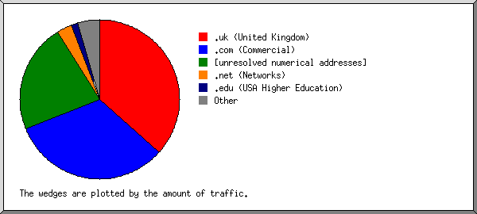
Listing domains, sorted by the amount of traffic.
reqs: %bytes: domain
------: ------: ------
47145: 36.61%: .uk (United Kingdom)
44026: 35.61%: ac.uk
2644: 0.75%: co.uk
154306: 32.34%: .com (Commercial)
108017: 15.98%: googlebot.com
5964: 5.41%: yahoo.com
18758: 4.74%: inktomisearch.com
7842: 0.87%: teoma.com
675: 0.58%: alexa.com
1543: 0.54%: picsearch.com
79411: 22.16%: [unresolved numerical addresses]
7373: 6.81%: 212
41199: 5.95%: 207
713: 0.96%: 203
17355: 0.83%: 65
687: 0.67%: 202
216: 0.51%: 141
5452: 3.07%: .net (Networks)
10908: 1.40%: .edu (USA Higher Education)
10243: 0.88%: stanford.edu
1017: 0.71%: .au (Australia)
640: 0.40%: .nl (Netherlands)
694: 0.35%: .de (Germany)
476: 0.27%: .ca (Canada)
222: 0.19%: .be (Belgium)
180: 0.16%: .sg (Singapore)
72: 0.13%: .se (Sweden)
118: 0.13%: .it (Italy)
92: 0.12%: .fr (France)
306: 0.10%: .tw (Taiwan)
23: 0.09%: .at (Austria)
89: 0.09%: .jp (Japan)
108: 0.09%: .nz (New Zealand)
54: 0.09%: .th (Thailand)
181: 0.08%: .in (India)
138: 0.08%: .org (Non Profit Making Organisations)
5: 0.08%: .zw (Zimbabwe)
62: 0.07%: .no (Norway)
32: 0.07%: .gov (USA Government)
81: 0.07%: .br (Brazil)
95: 0.07%: .il (Israel)
54: 0.07%: .za (South Africa)
65: 0.06%: .ch (Switzerland)
16: 0.05%: .tr (Turkey)
43: 0.04%: .dk (Denmark)
43: 0.04%: .us (United States)
160: 0.04%: .mil (USA Military)
149: 0.04%: [domain not given]
27: 0.04%: .pt (Portugal)
26: 0.03%: .pl (Poland)
2: 0.03%: .aero (Air Transport Industry)
29: 0.03%: .mx (Mexico)
30: 0.03%: .sa (Saudi Arabia)
19: 0.03%: .id (Indonesia)
114: 0.03%: .es (Spain)
77: 0.03%: .gr (Greece)
31: 0.03%: .np (Nepal)
56: 0.03%: .fi (Finland)
7: 0.02%: .ir (Iran)
12: 0.02%: .mt (Malta)
19: 0.02%: .hu (Hungary)
142: 0.02%: .hk (Hong Kong)
49: 0.02%: .ar (Argentina)
51: 0.02%: .pk (Pakistan)
40: 0.01%: .ua (Ukraine)
3: 0.01%: .lv (Latvia)
169: 0.01%: .lt (Lithuania)
23: 0.01%: .my (Malaysia)
75: 0.01%: .ie (Ireland)
40: 0.01%: .cz (Czech Republic)
4: 0.01%: .md (Moldova)
4: 0.01%: .lu (Luxembourg)
14: 0.01%: .ro (Romania)
1: 0.01%: .sy (Syria)
14: 0.01%: .ph (Philippines)
10: 0.01%: .bd (Bangladesh)
17: 0.01%: .tt (Trinidad and Tobago)
6: 0.01%: .ee (Estonia)
4: 0.01%: .hr (Croatia)
5: : .tz (Tanzania)
5: : .tg (Togo)
38: : .ru (Russia)
6: : .is (Iceland)
7: : .arpa (Arpanet)
39: : .vn (Vietnam)
2: : .ma (Morocco)
6: : .si (Slovenia)
8: : .co (Colombia)
9: : .lk (Sri Lanka)
1: : .je (Jersey)
3: : .lb (Lebanon)
22: : .cl (Chile)
1: : .jo (Jordan)
5: : .pe (Peru)
8: : .bw (Botswana)
1: : .eg (Egypt)
19: : .sk (Slovakia)
3: : .cr (Costa Rica)
3: : .bn (Brunei Darussalam)
38: : .qa (Qatar)
3: : .int (International Treaty Organisations)
3: : .uy (Uruguay)
1: : .bg (Bulgaria)
1: : .pf (French Polynesia)
4: : .gt (Guatemala)
1: : .fj (Fiji)
11: : .mu (Mauritius)
21: : .ae (United Arab Emirates)
3: : [unknown domain]
3: : .cy (Cyprus)
4: : .bm (Bermuda)
2: : .ke (Kenya)
1: : .cu (Cuba)
2: : .kh (Cambodia)
1: : .kr (South Korea)
1: : .ls (Lesotho)
1: : .na (Namibia)
1: : .zm (Zambia)
1: : .yu (Yugoslavia)
1: : .ws (Samoa)
1: : .info (Informational)
1: : .cc (Cocos (Keeling) Islands)
18: : .ec (Ecuador)
(Go To: Top: General Summary: Daily Summary: Hourly Summary: Domain Report: Organisation Report: Host Report: Referrer Report: Referring Site Report: Search Query Report: Search Word Report: Browser Report: Browser Summary: Operating System Report: Status Code Report: File Size Report: File Type Report: Directory Report: Request Report)
This report lists the organisations of the computers which requested files.
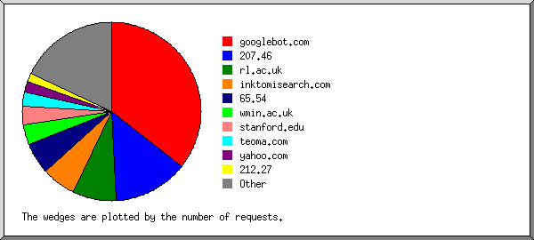
Listing the top 20 organisations by the number of requests, sorted by the number of requests.
reqs: %bytes: organisation ------: ------: ------------ 108017: 15.98%: googlebot.com 41148: 5.89%: 207.46 24022: 31.88%: rl.ac.uk 18758: 4.74%: inktomisearch.com 17319: 0.79%: 65.54 10947: 1.64%: wmin.ac.uk 10243: 0.88%: stanford.edu 7842: 0.87%: teoma.com 5964: 5.41%: yahoo.com 4722: 6.26%: 212.27 2717: 0.19%: msn.com 1999: 0.23%: 212.219 1897: 0.43%: ibm.com 1705: 0.20%: 64.242 1552: 0.18%: essex.ac.uk 1543: 0.54%: picsearch.com 1064: 0.34%: btcentralplus.com 1062: 0.20%: cam.ac.uk 822: 0.24%: dundee.ac.uk 705: 0.33%: blueyonder.co.uk 39819: 22.78%: [not listed: 3,445 organisations]
(Go To: Top: General Summary: Daily Summary: Hourly Summary: Domain Report: Organisation Report: Host Report: Referrer Report: Referring Site Report: Search Query Report: Search Word Report: Browser Report: Browser Summary: Operating System Report: Status Code Report: File Size Report: File Type Report: Directory Report: Request Report)
This report lists the computers which requested files.
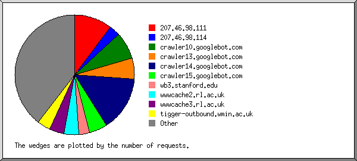
Listing the top 50 hosts by the number of requests, sorted alphabetically.
reqs: %bytes: host -----: ------: ---- 427: 0.07%: 64.242.88.10 1278: 0.13%: 64.242.88.50 8702: 0.40%: 65.54.188.128 4827: 0.18%: 65.54.188.129 3785: 0.21%: 65.54.188.131 181: 0.47%: 141.85.14.24 168: : 143.252.80.124 186: : 204.62.236.7 650: 0.08%: 207.46.98.75 31440: 5.30%: 207.46.98.111 8946: 0.51%: 207.46.98.114 4722: 6.26%: 212.27.41.38 332: 0.01%: 212.125.64.90 585: 0.06%: 212.219.174.8 1366: 0.15%: 212.219.175.8 315: 0.04%: 213.215.201.235 561: : customer-reverse-entry.216.93.176.22 283: 0.05%: crawl29-public.alexa.com 249: 0.04%: crawl33-public.alexa.com 584: 0.46%: crawl7.googlebot.com 348: 0.35%: crawl8.googlebot.com 22172: 2.86%: crawler10.googlebot.com 7221: 1.52%: crawler11.googlebot.com 444: 0.19%: crawler12.googlebot.com 17039: 2.18%: crawler13.googlebot.com 45134: 5.53%: crawler14.googlebot.com 14595: 1.99%: crawler15.googlebot.com 1773: 0.30%: wfp2.almaden.ibm.com 2716: 0.19%: msnbot64115.search.msn.com 978: 0.05%: spider2.picsearch.com 285: 0.35%: spider4.picsearch.com 406: 0.06%: egspd42423.teoma.com 7235: 0.71%: egspd447.teoma.com 378: 0.05%: cr2.turnitin.com 5957: 5.41%: mmcrm5.search.scd.yahoo.com 236: 0.04%: p83.129.124.190.tisdip.tiscali.de 1082: 0.15%: wb1.stanford.edu 9156: 0.73%: wb3.stanford.edu 597: 0.09%: i-195-137-7-76.freedom2surf.net 188: 0.03%: monkia3.cs.ccu.edu.tw 780: 0.18%: brit.ad.cl.cam.ac.uk 174: 0.02%: webcache1.coventry.ac.uk 716: 0.23%: byblos.ais.dundee.ac.uk 1457: 0.18%: sh757.essex.ac.uk 497: 0.07%: oucs-andyt.oucs.ox.ac.uk 12019: 15.85%: wwwcache2.rl.ac.uk 12003: 16.03%: wwwcache3.rl.ac.uk 379: 0.02%: cflow1.csv.warwick.ac.uk 10947: 1.64%: tigger-outbound.wmin.ac.uk 395: : speeddev.vm.bytemark.co.uk 56973: 28.58%: [not listed: 9,028 hosts]
(Go To: Top: General Summary: Daily Summary: Hourly Summary: Domain Report: Organisation Report: Host Report: Referrer Report: Referring Site Report: Search Query Report: Search Word Report: Browser Report: Browser Summary: Operating System Report: Status Code Report: File Size Report: File Type Report: Directory Report: Request Report)
This report lists the referrers (where people followed links from, or pages which included this site's images).
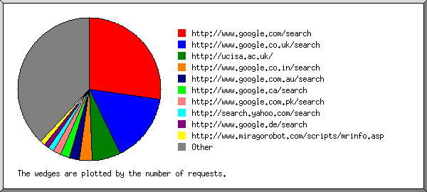
Listing referring URLs with at least 20 requests, sorted by the number of requests.
reqs: URL ----: --- 3105: http://www.google.com/search 31: http://www.google.com/search?q=cache:BeY9ZSclZskJ:www.ucisa.ac.uk/events/2004/conference/papers/dtml_abstract+web-email+addresses+health-care+institutional+managers+in+europe+2004&hl=en 17: http://www.google.com/search?q=cache:SgPnfi6D5iEJ:www.ucisa.ac.uk/groups/hg/events/handheld_2003_papers++Resnet+approach+maxillofacial&hl=en 17: http://www.google.com/search?q=cache:joHTeEgD5-QJ:www.ucisa.ac.uk/about/mailinglists.htm+email+contact+of+nick+members+list&hl=en&ie=UTF-8 17: http://www.google.com/search?q=cache:bLgon4VUyc0J:www.ucisa.ac.uk/HG/docs/AnnualReport01.htm+http://www.jppsg.ac.uk/handbook/computer//laptop.html+%0Ahttp://www.jppsg.ac.uk/handbook/computer//laptop.html+%0A&hl=en 17: http://www.google.com/search?q=cache:rPSVoAajNa8J:www.ucisa.ac.uk/about/membership.htm+2004+contacts+of+DIRECTORY+OF+AFFILIATE+ORGANISATIONS+&hl=en 12: http://www.google.com/search?q=brochure+pdf&hl=en&lr=&ie=UTF-8&start=60&sa=N 12: http://www.google.com/search?sourceid=navclient&hl=zh-CN&ie=UTF-8&q=Virtual+University+filetype:ppt 11: http://www.google.com/search?q=cache:ywTRMe-98CUJ:www.ucisa.ac.uk/TLIG/asg/docs/hdsurvey.htm+Jack+Cardiff+2004+email+contact+directors&hl=en&start=33 10: http://www.google.com/search?q=cache:http://www.ucisa.ac.uk/groups/sdg/ecdl/surveyrelinfo.htm 10: http://www.google.com/search?q=cache:cyE8FgIUM2kJ:revan.ilrt.bris.ac.uk:900/groups/misg/contact.htm++"kay+mills-hicks"&hl=en 1763: http://www.google.co.uk/search 31: http://www.google.co.uk/search?q=cache:Psi5CuhumKIJ:www.ucisa.ac.uk/events/2004/conference/papers/dtml_abstract%3Fpaper%3D1-sharples+project+management+conference+2004&hl=en 30: http://www.google.co.uk/search?q=cache:TtYkBioRcloJ:www.ucisa.ac.uk/+UCISA&hl=en 20: http://www.google.co.uk/search?q=cache:IcBi2AIHXT4J:www.ucisa.ac.uk/activities/surveys/salary/jobs+computer+systems+administrator+job+description&hl=en 18: http://www.google.co.uk/search?q=cache:WCLslgdS-bIJ:www.ucisa.ac.uk/groups/cisg/misgevents/Conference2003/Presentations/LearningforSuccess+managerialism+post+compulsory+education&hl=en&ie=UTF-8 18: http://www.google.co.uk/search?q=cache:EZ3GWR9dHZsJ:www.ucisa.ac.uk/archive/groups/sg/applications/minutes/08Sep1999+abaqus+director&hl=en 18: http://www.google.co.uk/search?q=cache:uSKsxih33U4J:www.ucisa.ac.uk/about/marketing/pr/pr2.htm+john+maxwell+irvine&hl=en 17: http://www.google.co.uk/search?q=cache:hDy22Qm25oYJ:www.ucisa.ac.uk/activities/consult/2003/whitepaper+dfes+higher+education&hl=en 17: http://www.google.co.uk/search?q=cache:joHTeEgD5-QJ:www.ucisa.ac.uk/about/mailinglists.htm+allyson+matthews&hl=en 14: http://www.google.co.uk/search?q=cache:BeY9ZSclZskJ:www.ucisa.ac.uk/events/2004/conference/papers/dtml_abstract+2004+email+address+of+directory+members+management+in+Universal+Personal+&hl=en&ie=UTF-8 13: http://www.google.co.uk/search?q=ucisa&ie=UTF-8&hl=en&meta= 10: http://www.google.co.uk/search?q=cache:2y990r4vMnUJ:www.ucisa.ac.uk/siteinfo/help/webday/2003/UCISA%2520Web%2520Maintainer%2520Day-96.htm+templates+forms&hl=en&start=38 740: http://ucisa.ac.uk/ 319: http://www.google.co.in/search 18: http://www.google.co.in/search?q=cache:5WlPbiBZbUsJ:www.ucisa.ac.uk/groups/misg/misgevents/crmseminar+crm+in+universities&hl=en&ie=UTF-8 272: http://www.google.com.au/search 31: http://www.google.com.au/search?q=cache:3p0WOqfs1KwJ:www.ucisa.ac.uk/events/2004/conference/papers/dtml_abstract%3Fpaper%3D7-harris+CRM+working+paper+pdf&hl=en 222: http://www.google.ca/search 17: http://www.google.ca/search?q=qatar+filetype:ppt&num=100&hl=en&lr=lang_en&ie=UTF-8&start=100&sa=N 16: http://www.google.ca/search?num=100&hl=en&ie=UTF-8&q=e-Community+filetype:ppt&btnG=Search 16: http://www.google.ca/search?hl=en&ie=UTF-8&q="online+communities"+filetype:ppt&btnG=Google+Search 12: http://www.google.ca/search?num=100&hl=en&ie=UTF-8&q="Internet+Strategy"+filetype:ppt&btnG=Search 204: http://www.google.com.pk/search 164: http://www.google.com.pk/search?q=tutor+for+ms+word+filetype:ppt&btnG=Search&hl=en&ie=UTF-8 154: http://search.yahoo.com/search 127: http://www.google.de/search 19: http://www.google.de/search?q=cache:MnWinHqXeAUJ:www.ucisa.ac.uk/groups/cisg/misgevents/DocManSeminar/+cisg+seminar&hl=de 120: http://www.miragorobot.com/scripts/mrinfo.asp 117: http://www.ucisa.org.uk/ 112: http://www.google.com/translate_c 29: http://www.google.com/translate_c?hl=es&sl=en&u=http://www.ucisa.ac.uk/&prev=/search%3Fq%3Ducisa%26hl%3Des%26lr%3D%26ie%3DUTF-8 28: http://www.google.com/translate_c?hl=es&sl=en&u=http://www.ucisa.ac.uk/events/2004/conference/&prev=/search%3Fq%3Ducisa%26hl%3Des%26lr%3D%26ie%3DUTF-8 19: http://www.google.com/translate_c?hl=es&u=http://www.ucisa.ac.uk/&prev=/search%3Fq%3DRankine%26hl%3Des%26lr%3D%26ie%3DUTF-8%26sa%3DG 18: http://www.google.com/translate_c?hl=fr&sl=en&u=http://www.ucisa.ac.uk/groups/sdg/courses/train-skills-intro.htm&prev=/search%3Fq%3Dtraining+skills%26hl%3Dfr%26lr%3D%26ie%3DUTF-8 18: http://www.google.com/translate_c?hl=es&sl=en&u=http://www.ucisa.ac.uk/groups/tlig/minutes/23-05-95.htm&prev=/search%3Fq%3DLa+UCTG%26hl%3Des%26lr%3D%26ie%3DUTF-8%26sa%3DG 93: http://www.translate.ru/url/tu_body.asp 29: http://www.translate.ru/url/tu_body.asp?lang=ru&promt_id=3445700556490653&url=http://ucisa.ac.uk/ 17: http://www.translate.ru/url/tu_body.asp?lang=ru&promt_id=5094908056796326&url=http://www.ucisa.ac.uk/about/admin/constitution.htm 17: http://www.translate.ru/url/tu_body.asp?lang=ru&promt_id=8753897935900022&url=http://www.ucisa.ac.uk/about/index_html 10: http://www.translate.ru/url/tu_body.asp?lang=ru&promt_id=3445700556509474&url=http://ucisa.ac.uk/about 91: http://www.google.com.my/search 20: http://www.google.com.my/search?q=cache:dMv9TTuV5g8J:www.ucisa.ac.uk/resources/docs/library/report_wireless_casestudies.html+case+study+on+groups&hl=en 84: http://66.102.11.104/search 31: http://66.102.11.104/search?q=cache:Xc1kiMVuC3kJ:www.ucisa.ac.uk/events/2004/conference/papers/dtml_abstract%3Fpaper%3D11-dileo+Cisco+director+mobility+marketing+2004&hl=en 18: http://66.102.11.104/search?q=cache:5jFNil5m4dYJ:www.ucisa.ac.uk/groups/ng/contact.htm+contact+list+of+ng&hl=en 18: http://66.102.11.104/search?q=cache:IGLGFddJmnAJ:www.ucisa.ac.uk/groups/sdg/docs/minutes/sdgmins39+"the+learning+foundation"+site:uk&hl=en&ie=UTF-8 16: http://66.102.11.104/search?q=cache:ywTRMe-98CUJ:www.ucisa.ac.uk/TLIG/asg/docs/hdsurvey.htm+liverpool+university+staff+software+licence+microsoft&hl=en 79: wysiwyg://30/http://www.ucisa.ac.uk/activities/surveys/salary/index_html 74: http://66.102.9.104/search 25: http://66.102.9.104/search?q=cache:eBVta75M9OcJ:www.ucisa.ac.uk/events/1998/conference/conf-archive.htm+Nicky+Sinead+Gardner&hl=en&start=11&ie=UTF-8 23: http://66.102.9.104/search?q=cache:BeY9ZSclZskJ:www.ucisa.ac.uk/events/2004/conference/papers/dtml_abstract+email+staff+managers+Conference+2004&hl=en 17: http://66.102.9.104/search?q=cache:dUZUPVvbEA8J:www.ucisa.ac.uk/about/agm/2003/tr-03.htm+treasurer+report+deficit+&hl=en&start=9 73: http://137.222.16.88/members/https://www.ucisa.ac.uk/members/https://www.ucisa.ac.uk/members/https://www.ucisa.ac.uk/members/https://www.ucisa.ac.uk/members/https://www.ucisa.ac.uk/members/https://www.ucisa.ac.uk/members/https://www.ucisa.ac.uk/members/index_html 71: http://uk.search.yahoo.com/search/ukie 67: http://www.google.nl/search 66: http://www.ask.co.uk/ix.asp 64: http://www.altavista.com/ 64: http://www.google.co.th/search 19: http://www.google.co.th/search?q=cache:3b6jvx4hrfIJ:www.ucisa.ac.uk/archive/groups/sg/meetings.htm+minutes+asset+management+report&hl=th 58: http://ucisa.ac.uk/groups/ig/events/20040701/ 55: http://www.google.com.ph/search 54: http://www.ucisa/events/index_html 53: http://www.google.com.tw/search 36: http://www.google.com.tw/search?q=cache:dyF6oYmw1MYJ:www.ucisa.ac.uk/groups/ng/docs/SponsoredConnectionAgreement.htm+agreement+example&hl=zh-TW 51: http://www.google.es/search 18: http://www.google.es/search?q=cache:FjRfReNbJywJ:www.ucisa.ac.uk/groups/ng+&hl=es 51: http://www.google.fi/search 17: http://www.google.fi/search?q=cache:LedJ9_ydrswJ:www.ucisa.ac.uk/about/agm/1999/agm99cal.htm+"the+right+to+vote"+university+conference+site:.uk&hl=fi 51: http://www.google.fr/search 50: http://ato.chaire-mcd.ca/EcoledEte/WebFolder 46: http://www.gla.ac.uk/services/computing/distributedstaff/ 46: http://www.google.co.nz/search 45: http://www.google.com.sg/search 44: http://aolsearch.aol.co.uk/web 43: http://www.google.be/search 43: http://www.jisc.ac.uk/index.cfm 30: http://www.jisc.ac.uk/index.cfm?name=about_glossary 41: http://137.222.16.88/groups/ng/docs/report_wireless_casestudies.html 41: http://www.google.com.vn/search 32: http://www.google.com.vn/search?hl=vi&ie=UTF-8&q=maketing+university+singapore+&btnG=T%C3%ACm+ki%E1%BA%BFm&meta= 40: http://66.102.7.104/search 18: http://66.102.7.104/search?q=cache:rzUcfR1WfooJ:www.ucisa.ac.uk/groups/tlig/teach/courses/lanc.htm+Virtual+Lawyer%E2%84%A2+Systems&hl=en 17: http://66.102.7.104/search?q=cache:WsGSoXm-OwUJ:www.ucisa.ac.uk/siteinfo/dev/webdev04.htm+content+delivery+plan+web+development&hl=en 39: http://www.google.com.tr/search 22: http://www.google.com.tr/search?q=cache:eIohhC4aQ8UJ:www.ucisa.ac.uk/events/2004/conference/papers/dtml_abstract%3Fpaper%3D8-francis+conference+competitiveness+abstract+2004&hl=tr 39: http://www.hesa.ac.uk/links/home_middle.htm 37: http://www.hkcaa.edu.hk/useful.htm 36: http://images.google.com/imgres 36: http://www.google.it/search 34: http://www.music-art-friends.com/links/ 33: http://nwpcc.procureweb.ac.uk/ 32: wysiwyg://43/http://www.ucisa.ac.uk/activities/surveys/salary/form 31: http://www.google.ie/search 30: http://web.ask.com/web 30: http://www.google.ro/search 15: http://www.google.ro/search?q=sales+strategy+filetype:ppt&num=100&hl=ro&lr=lang_en&ie=UTF-8&as_qdr=all&start=200&sa=N 30: https://137.222.16.88/ 29: http://www.webdevboard.com/showthread.php 29: http://www.webdevboard.com/showthread.php?t=22 29: http://www.ucisa.org.uk/archives/cat_event_ucisa_2004.html 29: http://64.233.161.104/search 18: http://64.233.161.104/search?q=cache:4cTzt-bV3jUJ:www.ucisa.ac.uk/TLIG/minutes/11-12-97.htm+email+contact+of+nick+members+list&hl=en&ie=UTF-8 11: http://64.233.161.104/search?q=cache:XOnw3-5VymQJ:www.ucisa.ac.uk/siteinfo/help/guide/login_username_password+username+and+password+for+mature+screen&hl=en 28: http://aolsearch.aol.com/aol/search 27: http://www.google.com.br/search 27: http://nwpcc.procureweb.ac.uk/ISA_Secure.htm 27: http://www.google.ch/search 26: http://www.google.co.il/search 18: http://www.google.co.il/search?q=cache:J2Sc_Y6ao0UJ:www.ucisa.ac.uk/groups/sdg/cpd/pdshefe.htm+HE+FE&hl=iw 26: http://www.educause.edu/collab/ 25: http://www.google.ci/search 18: http://www.google.ci/search?q=cache:ywTRMe-98CUJ:www.ucisa.ac.uk/TLIG/asg/docs/hdsurvey.htm+2004+email+contacts+of+directors+@Bradford.ac.uk&hl=fr 23: http://www.google.ru/search 19: http://www.google.ru/search?q=cache:VFMxqgQ0U7YJ:www.ucisa.ac.uk/groups/sdg/ecdl/+terms+reference+survey&hl=ru 23: http://uk.search.msn.com/results.aspx 23: http://www.admin.cam.ac.uk/offices/misd/intro.html 22: http://www.ucisa.org.uk/archives/000001.html 21: http://www.devaddict.com/ 21: http://images.google.co.uk/imgres 20: http://uk.search.msn.com/spresults.aspx 20: http://revan.ilrt.bris.ac.uk:900/groups/misg/contact.htm 20: http://137.222.16.88/ 20: http://www.ucisa.org.uk/archives/cat_corporate_member_news.html 1585: [not listed: 533 URLs]
(Go To: Top: General Summary: Daily Summary: Hourly Summary: Domain Report: Organisation Report: Host Report: Referrer Report: Referring Site Report: Search Query Report: Search Word Report: Browser Report: Browser Summary: Operating System Report: Status Code Report: File Size Report: File Type Report: Directory Report: Request Report)
This report lists which servers people followed links from.
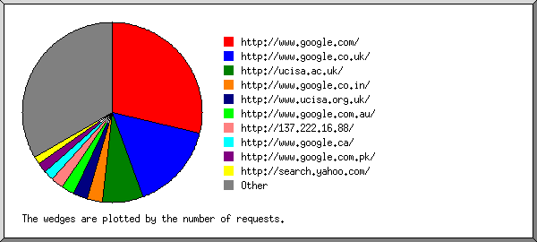
Listing the top 30 referring sites by the number of requests, sorted by the number of requests.
reqs: site ----: ---- 3268: http://www.google.com/ 1772: http://www.google.co.uk/ 839: http://ucisa.ac.uk/ 319: http://www.google.co.in/ 273: http://www.ucisa.org.uk/ 272: http://www.google.com.au/ 252: http://137.222.16.88/ 222: http://www.google.ca/ 204: http://www.google.com.pk/ 158: http://search.yahoo.com/ 127: http://www.google.de/ 120: http://www.miragorobot.com/ 93: http://www.translate.ru/ 91: http://nwpcc.procureweb.ac.uk/ 91: http://www.google.com.my/ 84: http://66.102.11.104/ 79: wysiwyg://30/ 74: http://www.altavista.com/ 74: http://66.102.9.104/ 73: http://www.ucisa/ 72: http://uk.search.yahoo.com/ 68: http://www.google.nl/ 68: http://www.ask.co.uk/ 64: http://www.google.co.th/ 55: http://www.google.com.ph/ 54: http://ato.chaire-mcd.ca/ 53: http://www.google.com.tw/ 51: http://aolsearch.aol.co.uk/ 51: http://www.google.es/ 51: http://www.google.fi/ 2299: [not listed: 373 sites]
(Go To: Top: General Summary: Daily Summary: Hourly Summary: Domain Report: Organisation Report: Host Report: Referrer Report: Referring Site Report: Search Query Report: Search Word Report: Browser Report: Browser Summary: Operating System Report: Status Code Report: File Size Report: File Type Report: Directory Report: Request Report)
This report lists which queries people used in search engines to find the site.
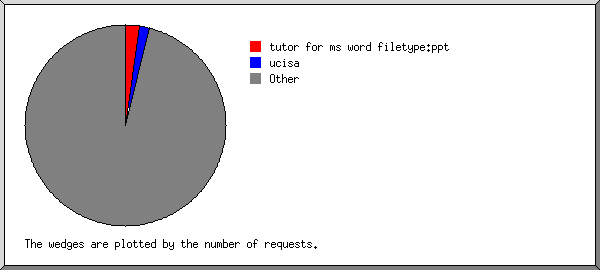
Listing the top 30 queries by the number of requests, sorted by the number of requests.
reqs: search term ----: ----------- 164: tutor for ms word filetype:ppt 116: ucisa 57: portal architecture 36: cache:dyf6oymw1myj:www.ucisa.ac.uk/groups/ng/docs/sponsoredconnectionagreement.htm agreement example 32: maketing university singapore 32: event organisation 31: cache:3p0woqfs1kwj:www.ucisa.ac.uk/events/2004/conference/papers/dtml_abstract?paper=7 harris crm working paper pdf 31: cache:psi5cuhumkij:www.ucisa.ac.uk/events/2004/conference/papers/dtml_abstract?paper=1 sharples project management conference 2004 31: cache:bey9zsclzskj:www.ucisa.ac.uk/events/2004/conference/papers/dtml_abstract web email addresses health care institutional managers in europe 2004 30: cache:ttykbiorcloj:www.ucisa.ac.uk/ ucisa 23: crm seminar 22: training skills 22: cache:eiohhc4aq8uj:www.ucisa.ac.uk/events/2004/conference/papers/dtml_abstract?paper=8 francis conference competitiveness abstract 2004 20: cache:icbi2aihxt4j:www.ucisa.ac.uk/activities/surveys/salary/jobs computer systems administrator job description 19: cache:3b6jvx4hrfij:www.ucisa.ac.uk/archive/groups/sg/meetings.htm minutes asset management report 19: cache:mnwinhqxeauj:www.ucisa.ac.uk/groups/cisg/misgevents/docmanseminar/ cisg seminar 19: motivation questionnaire 18: cache:wclslgds bij:www.ucisa.ac.uk/groups/cisg/misgevents/conference2003/presentations/learningforsuccess managerialism post compulsory education 18: cache:fjrfrenbjywj:www.ucisa.ac.uk/groups/ng 18: cache:j2sc_y6ao0uj:www.ucisa.ac.uk/groups/sdg/cpd/pdshefe.htm he fe 18: cache:usksxih33u4j:www.ucisa.ac.uk/about/marketing/pr/pr2.htm john maxwell irvine 18: cache:ez3gwr9dhzsj:www.ucisa.ac.uk/archive/groups/sg/applications/minutes/08sep1999 abaqus director 17: document sharing 17: qatar filetype:ppt 17: cache:johteegd5 qj:www.ucisa.ac.uk/about/mailinglists.htm allyson matthews 17: cache:ledj9_ydrswj:www.ucisa.ac.uk/about/agm/1999/agm99cal.htm the right to vote university conference site: uk 17: cache:sgpnfi6d5iej:www.ucisa.ac.uk/groups/hg/events/handheld_2003_papers resnet approach maxillofacial 17: cache:rpsvoaajna8j:www.ucisa.ac.uk/about/membership.htm 2004 contacts of directory of affiliate organisations 17: cache:hdy22qm25oyj:www.ucisa.ac.uk/activities/consult/2003/whitepaper dfes higher education 17: cache:blgon4vuyc0j:www.ucisa.ac.uk/hg/docs/annualreport01.htm http://www.jppsg.ac.uk/handbook/computer//laptop.html %0ahttp://www.jppsg.ac.uk/handbook/computer//laptop.html %0a 6253: [not listed: 4,801 search terms]
(Go To: Top: General Summary: Daily Summary: Hourly Summary: Domain Report: Organisation Report: Host Report: Referrer Report: Referring Site Report: Search Query Report: Search Word Report: Browser Report: Browser Summary: Operating System Report: Status Code Report: File Size Report: File Type Report: Directory Report: Request Report)
This report lists which words people used in search engines to find the site.
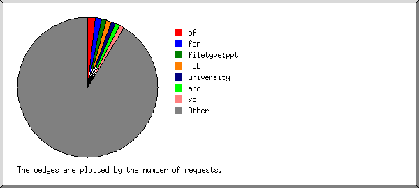
Listing the top 30 query words by the number of requests, sorted by the number of requests.
reqs: search term -----: ----------- 469: of 383: for 318: filetype:ppt 304: job 294: university 290: and 268: xp 264: in 261: management 256: windows 235: 2004 216: information 199: uk 198: description 198: samba 194: ucisa 180: to 180: conference 174: word 172: ms 168: web 164: tutor 155: software 150: desk 148: help 147: it 143: the 140: business 136: portal 132: webmail 20036: [not listed: 3,970 search terms]
(Go To: Top: General Summary: Daily Summary: Hourly Summary: Domain Report: Organisation Report: Host Report: Referrer Report: Referring Site Report: Search Query Report: Search Word Report: Browser Report: Browser Summary: Operating System Report: Status Code Report: File Size Report: File Type Report: Directory Report: Request Report)
This report lists the browsers used by visitors.
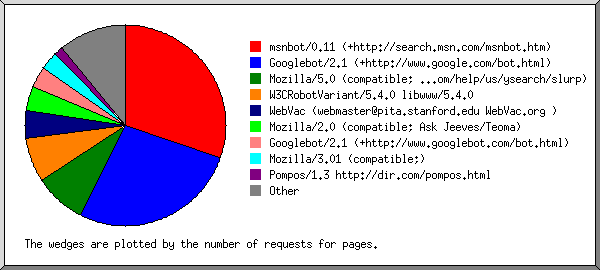
Listing the top 40 browsers by the number of requests for pages, sorted by the number of requests for pages.
reqs: pages: browser -----: -----: ------- 61191: 53785: msnbot/0.11 (+http://search.msn.com/msnbot.htm) 89677: 47896: Googlebot/2.1 (+http://www.google.com/bot.html) 18786: 14820: Mozilla/5.0 (compatible; Yahoo! Slurp; http://help.yahoo.com/help/us/ysearch/slurp) 24020: 12764: W3CRobotVariant/5.4.0 libwww/5.4.0 9156: 8135: WebVac (webmaster@pita.stanford.edu WebVac.org ) 7843: 7014: Mozilla/2.0 (compatible; Ask Jeeves/Teoma) 18223: 5972: Googlebot/2.1 (+http://www.googlebot.com/bot.html) 14082: 5154: Mozilla/3.01 (compatible;) 4723: 2542: Pompos/1.3 http://dir.com/pompos.html 1769: 1490: http://www.almaden.ibm.com/cs/crawler [bc6] 1457: 1206: NutchCVS 6361: 1172: Mozilla/4.0 (compatible; MSIE 6.0; Windows NT 5.1) 1155: 1155: SiteUptime.com 1543: 1052: psbot/0.1 (+http://www.picsearch.com/bot.html) 1278: 829: Mozilla/4.0 compatible ZyBorg/1.0 Dead Link Checker (wn.dlc@looksmart.net; http://www.WISEnutbot.com) 780: 687: SharpSpider 3044: 647: Mozilla/4.0 (compatible; MSIE 6.0; Windows NT 5.0) 3412: 643: Mozilla/4.0 (compatible; MSIE 6.0; Windows NT 5.1; .NET CLR 1.1.4322) 1082: 599: Pita (webmaster@pita.stanford.edu) 903: 540: NaverBot-1.0 (NHN Corp. / +82-2-3011-1954 / nhnbot@naver.com) 716: 339: capek/3.0b (+http://www.egothor.org/robot.html) 597: 339: Mackster( http://www.ukwizz.com ) 675: 323: ia_archiver 1028: 317: Mozilla/4.0 (compatible; MSIE 6.0; Windows 98) 378: 315: TurnitinBot/2.0 http://www.turnitin.com/robot/crawlerinfo.html 262: 262: Microsoft-WebDAV-MiniRedir/5.1.2600 427: 256: Mozilla/4.0 compatible ZyBorg/1.0 (wn-2.zyborg@looksmart.net; http://www.WISEnutbot.com) 243: 243: Microsoft Office Protocol Discovery 375: 217: Mozilla/5.0 (Windows; U; Windows NT 5.1; en-US; rv:1.7) Gecko/20040803 Firefox/0.9.3 961: 215: Mozilla/4.0 (compatible; MSIE 6.0; Windows NT 5.0; .NET CLR 1.1.4322) 296: 206: Mozilla/5.0 (Windows; U; Windows NT 5.1; en-US; rv:1.7) Gecko/20040614 Firefox/0.9 365: 182: Microsoft Data Access Internet Publishing Provider Protocol Discovery 315: 173: Iltrovatore-Setaccio/1.2 (It-bot; http://www.iltrovatore.it/bot.html; info@iltrovatore.it) 225: 170: Mozilla/4.0 (compatible; MSIE 5.5; Windows NT 5.0) Fetch API Request 168: 168: Mozilla/4.0 (compatible; MSIE 6.0; Windows NT 5.1; SV1; MSIECrawler) 185: 165: Mozilla/4.0 (compatible; MSIE 5.23; Mac_PowerPC) 621: 161: Mozilla/4.0 (compatible; MSIE 6.0; Windows NT 5.1; .NET CLR 1.0.3705) 840: 156: Mozilla/4.0 (compatible; MSIE 6.0; Windows NT 5.1; .NET CLR 1.0.3705; .NET CLR 1.1.4322) 276: 141: MSIE 6.0 261: 137: Mozilla/4.0 (compatible; MSIE 6.0; Windows NT 5.0; onlineTV; www.cdesign.de; .NET CLR 1.1.4322) 23684: 4994: [not listed: 1,685 browsers]
(Go To: Top: General Summary: Daily Summary: Hourly Summary: Domain Report: Organisation Report: Host Report: Referrer Report: Referring Site Report: Search Query Report: Search Word Report: Browser Report: Browser Summary: Operating System Report: Status Code Report: File Size Report: File Type Report: Directory Report: Request Report)
This report lists the vendors of visitors' browsers.
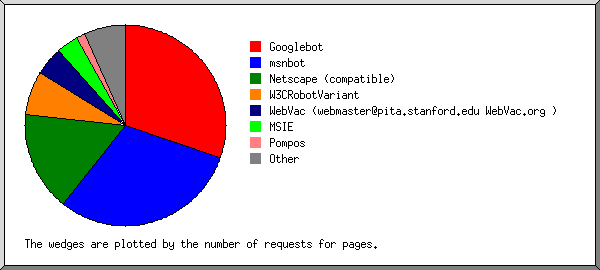
Listing the top 20 browsers by the number of requests for pages, sorted by the number of requests for pages.
no.: reqs: pages: browser ---: ------: -----: ------- 1: 107900: 53868: Googlebot : 107900: 53868: Googlebot/2 2: 61192: 53786: msnbot : 61192: 53786: msnbot/0 3: 43207: 28417: Netscape (compatible) 4: 24020: 12764: W3CRobotVariant : 24020: 12764: W3CRobotVariant/5 5: 9156: 8135: WebVac (webmaster@pita.stanford.edu WebVac.org ) 6: 27956: 6366: MSIE : 24073: 5151: MSIE/6 : 3824: 1183: MSIE/5 : 20: 14: MSIE/4 : 5: 2: MSIE/3 7: 4723: 2542: Pompos : 4723: 2542: Pompos/1 8: 1796: 1507: http: : 1796: 1507: http://www 9: 1579: 1256: NutchCVS : 122: 50: NutchCVS/0 10: 1155: 1155: SiteUptime.com 11: 1543: 1052: psbot : 1543: 1052: psbot/0 12: 2269: 758: Mozilla : 2250: 745: Mozilla/1 : 2: 1: Mozilla/0 13: 780: 687: SharpSpider 14: 1082: 599: Pita (webmaster@pita.stanford.edu) 15: 903: 540: NaverBot-1.0 (NHN Corp. : 903: 540: NaverBot-1.0 (NHN Corp. / 16: 716: 339: capek : 716: 339: capek/3 17: 597: 339: Mackster( http: : 597: 339: Mackster( http://www 18: 675: 323: ia_archiver 19: 378: 315: TurnitinBot : 378: 315: TurnitinBot/2 20: 262: 262: Microsoft-WebDAV-MiniRedir : 262: 262: Microsoft-WebDAV-MiniRedir/5 : 11494: 2571: [not listed: 178 browsers]
(Go To: Top: General Summary: Daily Summary: Hourly Summary: Domain Report: Organisation Report: Host Report: Referrer Report: Referring Site Report: Search Query Report: Search Word Report: Browser Report: Browser Summary: Operating System Report: Status Code Report: File Size Report: File Type Report: Directory Report: Request Report)
This report lists the operating systems used by visitors.
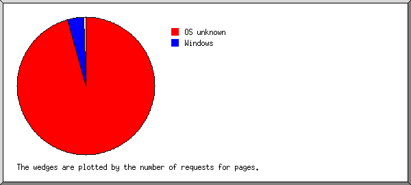
Listing operating systems, sorted by the number of requests for pages.
no.: reqs: pages: OS ---: ------: ------: -- 1: 271256: 169911: OS unknown 2: 30339: 6863: Windows : 17403: 3677: Windows XP : 7851: 1889: Windows 2000 : 3085: 752: Windows 98 : 1381: 361: Windows NT : 176: 78: Unknown Windows : 336: 59: Windows ME : 105: 47: Windows 95 : 2: 0: Windows CE 3: 1257: 664: Macintosh 4: 505: 128: Unix : 373: 102: Linux : 14: 12: BSD : 99: 7: SunOS : 19: 7: Other Unix 5: 16: 11: Known robots 6: 3: 2: BeOS 7: 7: 2: Amiga
(Go To: Top: General Summary: Daily Summary: Hourly Summary: Domain Report: Organisation Report: Host Report: Referrer Report: Referring Site Report: Search Query Report: Search Word Report: Browser Report: Browser Summary: Operating System Report: Status Code Report: File Size Report: File Type Report: Directory Report: Request Report)
This report lists the HTTP status codes of all requests.
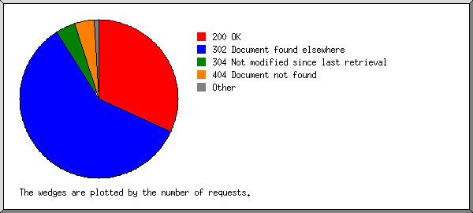
Listing status codes, sorted numerically.
reqs: status code
------: -----------
266637: 200 OK
1: 201 Created
9: 204 OK, but nothing to send
3698: 206 Partial content
6: 2xx [Miscellaneous successes]
494664: 302 Document found elsewhere
33516: 304 Not modified since last retrieval
123: 400 Bad request
3325: 401 Authentication required
22: 403 Access forbidden
33694: 404 Document not found
18: 408 Request timeout
4: 411 Length required
3: 416 Requested range not valid
153: 500 Internal server error
3: 502 Error at upstream server
194: 503 Service temporarily unavailable
(Go To: Top: General Summary: Daily Summary: Hourly Summary: Domain Report: Organisation Report: Host Report: Referrer Report: Referring Site Report: Search Query Report: Search Word Report: Browser Report: Browser Summary: Operating System Report: Status Code Report: File Size Report: File Type Report: Directory Report: Request Report)
This report lists the sizes of files.
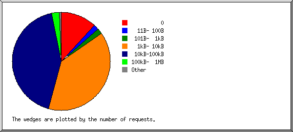
size: reqs: %bytes:
-----------: ------: ------:
0: 36164: :
1B- 10B: 3: :
11B- 100B: 5235: :
101B- 1kB: 5372: 0.03%:
1kB- 10kB: 117411: 4.05%:
10kB-100kB: 130260: 23.49%:
100kB- 1MB: 7743: 23.99%:
1MB- 10MB: 1588: 36.63%:
10MB-100MB: 91: 11.80%:
(Go To: Top: General Summary: Daily Summary: Hourly Summary: Domain Report: Organisation Report: Host Report: Referrer Report: Referring Site Report: Search Query Report: Search Word Report: Browser Report: Browser Summary: Operating System Report: Status Code Report: File Size Report: File Type Report: Directory Report: Request Report)
This report lists the extensions of files.
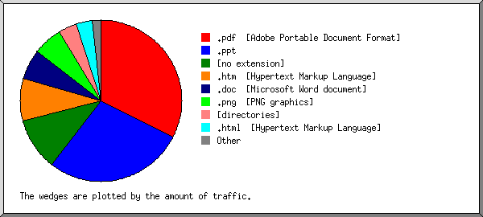
Listing extensions with at least 0.1% of the traffic, sorted by the amount of traffic.
reqs: %bytes: extension -----: ------: --------- 17415: 32.43%: .pdf [Adobe Portable Document Format] 10532: 27.99%: .ppt 57416: 10.46%: [no extension] 64696: 8.54%: .htm [Hypertext Markup Language] 13071: 6.04%: .doc [Microsoft Word document] 6805: 5.97%: .png [PNG graphics] 33134: 3.61%: [directories] 79905: 3.24%: .html [Hypertext Markup Language] 2663: 0.43%: .rtf [Rich Text Format] 589: 0.41%: .pps 930: 0.15%: .xls [Microsoft Excel document] 904: 0.13%: .jpg [JPEG graphics] 75: 0.10%: .mso 15732: 0.50%: [not listed: 21 extensions]
(Go To: Top: General Summary: Daily Summary: Hourly Summary: Domain Report: Organisation Report: Host Report: Referrer Report: Referring Site Report: Search Query Report: Search Word Report: Browser Report: Browser Summary: Operating System Report: Status Code Report: File Size Report: File Type Report: Directory Report: Request Report)
This report lists the directories from which files were requested. (The figures for each directory include all of its subdirectories.)
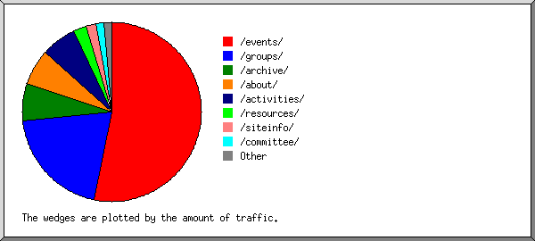
Listing directories with at least 0.01% of the traffic, sorted by the amount of traffic.
reqs: %bytes: directory
------: ------: ---------
120947: 53.12%: /events/
33284: 22.24%: /events/2003/
8596: 18.55%: /events/2004/
22568: 5.35%: /events/2002/
20217: 2.42%: /events/1999/
18148: 2.37%: /events/2000/
14150: 1.73%: /events/2001/
1047: 0.14%: /events/1997/
570: 0.06%: /events/1998/
520: 0.06%: /events/1996/
309: 0.03%: /events/groups/
86: 0.03%: /events/2005/
68564: 20.22%: /groups/
9433: 7.08%: /groups/cisg/
25802: 6.20%: /groups/tlig/
12866: 2.27%: /groups/sdg/
3466: 1.38%: /groups/lcip/
3878: 1.35%: /groups/ig/
4696: 0.82%: /groups/ng/
2304: 0.34%: /groups/exec/
527: 0.06%: /groups/wlf/
183: 0.02%: /groups/events/
40: 0.01%: /groups/directors/
20696: 6.68%: /archive/
18771: 6.51%: /archive/groups/
1768: 0.15%: /archive/resources/
18046: 6.52%: /about/
1313: 2.96%: /about/update/
11439: 1.91%: /about/agm/
2469: 1.14%: /about/marketing/
886: 0.16%: /about/admin/
588: 0.15%: /about/structure/
18444: 6.50%: /activities/
8086: 3.69%: /activities/awards/
3367: 1.81%: /activities/surveys/
2004: 0.34%: /activities/stats/
1025: 0.18%: /activities/consult/
628: 0.08%: /activities/vision/
235: 0.03%: /activities/projects/
6726: 2.36%: /resources/
3757: 1.78%: /resources/docs/
1140: 0.37%: /resources/bestpractice/
439: 0.05%: /resources/extranet/
211: 0.03%: /resources/glossary/
223: 0.02%: /resources/links/
168: 0.02%: /resources/themes/
19185: 1.79%: /siteinfo/
12403: 0.69%: /siteinfo/help/
1814: 0.33%: /siteinfo/dev/
1688: 0.12%: /siteinfo/webday/
10113: 1.45%: /committee/
7139: 1.18%: /committee/exec/
1413: 0.12%: /committee/tlig/
682: 0.08%: /committee/sdg/
212: 0.02%: /committee/tlig-asg/
7922: 0.71%: [root directory]
937: 0.36%: /news/
33: 0.02%: /news/index_html/
882: 0.09%: /ucisa/
881: 0.09%: /ucisa/FORMS/
1279: 0.08%: /stylesheet/
9496: 0.04%: /IMAGES/
194: 0.02%: /contact/
178: 0.02%: /FORMS/
145: 0.02%: /FORMS/search/
113: 0.02%: /help/
96: 0.02%: /help/admin/
145: 0.02%: [not listed: 7 directories]
(Go To: Top: General Summary: Daily Summary: Hourly Summary: Domain Report: Organisation Report: Host Report: Referrer Report: Referring Site Report: Search Query Report: Search Word Report: Browser Report: Browser Summary: Operating System Report: Status Code Report: File Size Report: File Type Report: Directory Report: Request Report)
This report lists the files on the site.
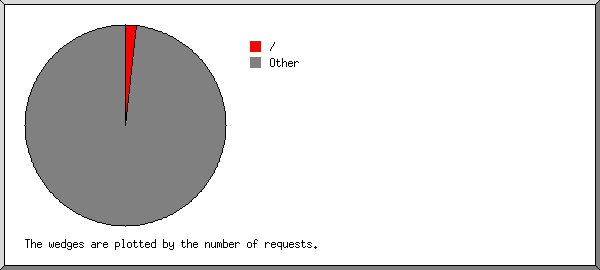
Listing files with at least 20 requests, sorted by the number of requests.
reqs: %bytes: last time: file -----: ------: ---------------: ---- 5332: 0.48%: 31/Aug/04 23:58: / 2664: 0.32%: 31/Aug/04 23:56: /activities/index_html 2394: 0.35%: 31/Aug/04 23:58: /groups/index_html 2303: 0.52%: 31/Aug/04 23:54: /siteinfo/sitemap.htm 2116: 0.32%: 31/Aug/04 23:58: /groups/exec/ 1800: 0.19%: 31/Aug/04 17:52: /groups/ig/events/20040701 1651: 0.21%: 31/Aug/04 18:51: /events/2004/conference/papers/dtml_abstract 81: 0.01%: 31/Aug/04 07:11: /events/2004/conference/papers/dtml_abstract?paper=1-sharples 78: 0.01%: 31/Aug/04 06:56: /events/2004/conference/papers/dtml_abstract?paper=2-roch 77: 0.01%: 31/Aug/04 02:44: /events/2004/conference/papers/dtml_abstract?paper=7-harris 76: 0.01%: 31/Aug/04 12:57: /events/2004/conference/papers/dtml_abstract?paper=11-dileo 73: 0.01%: 31/Aug/04 03:02: /events/2004/conference/papers/dtml_abstract?paper=9-altendorff 73: 0.01%: 31/Aug/04 02:52: /events/2004/conference/papers/dtml_abstract?paper=5-lawes 70: 0.01%: 31/Aug/04 02:39: /events/2004/conference/papers/dtml_abstract?paper=8-francis 69: 0.01%: 31/Aug/04 02:40: /events/2004/conference/papers/dtml_abstract?paper=6-levine 68: 0.01%: 31/Aug/04 06:24: /events/2004/conference/papers/dtml_abstract?paper=3-stinson 67: 0.01%: 31/Aug/04 02:51: /events/2004/conference/papers/dtml_abstract?paper=10-kelly 65: : 31/Aug/04 03:25: /events/2004/conference/papers/dtml_abstract?paper=4-gough&output=print 65: : 31/Aug/04 18:51: /events/2004/conference/papers/dtml_abstract?paper=11-dileo&output=print 65: : 31/Aug/04 11:33: /events/2004/conference/papers/dtml_abstract?paper=6-levine&output=print 64: : 31/Aug/04 11:38: /events/2004/conference/papers/dtml_abstract?paper=8-francis&output=print 64: : 31/Aug/04 03:31: /events/2004/conference/papers/dtml_abstract?paper=7-harris&output=print 64: 0.01%: 31/Aug/04 10:35: /events/2004/conference/papers/dtml_abstract?paper=4-gough 63: : 31/Aug/04 03:36: /events/2004/conference/papers/dtml_abstract?paper=9-altendorff&output=print 63: : 31/Aug/04 03:25: /events/2004/conference/papers/dtml_abstract?paper=2-roch&output=print 62: : 31/Aug/04 03:34: /events/2004/conference/papers/dtml_abstract?paper=1-sharples&output=print 62: 0.02%: 31/Aug/04 07:51: /events/2004/conference/papers/dtml_abstract?output=print 61: : 31/Aug/04 03:25: /events/2004/conference/papers/dtml_abstract?paper=3-stinson&output=print 61: : 31/Aug/04 03:33: /events/2004/conference/papers/dtml_abstract?paper=10-kelly&output=print 59: : 31/Aug/04 03:30: /events/2004/conference/papers/dtml_abstract?paper=5-lawes&output=print 1522: 0.18%: 31/Aug/04 23:50: /groups/sdg 1009: 0.06%: 31/Aug/04 22:13: /stylesheet/style_ie.css 927: 0.10%: 31/Aug/04 23:25: /events/2004/conference/ 822: 0.27%: 31/Aug/04 23:21: /news/index_html 109: 0.01%: 31/Aug/04 03:01: /news/index_html?yearchoice=1&news_group=CISG 81: 0.01%: 31/Aug/04 20:18: /news/index_html?yearchoice=1&news_group=SDG 81: 0.01%: 31/Aug/04 02:51: /news/index_html?yearchoice=1&news_group=TLIG 80: 0.01%: 31/Aug/04 02:40: /news/index_html?yearchoice=1&news_group=SG 80: 0.01%: 31/Aug/04 20:36: /news/index_html?yearchoice=1&news_group=HG 75: 0.01%: 31/Aug/04 20:08: /news/index_html?yearchoice=1&news_group=MISG 807: 0.01%: 31/Aug/04 23:16: /favicon.ico 665: : 31/Aug/04 22:13: /IMAGES/morearrows.gif 625: 0.01%: 31/Aug/04 22:13: /IMAGES/ucisa_logo.gif 619: : 31/Aug/04 22:13: /IMAGES/clear.gif 503: 0.04%: 31/Aug/04 21:09: /ucisa/FORMS/search/members_html 79: 0.01%: 31/Aug/04 08:09: /ucisa/FORMS/search/members_html?search_people=a-pope 77: 0.01%: 31/Aug/04 21:09: /ucisa/FORMS/search/members_html?search_people=tony.arnold@man.ac.uk 70: 0.01%: 31/Aug/04 02:41: /ucisa/FORMS/search/members_html?search_people=jane.brown@oucs.ox.ac.uk 69: 0.01%: 31/Aug/04 19:34: /ucisa/FORMS/search/members_html?search_people=s.m.gough@reading.ac.uk 68: 0.01%: 31/Aug/04 02:39: /ucisa/FORMS/search/members_html?search_people=cmetc 68: 0.01%: 31/Aug/04 20:48: /ucisa/FORMS/search/members_html?search_people=l.cook@plymouth.ac.uk 67: 0.01%: 31/Aug/04 02:38: /ucisa/FORMS/search/members_html?search_people=s-peacock 488: : 31/Aug/04 22:13: /IMAGES/search_button.gif 464: 0.09%: 31/Aug/04 20:16: /activities/surveys/salary/jobs 434: : 31/Aug/04 22:13: /IMAGES/header2_tile1.gif 434: : 31/Aug/04 22:13: /IMAGES/header1_tile.gif 429: : 31/Aug/04 22:13: /IMAGES/header2_tile2.gif 401: 0.33%: 31/Aug/04 18:09: /events/2003/forum/papers/forum-1-barran.pdf 391: 0.06%: 31/Aug/04 12:08: /activities/stats/stats03.htm 389: 0.20%: 31/Aug/04 03:10: /events/2003/forum/papers/forum-1-sct.pdf 387: : 31/Aug/04 22:13: /IMAGES/sidenav_corner1.gif 386: : 31/Aug/04 22:13: /IMAGES/sidenav_corner2.gif 381: 0.41%: 31/Aug/04 18:02: /about/marketing/brochure.pdf 378: 0.05%: 31/Aug/04 20:14: /ucisa/FORMS/search/index_html 63: 0.01%: 31/Aug/04 02:47: /ucisa/FORMS/search/index_html?person_id=7290 62: 0.01%: 31/Aug/04 03:13: /ucisa/FORMS/search/index_html?person_id=3386 61: 0.01%: 31/Aug/04 03:13: /ucisa/FORMS/search/index_html?person_id=3592 59: 0.01%: 31/Aug/04 19:22: /ucisa/FORMS/search/index_html?person_id=6803 57: 0.01%: 31/Aug/04 20:14: /ucisa/FORMS/search/index_html?person_id=3035 378: : 31/Aug/04 22:13: /IMAGES/sidenav_corner3.gif 375: : 31/Aug/04 22:13: /IMAGES/sidenav_corner4.gif 372: 0.13%: 31/Aug/04 18:42: /resources/bestpractice/Event-organisation.pdf 357: 0.25%: 31/Aug/04 21:46: /archive/groups/sg/events-papers/winxp/exeter.ppt 356: 1.50%: 31/Aug/04 22:30: /archive/groups/sg/events-papers/winxp/microsoft.ppt 334: 0.04%: 31/Aug/04 21:35: /events/index_html 321: 0.09%: 31/Aug/04 23:59: /groups/tlig/asg/docs/hdsurvey.htm 310: 0.34%: 31/Aug/04 21:37: /groups/tlig/vle/VLEsurvey.pdf 307: : 31/Aug/04 22:13: /IMAGES/sidenav_tile4.gif 305: : 31/Aug/04 22:13: /IMAGES/sidenav_tile1.gif 303: 0.08%: 31/Aug/04 19:41: /resources/bestpractice/Business-continuity-planning.pdf 303: : 31/Aug/04 22:13: /IMAGES/sidenav_tile3.gif 294: : 31/Aug/04 22:13: /IMAGES/sidenav_tile2.gif 281: : 31/Aug/04 22:13: /IMAGES/sidenav_arrow.gif 275: 0.03%: 31/Aug/04 23:19: /archive/groups/sg/events-papers 274: 0.50%: 31/Aug/04 21:42: /groups/tlig/vle/vle2003.pdf 266: 0.03%: 31/Aug/04 07:15: /resources/extranet/display 29: : 31/Aug/04 03:14: /resources/extranet/display?org=libplus 29: : 31/Aug/04 07:15: /resources/extranet/display?org=sconul 29: : 31/Aug/04 03:02: /resources/extranet/display?org=eduserv 29: : 31/Aug/04 02:47: /resources/extranet/display?org=educause 29: 0.01%: 31/Aug/04 02:59: /resources/extranet/display?org=caudit 28: : 31/Aug/04 03:14: /resources/extranet/display?org=files 28: 0.01%: 31/Aug/04 03:03: /resources/extranet/display?org=jiscinfonet 28: : 31/Aug/04 03:10: /resources/extranet/display?org=eunis 28: : 31/Aug/04 02:58: /resources/extranet/display?org=ukoln 261: 0.14%: 31/Aug/04 23:25: /events/2002/papers/misg-hr-paton.pdf 259: 0.03%: 31/Aug/04 12:26: /contact 255: 0.03%: 31/Aug/04 10:57: /groups/sdg/ditss/index_html 253: 0.38%: 31/Aug/04 22:44: /archive/groups/sg/events/june_2000_jackson.ppt 250: 0.03%: 10/Aug/04 12:01: /groups/ig/events/20040701/prog.htm 248: 0.02%: 31/Aug/04 16:38: /stylesheet/style_ns.css 246: 0.02%: 31/Aug/04 14:30: /groups/cisg 242: 0.04%: 31/Aug/04 19:57: /activities/surveys/salary/index_html 237: 0.21%: 31/Aug/04 16:06: /events/2002/papers/misg-hr-colmer.pdf 236: 0.03%: 31/Aug/04 17:10: /siteinfo/help/guide/lib_dtml_alt_formats 95: 0.01%: 31/Aug/04 14:00: /siteinfo/help/guide/lib_dtml_alt_formats?output=print 41: : 31/Aug/04 04:52: /siteinfo/help/guide/lib_dtml_alt_formats?output=ebook 224: 0.03%: 31/Aug/04 17:31: /about 222: 0.03%: 31/Aug/04 03:11: /groups/cisg/contact.htm 221: 0.02%: 31/Aug/04 20:27: /about/agm/2004/agm04cal.htm 69: : 31/Aug/04 03:18: /about/agm/2004/agm04cal.htm?output=print 67: : 31/Aug/04 20:27: /about/agm/2004/agm04cal.htm?output=ebook 220: 0.03%: 31/Aug/04 11:41: /resources/docs/library/review_0408_pmaconf.htm 63: : 31/Aug/04 03:59: /resources/docs/library/review_0408_pmaconf.htm?output=ebook 62: : 31/Aug/04 03:51: /resources/docs/library/review_0408_pmaconf.htm?output=print 219: 0.02%: 31/Aug/04 03:02: /groups/cisg/bp2001.htm 215: 0.02%: 31/Aug/04 08:59: /groups/cisg/ 215: 0.05%: 31/Aug/04 15:21: /events/2002/misg/papers/craig.pdf 214: 0.12%: 31/Aug/04 15:32: /events/2002/conference/papers/8-evince.pdf 213: 0.11%: 31/Aug/04 21:35: /groups/sdg/ecdl/MASECDLcaa.ppt 213: 0.04%: 31/Aug/04 17:20: /resources/docs/library/article_0309_tabletpc.htm 67: 0.01%: 31/Aug/04 03:55: /resources/docs/library/article_0309_tabletpc.htm?output=ebook 67: 0.01%: 31/Aug/04 14:51: /resources/docs/library/article_0309_tabletpc.htm?output=print 209: 0.02%: 31/Aug/04 19:45: /groups/ng/ 207: 0.02%: 31/Aug/04 03:11: /groups/cisg/about.htm 207: 0.02%: 31/Aug/04 12:53: /groups/tlig 207: 0.02%: 31/Aug/04 20:14: /groups/ng 201: 0.02%: 31/Aug/04 16:43: /archive/groups/sg/ 201: 0.03%: 31/Aug/04 20:17: /about/agm/2004/bp-04 64: 0.01%: 31/Aug/04 20:17: /about/agm/2004/bp-04?output=ebook 61: 0.01%: 31/Aug/04 03:51: /about/agm/2004/bp-04?output=print 200: 0.03%: 31/Aug/04 19:18: /about/index_html 198: 0.02%: 31/Aug/04 12:27: /siteinfo/comments.htm 197: 0.02%: 31/Aug/04 23:27: /groups/tlig/ 194: 0.01%: 31/Aug/04 22:00: /login_html 192: 0.03%: 31/Aug/04 12:26: /index_html 188: 0.03%: 31/Aug/04 12:27: /siteinfo/privacy.htm 188: 0.02%: 31/Aug/04 02:51: /groups/cisg/events.htm 188: 0.02%: 31/Aug/04 03:19: /groups/sdg/ 184: 0.02%: 31/Aug/04 09:20: /groups/lcip/ 183: 0.02%: 31/Aug/04 19:21: /about/agm/2004/agm03min 58: 0.01%: 29/Aug/04 08:41: /about/agm/2004/agm03min?output=print 56: 0.01%: 31/Aug/04 19:21: /about/agm/2004/agm03min?output=ebook 182: 0.07%: 31/Aug/04 20:08: /about/agm/2004/groups/ir-04-ig 58: 0.02%: 31/Aug/04 20:08: /about/agm/2004/groups/ir-04-ig?output=ebook 56: 0.02%: 29/Aug/04 05:21: /about/agm/2004/groups/ir-04-ig?output=print 180: 0.05%: 31/Aug/04 21:43: /resources/docs/library/thinscrn.htm 180: 0.03%: 31/Aug/04 21:35: /groups/ 179: 0.02%: 31/Aug/04 20:09: /about/agm/2004/groups/ar-04-cisg 56: : 31/Aug/04 20:09: /about/agm/2004/groups/ar-04-cisg?output=ebook 56: : 29/Aug/04 05:22: /about/agm/2004/groups/ar-04-cisg?output=print 178: 0.02%: 31/Aug/04 23:29: /archive/groups/sg/events-papers/opensource/birmingham_event.html 177: 0.02%: 31/Aug/04 19:18: /about/agm/2004/agm04min 59: 0.01%: 31/Aug/04 19:18: /about/agm/2004/agm04min?output=ebook 57: 0.01%: 29/Aug/04 13:26: /about/agm/2004/agm04min?output=print 177: 0.02%: 31/Aug/04 12:26: /resources/index_html 177: 0.01%: 31/Aug/04 20:49: /about/agm/2004/nomfrm04 57: : 31/Aug/04 20:49: /about/agm/2004/nomfrm04?output=ebook 56: : 29/Aug/04 08:34: /about/agm/2004/nomfrm04?output=print 176: 0.02%: 31/Aug/04 20:13: /groups/lcip/hg_aims.htm 176: 0.01%: 31/Aug/04 20:12: /about/agm/2004/groups/ar-04-ng 58: : 31/Aug/04 20:12: /about/agm/2004/groups/ar-04-ng?output=ebook 55: : 29/Aug/04 15:00: /about/agm/2004/groups/ar-04-ng?output=print 176: 0.01%: 31/Aug/04 21:11: /about/agm/2004/groups/ar-04-sg 57: : 31/Aug/04 21:11: /about/agm/2004/groups/ar-04-sg?output=ebook 57: : 29/Aug/04 14:46: /about/agm/2004/groups/ar-04-sg?output=print 176: 0.02%: 31/Aug/04 20:03: /siteinfo/help/ 175: 0.03%: 31/Aug/04 10:17: /events/2003/forum/forum-1-review.htm 175: 0.07%: 31/Aug/04 12:53: /events/2002/conference/papers/5-cnl-ucisa.pdf 175: 0.02%: 31/Aug/04 21:01: /about/agm/2004/tr-04 56: : 30/Aug/04 02:52: /about/agm/2004/tr-04?output=print 55: : 31/Aug/04 21:01: /about/agm/2004/tr-04?output=ebook 173: 0.02%: 31/Aug/04 18:25: /archive/groups/sg/events/june_2000.htm 173: 0.02%: 31/Aug/04 15:07: /groups/cisg/links.htm 173: 0.02%: 31/Aug/04 20:15: /about/agm/2004/groups/ar-04-sdg 57: : 29/Aug/04 09:41: /about/agm/2004/groups/ar-04-sdg?output=print 55: : 31/Aug/04 20:15: /about/agm/2004/groups/ar-04-sdg?output=ebook 173: 0.03%: 31/Aug/04 04:18: /groups/wlf/reviews/events/IADIS_2004 48: : 31/Aug/04 04:18: /groups/wlf/reviews/events/IADIS_2004?output=ebook 48: 0.01%: 31/Aug/04 04:17: /groups/wlf/reviews/events/IADIS_2004?output=print 172: 0.03%: 31/Aug/04 12:27: /siteinfo 172: 0.25%: 31/Aug/04 16:34: /events/2004/conference/papers/8-francis.ppt 171: 0.05%: 31/Aug/04 21:21: /about/agm/2004/ar-04 57: 0.02%: 29/Aug/04 14:56: /about/agm/2004/ar-04?output=print 56: 0.02%: 31/Aug/04 21:21: /about/agm/2004/ar-04?output=ebook 170: 0.01%: 31/Aug/04 19:19: /about/agm/2004/groups/ar-04-tlig 57: : 30/Aug/04 06:13: /about/agm/2004/groups/ar-04-tlig?output=print 54: : 31/Aug/04 19:19: /about/agm/2004/groups/ar-04-tlig?output=ebook 170: 0.01%: 31/Aug/04 20:17: /about/agm/2004/agm04agd.htm 59: : 29/Aug/04 13:27: /about/agm/2004/agm04agd.htm?output=print 53: : 31/Aug/04 20:17: /about/agm/2004/agm04agd.htm?output=ebook 169: 0.03%: 31/Aug/04 03:24: /groups/tlig/docs/docshare.htm 165: 4.18%: 31/Aug/04 03:24: /events/2003/conference/papers/9-staes.pdf 165: 0.02%: 31/Aug/04 03:03: /groups/cisg/mailist.htm 164: 1.28%: 31/Aug/04 21:04: /events/2004/conference/papers/7-harris.pdf 164: 0.03%: 31/Aug/04 08:58: /archive/groups/sg/contact.htm 164: 0.02%: 31/Aug/04 03:13: /groups/cisg/docs.htm 163: : 31/Aug/04 16:44: /events/events.ics 162: 0.02%: 31/Aug/04 08:58: /archive/groups/sg/about.htm 162: 0.03%: 31/Aug/04 08:58: /archive/groups/sg/events.htm 161: 0.01%: 31/Aug/04 23:22: /groups/MAINTAINERS 15: : 26/Aug/04 06:38: /groups/MAINTAINERS?group=HG-edit§ion=Hardware 11: : 29/Aug/04 05:55: /groups/MAINTAINERS?group=SDG-edit§ion=SDG Activities 161: 0.02%: 31/Aug/04 10:02: /groups/ig 160: 0.02%: 31/Aug/04 21:36: /groups/lcip/agenda/agenda.htm 160: 0.02%: 31/Aug/04 11:33: /archive/groups/sg/links.htm 160: 0.01%: 31/Aug/04 03:14: /events/UCISA.ics 158: 0.02%: 31/Aug/04 04:58: /groups/cisg/misgevents/Conference2004/index_html 157: 0.18%: 31/Aug/04 22:13: /activities/surveys/feedback/2000/feedback2000rpt.htm 38: 0.04%: 31/Aug/04 03:40: /activities/surveys/feedback/2000/feedback2000rpt.htm?output=print 37: 0.04%: 31/Aug/04 03:22: /activities/surveys/feedback/2000/feedback2000rpt.htm?output=ebook 155: 0.02%: 31/Aug/04 15:51: /events/2003/forum/forum-1-intro.htm 155: 0.42%: 31/Aug/04 20:10: /groups/lcip/events/handheld_2003_papers/HPLiverpool.pdf 154: 0.02%: 31/Aug/04 23:34: /groups/tlig/vle/index_html 153: 0.06%: 31/Aug/04 16:56: /groups/cisg/cprogram99.htm 152: : 31/Aug/04 03:24: /groups/ng/Mins/Oct02.htm 150: 0.02%: 31/Aug/04 18:27: /groups/tlig/conf/tlig00/ 148: 0.02%: 31/Aug/04 08:54: /groups/tlig/contact.htm 147: 0.15%: 31/Aug/04 02:57: /groups/ng/expl/full 67: 0.07%: 31/Aug/04 02:57: /groups/ng/expl/full?output=print 147: 0.02%: 31/Aug/04 21:20: /groups/ng/events.htm 147: 0.01%: 31/Aug/04 05:05: /siteinfo/help/guide/zope_edit 45: : 31/Aug/04 05:05: /siteinfo/help/guide/zope_edit?output=print 42: : 31/Aug/04 04:52: /siteinfo/help/guide/zope_edit?output=ebook 147: 0.02%: 31/Aug/04 12:27: /events/ 147: 0.02%: 31/Aug/04 08:58: /activities/stats/index_html 146: 0.02%: 31/Aug/04 03:16: /groups/tlig/docs.htm 145: 0.02%: 31/Aug/04 08:58: /events/1996/index_html 145: 0.03%: 31/Aug/04 21:25: /groups/ng/docs/report_wireless_casestudies.html 145: 0.02%: 31/Aug/04 03:24: /groups/tlig/conf/tlig98/ 145: 0.03%: 31/Aug/04 23:15: /events/2003/forum/forum-bkg.htm 144: 0.02%: 31/Aug/04 20:12: /archive/groups/sg 143: 0.07%: 31/Aug/04 20:03: /about/update/Update34.pdf 142: 0.01%: 31/Aug/04 12:26: /siteinfo/help/index_html 141: 0.02%: 31/Aug/04 12:26: /siteinfo/index_html 140: 0.02%: 31/Aug/04 20:04: /groups/tlig/courses.htm 140: 0.02%: 31/Aug/04 03:24: /groups 140: 0.01%: 31/Aug/04 09:54: /groups/sdg/docs/publications/it5.doc 138: 0.03%: 31/Aug/04 18:03: /about/admin/Claim_Form_2004.pdf 138: 0.01%: 31/Aug/04 19:58: /archive/groups/sg/events/sept21.htm 137: 0.02%: 31/Aug/04 23:11: /archive/groups/sg/applications/index_html 135: 0.01%: 31/Aug/04 05:16: /siteinfo/help/guide/lib 44: : 31/Aug/04 05:16: /siteinfo/help/guide/lib?output=print 40: : 31/Aug/04 04:57: /siteinfo/help/guide/lib?output=ebook 135: 0.10%: 31/Aug/04 19:18: /events/2003/forum/papers/forum-2-sweeney.pdf 135: 0.01%: 31/Aug/04 08:58: /events/1997/index_html 135: 0.35%: 31/Aug/04 04:04: /events/2002/misg/papers/macleod.pdf 134: 0.03%: 31/Aug/04 20:50: /about/marketing/membershipform.pdf 134: 0.02%: 31/Aug/04 03:12: /groups/tlig/links.htm 134: 0.03%: 31/Aug/04 18:44: /groups/tlig/asg/courses/wkshop03/jul03-bios.htm 134: 0.02%: 31/Aug/04 16:44: /events/2004/index_html 134: 0.01%: 31/Aug/04 03:30: /groups/tlig/about.htm 133: 0.02%: 31/Aug/04 18:20: /resources/glossary/ 132: 0.02%: 31/Aug/04 04:10: /archive/groups/sg/events/dec_2000.htm 131: 0.02%: 31/Aug/04 21:29: /archive/groups/sg/events/dec16.htm 131: 0.02%: 31/Aug/04 08:58: /archive/groups/sg/software-categorisation.html 131: 0.02%: 31/Aug/04 21:29: /archive/groups/sg/events/sept14.htm 131: 0.02%: 31/Aug/04 19:19: /resources/bestpractice/data-protection-bpguide.pdf 131: 0.02%: 31/Aug/04 10:37: /archive/groups/sg/events/dec3.htm 130: 0.04%: 31/Aug/04 08:58: /about/mailinglists.htm 129: 0.02%: 31/Aug/04 20:10: /archive/groups/sg/events-papers/mle-vle/mle-vle-home.htm 129: 0.09%: 31/Aug/04 03:12: /events/2003/forum/papers/forum-1-snelson.pdf 129: 0.03%: 31/Aug/04 08:58: /archive/groups/sg/meetings.htm 129: 0.04%: 31/Aug/04 04:10: /groups/cisg/areport.htm 128: 0.04%: 31/Aug/04 22:55: /groups/cisg/ppt/MISG00-03.pdf 128: 0.01%: 31/Aug/04 20:16: /archive/groups/sg/systems/index_html 128: 0.01%: 31/Aug/04 08:58: /events/1998/index_html 127: 0.02%: 31/Aug/04 08:58: /archive/groups/sg/evaluations/index_html 127: 0.01%: 31/Aug/04 05:29: /groups/sdg/links.htm 126: 0.03%: 31/Aug/04 21:10: /archive/groups/sg/events/gi.htm 126: 0.01%: 31/Aug/04 10:04: /groups/ng/docs.htm 126: 0.01%: 31/Aug/04 08:58: /groups/ig/events/ 126: 0.01%: 31/Aug/04 08:58: /archive/groups/sg/reports.htm 126: 0.01%: 31/Aug/04 15:33: /events/2001/index_html 126: 0.02%: 31/Aug/04 20:30: /about/ 126: 0.02%: 31/Aug/04 21:39: /siteinfo/ 125: 0.01%: 31/Aug/04 08:58: /archive/groups/sg/getting-involved.htm 125: 0.01%: 31/Aug/04 08:58: /events/1999/index_html 125: 0.01%: 31/Aug/04 21:17: /events/2003/forum/forum-2-intro.htm 124: 0.01%: 31/Aug/04 08:58: /activities/surveys/index_html 124: 0.87%: 31/Aug/04 08:39: /groups/cisg/ppt/MISG00-04.ppt 124: 0.01%: 31/Aug/04 17:02: /groups/tlig/teach/courses/chelt.htm 124: 0.01%: 31/Aug/04 18:56: /groups/cisg/misgevents/crmseminar/CRMslides 124: 0.02%: 31/Aug/04 04:18: /archive/groups/sg/events/may_2000.htm 123: 0.03%: 31/Aug/04 22:50: /groups/lcip/docs/AnnualReport01.htm 123: 0.02%: 31/Aug/04 08:58: /events/2002/index_html 123: 0.01%: 31/Aug/04 12:46: /groups/lcip/docs.htm 123: 0.01%: 31/Aug/04 08:58: /events/2000/index_html 122: 0.12%: 31/Aug/04 04:21: /events/2002/misg/papers/murphy.pdf 122: 0.01%: 31/Aug/04 10:16: /events/2003/forum/forum-3-intro.htm 122: 0.01%: 31/Aug/04 02:37: /siteinfo/help/guide/login_username_password 26: : 24/Aug/04 11:39: /siteinfo/help/guide/login_username_password?output=print 122: 0.01%: 31/Aug/04 08:58: /events/2003/index_html 121: 0.01%: 31/Aug/04 14:11: /activities/vision/index_html 121: 0.01%: 31/Aug/04 08:58: /activities/consult/ 121: 0.01%: 31/Aug/04 20:16: /groups/lcip/mins/minutes.htm 120: 0.02%: 31/Aug/04 23:11: /groups/sdg/courses/train-skills-intro.htm 120: 0.57%: 31/Aug/04 16:14: /groups/ig/events/20040211/PlymouthUCISA-IG.pdf 120: 0.01%: 31/Aug/04 22:53: /groups/sdg/docs/publications/chaptab.htm 119: 0.01%: 31/Aug/04 08:58: /siteinfo/help/committee_guide 119: 0.02%: 31/Aug/04 19:34: /groups/sdg/courses/ 119: 0.01%: 31/Aug/04 08:58: /siteinfo/help/poweruser_guide 119: 0.01%: 31/Aug/04 20:43: /activities/awards/2003/index_html 119: 0.01%: 31/Aug/04 19:18: /activities/awards/1996/index_html 119: 0.01%: 31/Aug/04 20:34: /activities/awards/1999/index_html 118: 0.01%: 31/Aug/04 08:58: /activities/projects/ 118: 0.02%: 31/Aug/04 11:46: /siteinfo/dev/webdev04.htm 118: 0.04%: 31/Aug/04 13:31: /resources/docs/library/thinscrn.pdf 118: 0.05%: 31/Aug/04 16:33: /events/2004/conference/papers/2-roch.ppt 118: 0.01%: 31/Aug/04 07:35: /groups/lcip/news.htm 118: 0.01%: 31/Aug/04 03:59: /MAINTAINERS 118: 0.01%: 31/Aug/04 08:58: /activities/awards/2002/index_html 117: 0.01%: 31/Aug/04 05:09: /activities/ 117: 0.01%: 31/Aug/04 21:17: /activities/awards/1998/index_html 117: 0.01%: 31/Aug/04 19:40: /activities/awards/2001/index_html 117: 0.01%: 31/Aug/04 08:58: /siteinfo/help/admin_guide 117: 0.01%: 31/Aug/04 20:11: /activities/awards/1997/index_html 117: 0.02%: 31/Aug/04 10:05: /archive/groups/sg/evaluations/evaluation-criteria.html 117: 0.01%: 31/Aug/04 20:18: /groups/tlig/conf/userserv02/ 116: 0.01%: 31/Aug/04 08:58: /activities/awards/2000/index_html 116: 0.01%: 31/Aug/04 20:15: /siteinfo/help/maintainer_guide 115: 0.01%: 31/Aug/04 04:02: /groups/lcip/events/ 115: 0.01%: 31/Aug/04 17:21: /groups/tlig/conf/ 115: 0.04%: 31/Aug/04 04:38: /activities/surveys/tc/2004/ 115: 0.01%: 31/Aug/04 19:24: /groups/tlig/teach/members.htm 115: 0.04%: 31/Aug/04 03:50: /groups/cisg/mibptext.htm 115: 0.01%: 31/Aug/04 05:46: /groups/tlig/conf/apr1_96/uctlig.htm 115: 0.01%: 31/Aug/04 04:07: /groups/cisg/misgevents 114: 0.02%: 31/Aug/04 08:58: /about/structure/ 114: 0.02%: 31/Aug/04 03:31: /groups/tlig/teach/agencies.htm 114: 0.01%: 31/Aug/04 08:58: /siteinfo/help/user_guide 113: 0.01%: 31/Aug/04 08:58: /siteinfo/help/index_all 112: 0.02%: 31/Aug/04 02:58: /events/2003/forum/forum-2-review.htm 112: 0.01%: 31/Aug/04 20:36: /groups/tlig/teach/courses.htm 112: 0.01%: 31/Aug/04 03:13: /events/2003/ 112: 0.01%: 31/Aug/04 03:45: /groups/tlig/asg/docs/adsurvey.htm 112: 0.04%: 31/Aug/04 18:54: /groups/tlig/vle/Questionnaire2.pdf 112: 0.01%: 31/Aug/04 18:53: /groups/ig/ 112: 0.01%: 31/Aug/04 03:22: /groups/tlig/docs/handbook/ 111: 0.07%: 31/Aug/04 21:32: /activities/surveys/salary/jobs.pdf 111: 0.01%: 31/Aug/04 12:43: /groups/cisg/directory 110: 0.01%: 31/Aug/04 21:38: /activities/surveys/feedback/ 110: 0.01%: 31/Aug/04 03:14: /events/2003/forum/forum-1-prog.htm 110: : 31/Aug/04 22:00: /IMAGES/hardware_icon.gif 109: 0.01%: 31/Aug/04 14:36: /groups/tlig/vle/ 108: 0.01%: 31/Aug/04 11:09: /groups/sdg/courses/train-skills-timetable.htm 21: : 31/Aug/04 10:27: /groups/sdg/courses/train-skills-timetable.htm?output=print 20: : 31/Aug/04 11:09: /groups/sdg/courses/train-skills-timetable.htm?output=ebook 108: 0.03%: 31/Aug/04 03:30: /groups/tlig/asg/docs/adsurres.doc 108: 0.01%: 31/Aug/04 04:00: /groups/tlig/teach/docs.htm 108: 0.01%: 31/Aug/04 22:00: /IMAGES/keyboard.jpg 107: 0.01%: 31/Aug/04 08:58: /siteinfo/help/webday/2003/ 107: 0.01%: 31/Aug/04 19:37: /groups/tlig/teach/act.htm 107: 0.02%: 31/Aug/04 23:06: /activities/surveys/salary/ 107: 0.18%: 31/Aug/04 20:02: /events/2002/conference/papers/10-powerknowledge.pdf 106: 0.01%: 31/Aug/04 11:00: /events/1999/conference/harrogate-map.htm 105: 0.08%: 31/Aug/04 03:11: /events/2002/papers/misg_dm_hendley.pdf 105: 1.00%: 31/Aug/04 03:22: /events/2003/conference/papers/3-hey.pdf 105: 0.01%: 31/Aug/04 03:24: /events/2003/forum/forum-2-prog.htm 105: 0.03%: 31/Aug/04 06:44: /groups/lcip/events/handheld_2003_papers 105: : 31/Aug/04 22:00: /IMAGES/home_title.gif 105: 0.02%: 31/Aug/04 11:53: /groups/lcip/events/liverpool-hotels.html 105: : 31/Aug/04 22:00: /IMAGES/contact_title.gif 105: : 31/Aug/04 22:00: /IMAGES/manage_icon.gif 105: 0.01%: 31/Aug/04 08:58: /siteinfo/help/MAINTAINERS 100: 0.01%: 31/Aug/04 08:58: /siteinfo/help/MAINTAINERS?locale=Help and Guidance 104: 0.20%: 31/Aug/04 03:26: /archive/groups/sg/events/dec_2000/tyson.ppt 104: 0.05%: 31/Aug/04 23:12: /events/2002/misg/papers/rowe.pdf 104: 0.02%: 31/Aug/04 21:21: /groups/sdg/ecdl/index_html 104: : 31/Aug/04 22:00: /IMAGES/arrow2.gif 104: 0.03%: 31/Aug/04 08:48: /siteinfo/dev/webstrat.htm 104: 0.01%: 31/Aug/04 09:20: /groups/lcip 104: : 31/Aug/04 22:00: /IMAGES/teaching_icon.gif 104: : 31/Aug/04 22:00: /IMAGES/home_right_bot_corner.gif 104: : 31/Aug/04 22:00: /IMAGES/news_title.gif 104: : 31/Aug/04 22:00: /IMAGES/home_left_bot_corner.gif 104: 0.03%: 31/Aug/04 08:58: /about/agm/ 104: : 31/Aug/04 22:00: /IMAGES/network_icon.gif 104: : 31/Aug/04 22:00: /IMAGES/home_right_corner.gif 103: 0.01%: 31/Aug/04 03:54: /groups/sdg/docs/ar2001.doc 103: 0.01%: 31/Aug/04 11:14: /siteinfo/help/guide/lib_dtml_sidebar 25: : 30/Aug/04 22:06: /siteinfo/help/guide/lib_dtml_sidebar?output=print 103: : 31/Aug/04 22:00: /IMAGES/home_left_corner.gif 103: 0.03%: 31/Aug/04 18:54: /groups/tlig/vle/Questionnaire1.pdf 103: 0.01%: 31/Aug/04 20:46: /resources/bestpractice/ 103: 0.04%: 31/Aug/04 02:44: /about/admin/commstrat.htm 103: : 31/Aug/04 22:00: /IMAGES/staff_icon.gif 103: : 31/Aug/04 22:00: /IMAGES/ucisagroups.gif 103: 0.01%: 31/Aug/04 08:58: /about/structure/support 102: 0.01%: 31/Aug/04 10:04: /groups/ng/contact.htm 102: 0.01%: 31/Aug/04 12:18: /committee/tlig-asg/documents/motivation.doc 101: 0.03%: 31/Aug/04 04:12: /events/2002/misg/papers/yapp.pdf 101: 0.01%: 31/Aug/04 23:37: /siteinfo/help/webday/2003/UCISA Web Maintainer Day-95.htm 101: 0.10%: 31/Aug/04 03:18: /events/2003/conference/papers/8-kess.pdf 101: 0.01%: 31/Aug/04 23:41: /events/2003/forum/MAINTAINERS 98: 0.01%: 31/Aug/04 23:41: /events/2003/forum/MAINTAINERS?locale=Managers Forum 101: 0.09%: 31/Aug/04 13:43: /archive/groups/sg/events-papers/disabilities/PersonalPerspective.ppt 101: 0.02%: 31/Aug/04 20:55: /groups/ng/expl/expl-05.htm 101: 0.01%: 31/Aug/04 02:40: /groups/sdg/courses/psa-intro.htm 101: 0.01%: 31/Aug/04 08:58: /contact/ 101: 0.01%: 31/Aug/04 21:48: /events/groups/cisg/misgevents/Conference2004/index_html 100: 0.01%: 31/Aug/04 10:04: /groups/ng/links.htm 100: 0.01%: 31/Aug/04 19:37: /activities/awards/2001/ 100: 0.01%: 31/Aug/04 04:34: /about/admin/commstrat.doc 100: 0.05%: 31/Aug/04 12:09: /events/2003/forum/papers/forum-2-frost.pdf 100: 0.01%: 31/Aug/04 06:14: /siteinfo/dev/ 100: 0.01%: 31/Aug/04 21:27: /archive/groups/sg/events-papers/win2001/manchester_event.html 100: 0.01%: 31/Aug/04 16:28: /groups/sdg/committee.htm 100: 0.02%: 31/Aug/04 20:16: /groups/sdg/ecdl/ 100: 0.52%: 31/Aug/04 23:42: /groups/cisg/ppt/MISG99-goddard.ppt 100: 0.08%: 31/Aug/04 20:18: /activities/awards/2001/travelburs/warwickreport.doc 99: 0.56%: 31/Aug/04 16:30: /events/2004/conference/papers/9-altendorff.pdf 99: : 31/Aug/04 07:54: /archive/groups/sg/75/thirteenc.txt 99: 0.01%: 31/Aug/04 02:40: /groups/ng/expl/expl-00.htm 99: 0.01%: 31/Aug/04 02:41: /siteinfo/dev/index_html 99: 0.02%: 31/Aug/04 14:05: /resources/docs/library/report_wireless_casestudies.html 99: : 31/Aug/04 18:10: /archive/groups/sg/75/sixf.txt 99: : 31/Aug/04 04:19: /archive/groups/sg/75/sixa.txt 99: 0.06%: 31/Aug/04 02:42: /about/structure/ucisa-contracts-sor-2004.pdf 98: 0.01%: 31/Aug/04 03:25: /events/2003/forum/ 97: 0.01%: 31/Aug/04 16:08: /groups/sdg/ucisatg.htm 97: 0.03%: 31/Aug/04 20:09: /groups/ng/docs/report_wireless_casestudies.pdf 97: 0.01%: 31/Aug/04 20:16: /archive/groups/sg/events-papers/itincomp/umist_event.html 97: 0.01%: 31/Aug/04 08:58: /about/admin/ 97: 0.16%: 31/Aug/04 17:16: /groups/tlig/conf/userserv02/present/jenkins.ppt 97: 0.01%: 31/Aug/04 12:32: /about/activities.htm 97: 0.02%: 31/Aug/04 12:32: /about/marketing/logos/ 96: 0.02%: 31/Aug/04 08:48: /siteinfo/help/guide/lib_dtml 27: : 26/Aug/04 17:11: /siteinfo/help/guide/lib_dtml?output=print 96: 0.03%: 31/Aug/04 21:13: /groups/tlig/asg/docs/hints.htm 96: 0.01%: 31/Aug/04 08:58: /about/membership.htm 96: 0.02%: 31/Aug/04 15:58: /about/admin/constitution.htm 96: 0.11%: 31/Aug/04 03:28: /archive/groups/sg/events-papers/disabilities/AssistiveTechnology.ppt 95: 0.01%: 31/Aug/04 02:38: /groups/ng/committee.htm 95: : 31/Aug/04 04:19: /archive/groups/sg/75/sixd.txt 95: 0.21%: 31/Aug/04 22:01: /events/2003/forum/papers/forum-1-smith.pdf 95: 0.01%: 31/Aug/04 03:05: /archive/groups/sg/events-papers/xml/oxford_event.html 95: 0.01%: 31/Aug/04 18:47: /archive/groups/sg/events-papers/winxp/ 95: 0.03%: 31/Aug/04 09:33: /groups/ng/expl/expl-10.htm 95: : 31/Aug/04 04:25: /archive/groups/sg/75/sixb.txt 94: 0.01%: 31/Aug/04 11:51: /groups/lcip/events/support_2001.html 94: 0.17%: 31/Aug/04 11:25: /activities/surveys/salary/form 94: 0.01%: 31/Aug/04 08:58: /about/network.htm 94: : 31/Aug/04 04:34: /archive/groups/sg/75/nine.txt 94: 0.02%: 31/Aug/04 20:47: /activities/awards/2001/webawards/studentparticipation/index_html 93: 0.01%: 31/Aug/04 17:31: /about/benefits.htm 93: 0.01%: 31/Aug/04 08:58: /about/events.htm 93: 0.01%: 31/Aug/04 02:40: /activities/stats/ 93: 0.01%: 31/Aug/04 08:49: /groups/tlig/asg/contact.htm 93: 0.01%: 31/Aug/04 21:07: /about/marketing/ 93: 0.01%: 31/Aug/04 22:18: /groups/tlig/teach/index_html 93: 0.02%: 31/Aug/04 02:42: /about/admin/expense_claim_rules.htm 93: 0.01%: 31/Aug/04 02:47: /resources/docs/ 93: 0.01%: 31/Aug/04 02:58: /groups/sdg/sdglist.htm 93: 0.03%: 31/Aug/04 17:14: /groups/tlig/minutes/mins_33ag.htm 93: 0.02%: 31/Aug/04 21:48: /groups/ng/expl/expl-08.htm 92: 0.02%: 31/Aug/04 21:08: /groups/lcip/docs/AnnualReport00.htm 92: 0.03%: 31/Aug/04 03:18: /groups/tlig/busplan.htm 92: 0.16%: 31/Aug/04 04:34: /groups/cisg/misgevents/crmseminar/MBSPPT 92: 0.06%: 31/Aug/04 14:55: /events/2002/misg/papers/allen.pdf 92: 0.01%: 31/Aug/04 02:47: /siteinfo/policy.html 92: 0.04%: 31/Aug/04 07:46: /resources/docs/library/burs.htm 92: 0.01%: 31/Aug/04 03:49: /groups/cisg/cprogram01.htm 92: 0.08%: 31/Aug/04 14:00: /events/2004/conference/exhnbk.pdf 91: 0.01%: 31/Aug/04 02:39: /groups/sdg/courses/index_html 91: 0.12%: 31/Aug/04 03:26: /events/2003/forum/papers/forum-2-leeder.pdf 91: 0.01%: 31/Aug/04 19:57: /archive/groups/sg/events/dec17.htm 91: 0.01%: 31/Aug/04 02:39: /groups/tlig/admin/index_html 91: 0.01%: 31/Aug/04 04:05: /archive/groups/sg/events-papers/winxp/aims.htm 91: 0.03%: 31/Aug/04 04:06: /groups/tlig/minutes/mins_32.htm 91: 0.01%: 31/Aug/04 16:35: /events/2004/conference/papers/ 91: 0.02%: 31/Aug/04 02:46: /resources/docs/library/ 91: 0.01%: 31/Aug/04 08:58: /about/agm/2002/ 91: 0.01%: 31/Aug/04 08:58: /about/agm/2003/ 90: 0.01%: 31/Aug/04 02:39: /groups/tlig/minutes.htm 90: 0.02%: 31/Aug/04 03:23: /groups/sdg/ecdl/surveyrelinfo.htm 90: 0.01%: 31/Aug/04 02:38: /groups/tlig/comms/index_html 90: 0.01%: 31/Aug/04 02:39: /siteinfo/webday/ 90: 0.01%: 31/Aug/04 21:29: /groups/cisg/cprogram00.htm 90: 0.01%: 31/Aug/04 17:01: /groups/wlf 90: 0.01%: 31/Aug/04 02:38: /groups/tlig/asg/index_html 90: 0.01%: 31/Aug/04 21:25: /groups/ng/about.htm 90: 0.01%: 31/Aug/04 08:58: /contact/index_html 90: 0.02%: 31/Aug/04 09:42: /events/2003/conference/conf-review.htm 89: 0.01%: 31/Aug/04 03:22: /groups/sdg/ecdl/ecdlworkshop2.htm 89: 0.01%: 31/Aug/04 14:21: /groups/ng/expl/expl-09.htm 89: 0.01%: 31/Aug/04 08:49: /groups/tlig/asg/docs/index_html 89: 0.09%: 31/Aug/04 03:23: /events/2003/forum/papers/forum-1-cobb.pdf 89: 0.02%: 31/Aug/04 20:16: /groups/tlig/minutes/11-09-97.htm 89: 0.01%: 31/Aug/04 03:53: /siteinfo/help/guide/login_authorisation 27: : 24/Aug/04 10:47: /siteinfo/help/guide/login_authorisation?output=print 89: 0.01%: 31/Aug/04 20:18: /resources/docs/library/qaam.htm 89: 0.11%: 31/Aug/04 03:48: /events/2002/papers/misg_dm_dilks.pdf 89: 0.02%: 31/Aug/04 02:40: /groups/sdg/courses/psa-bkg.htm 89: 0.02%: 31/Aug/04 02:58: /events/2002/conference/conf-prog.htm 89: 0.01%: 31/Aug/04 08:58: /about/agm/2001/ 89: 0.03%: 31/Aug/04 04:47: /groups/tlig/minutes/23-05-95.htm 89: 0.03%: 31/Aug/04 16:24: /groups/tlig/minutes/27-02-97.htm 88: 0.02%: 31/Aug/04 05:16: /groups/tlig/minutes/06-09-99.htm 88: 0.01%: 31/Aug/04 21:13: /groups/sdg/docs/annual.htm 88: 0.01%: 31/Aug/04 03:22: /archive/groups/sg/papers/structure02.html 88: 0.02%: 31/Aug/04 05:07: /groups/ng/Mins/Jul99.htm 88: 0.03%: 31/Aug/04 20:58: /activities/awards/1997/webawards/teachlearn/index_html 88: 0.02%: 31/Aug/04 04:29: /groups/tlig/minutes/11-12-97.htm 88: 0.03%: 31/Aug/04 04:26: /groups/tlig/minutes/mins_33.htm 88: 0.03%: 31/Aug/04 04:49: /groups/tlig/minutes/mins_30.html 88: 0.02%: 31/Aug/04 19:48: /groups/sdg/docs/bus97.htm 88: 0.04%: 31/Aug/04 14:14: /resources/docs/library/perfind.htm 88: 0.01%: 31/Aug/04 20:25: /archive/groups/sg/papers/campus/ca_3-1_options 88: 0.16%: 30/Aug/04 14:55: /groups/ig/events/20040701/papers/Managing the Enterprise Desktop V2.pdf 88: : 31/Aug/04 20:09: /archive/groups/sg/74/eight.txt 87: 0.01%: 31/Aug/04 06:30: /groups/cisg/misgevents/crmseminar 87: 0.02%: 31/Aug/04 05:07: /groups/tlig/minutes/mins_29.html 87: 0.03%: 31/Aug/04 04:50: /groups/tlig/minutes/15-05-00.htm 87: 0.03%: 31/Aug/04 07:33: /activities/awards/2000/webawards/supportingstaff/index_html 87: 0.50%: 31/Aug/04 20:11: /activities/surveys/feedback/feedback_2004_rpt 87: 0.02%: 31/Aug/04 02:45: /groups/sdg/award2002.pdf 87: 0.01%: 31/Aug/04 02:39: /events/2002/misg/reviews.htm 87: 0.01%: 31/Aug/04 04:55: /groups/tlig/events.htm 87: 0.08%: 31/Aug/04 11:36: /siteinfo/dev/projects/projects_2004.pdf 87: 0.02%: 31/Aug/04 06:21: /about/agm/2003/groups/group-03-misg.htm 87: 0.02%: 31/Aug/04 05:16: /groups/tlig/minutes/06-02-96.htm 87: 0.01%: 31/Aug/04 20:18: /activities/awards/1996/travelburs/index_htm 87: 0.01%: 31/Aug/04 11:17: /resources/themes/ 87: 0.02%: 31/Aug/04 20:13: /groups/tlig/minutes/17-06-98.htm 86: 0.53%: 31/Aug/04 16:34: /events/2004/conference/papers/9-altendorff.ppt 86: 0.08%: 31/Aug/04 19:38: /resources/bestpractice/ensuring_inclusion.pdf 86: 0.02%: 31/Aug/04 19:54: /groups/tlig/minutes/02-09-98.htm 86: 0.03%: 31/Aug/04 21:01: /groups/tlig/minutes/mins_31.htm 86: 0.02%: 31/Aug/04 22:29: /groups/tlig/minutes/27-11-98.htm 86: 0.02%: 31/Aug/04 04:43: /groups/sdg/docs/business.htm 86: 0.75%: 31/Aug/04 03:25: /events/2004/conference/papers/7-harris.ppt 86: 0.01%: 31/Aug/04 07:45: /about/marketing/pr/ 86: 0.03%: 31/Aug/04 20:51: /groups/tlig/minutes/08-02-95.htm 86: 0.01%: 31/Aug/04 02:37: /groups/ng/projects.htm 86: 0.01%: 31/Aug/04 02:46: /groups/sdg/docs/ 86: 0.01%: 31/Aug/04 02:39: /siteinfo/webday/bkg 86: 0.04%: 31/Aug/04 07:17: /activities/awards/2000/webawards/supportingstudents/index_html 86: 0.01%: 31/Aug/04 05:02: /archive/groups/sg/events-papers/winxp/prog.htm 86: 0.01%: 31/Aug/04 02:39: /resources/ 86: 0.02%: 31/Aug/04 02:44: /groups/tlig/asg/courses/wkshop03/jul03p.htm 85: 0.03%: 31/Aug/04 04:43: /groups/tlig/minutes/03-02-99.htm 85: 0.02%: 31/Aug/04 20:15: /groups/tlig/minutes/19-02-98.htm 85: 0.02%: 31/Aug/04 04:55: /groups/tlig/minutes/27-05-99.htm 85: 0.04%: 31/Aug/04 20:07: /events/2002/misg/papers/brannon.pdf 85: 0.01%: 31/Aug/04 10:30: /password_reset 85: 0.01%: 31/Aug/04 02:40: /resources/MAINTAINERS 83: 0.01%: 31/Aug/04 02:40: /resources/MAINTAINERS?locale=Resources 85: 0.01%: 31/Aug/04 02:44: /events/2001/conference/conf-map.htm 85: 0.03%: 31/Aug/04 10:03: /siteinfo/help/webday/2003/UCISA Web Maintainer Day-351.htm 85: 0.01%: 31/Aug/04 08:49: /groups/tlig/asg/courses/index_html 85: 0.01%: 31/Aug/04 08:58: /activities/consult/index_html 85: 0.01%: 31/Aug/04 17:38: /events/1996/conference/torquay96.htm 85: 0.01%: 31/Aug/04 02:38: /siteinfo/help/user_faq 85: 0.23%: 31/Aug/04 21:33: /groups/lcip/events/handheld_2003_papers/DMitchell.pdf 85: 0.01%: 31/Aug/04 02:42: /groups/tlig/award/fullawardbestpractice.doc 85: : 31/Aug/04 20:53: /IMAGES/pdf.gif 85: 0.01%: 31/Aug/04 02:46: /siteinfo/MAINTAINERS 80: 0.01%: 31/Aug/04 02:46: /siteinfo/MAINTAINERS?locale=Site Information 84: 0.08%: 31/Aug/04 12:44: /groups/cisg/directory/misucisa.csv 84: 0.01%: 31/Aug/04 08:41: /activities/stats/stats01.htm 84: 0.01%: 31/Aug/04 14:10: /activities/surveys/tc 84: 0.04%: 31/Aug/04 03:32: /events/2002/papers/misg-hr-bpr.pdf 84: 0.01%: 31/Aug/04 02:40: /groups/sdg/docs/publications/index_html 84: 0.01%: 31/Aug/04 03:02: /groups/sdg/cpd/ 84: 0.01%: 31/Aug/04 03:27: /archive/resources/docs/library/ 84: 0.03%: 31/Aug/04 20:44: /activities/awards/1997/webawards/infodissem/index_html 84: 0.23%: 31/Aug/04 20:39: /groups/cisg/misgevents/DocManSeminar/DocManPresentFolder/DocManPresDolphin 83: 0.02%: 31/Aug/04 21:33: /groups/tlig/minutes/05-09-00.htm 83: 0.01%: 31/Aug/04 21:25: /groups/ng/index_html 83: 0.07%: 31/Aug/04 20:18: /activities/surveys/feedback/2000/feedback2000.doc 83: 0.01%: 31/Aug/04 03:53: /siteinfo/help/guide/login_login 29: : 28/Aug/04 15:30: /siteinfo/help/guide/login_login?output=print 83: 0.03%: 31/Aug/04 02:53: /groups/ng/expl/expl-13.htm 83: 0.01%: 31/Aug/04 21:29: /groups/events/index_html 83: 0.10%: 31/Aug/04 15:06: /events/2002/hg-san/ulster.pdf 83: 0.01%: 31/Aug/04 08:58: /archive/ 83: 0.02%: 31/Aug/04 20:13: /activities/awards/1999/webawards/mis/index_html 83: 0.01%: 31/Aug/04 07:58: /archive/groups/sg/applications/ 83: : 31/Aug/04 22:00: /IMAGES/underline.gif 83: 3.01%: 31/Aug/04 03:25: /events/2004/conference/papers/8-francis.pdf 83: 0.01%: 31/Aug/04 15:19: /events/2004/conference/conf-exhibitors.htm 83: 0.01%: 31/Aug/04 03:22: /groups/sdg/ecdl/survey.htm 82: 0.01%: 31/Aug/04 15:49: /events/2002/misg/papers/denniss-pap.htm 82: 0.03%: 31/Aug/04 02:38: /activities/surveys/tc/2004 82: 0.01%: 31/Aug/04 03:53: /siteinfo/help/guide/html_webstandards 27: : 28/Aug/04 18:08: /siteinfo/help/guide/html_webstandards?output=print 82: 1.40%: 31/Aug/04 05:03: /activities/awards/2002/excellence/lse.doc 82: 0.01%: 31/Aug/04 22:18: /events/MAINTAINERS 80: 0.01%: 31/Aug/04 22:18: /events/MAINTAINERS?locale=Events 82: 0.01%: 31/Aug/04 05:30: /groups/lcip/events/handheld-description.html 82: 0.02%: 31/Aug/04 04:19: /groups/sdg/docs/annrep99.html 82: 0.01%: 31/Aug/04 03:26: /groups/tlig/conf/userserv02/leeds.htm 82: 0.02%: 31/Aug/04 05:06: /groups/ng/Mins/Oct99.htm 82: : 31/Aug/04 22:00: /IMAGES/group_divide.gif 82: 0.01%: 31/Aug/04 13:51: /groups/cisg/committeemeetings.htm 82: 0.04%: 31/Aug/04 14:05: /resources/docs/library/lrittreport.htm 82: 0.01%: 31/Aug/04 02:38: /resources/bestpractice 82: 0.01%: 31/Aug/04 21:45: /groups/ng/docs/report_wireless_casestudies.doc 82: 0.05%: 31/Aug/04 19:54: /events/2003/forum/papers/forum-1-barran.ppt 82: 0.01%: 31/Aug/04 02:39: /activities/projects/index_html 82: 0.21%: 31/Aug/04 21:18: /groups/tlig/vle/vle2003.doc 82: 0.06%: 31/Aug/04 02:39: /news/ 82: 0.01%: 31/Aug/04 08:49: /groups/tlig/asg/about.htm 82: 0.01%: 31/Aug/04 02:40: /about/MAINTAINERS 76: 0.01%: 31/Aug/04 02:40: /about/MAINTAINERS?locale=About UCISA 82: 0.01%: 31/Aug/04 02:46: /groups/sdg/docs/minutes/ 81: 0.01%: 31/Aug/04 04:27: /groups/sdg/docs/publications/ 81: 0.02%: 31/Aug/04 08:18: /groups/cisg/agm99.htm 81: 0.03%: 31/Aug/04 15:00: /groups/tlig/bus00.htm 81: 0.03%: 31/Aug/04 03:43: /events/2002/papers/misg_dm_anderson.pdf 81: 0.01%: 31/Aug/04 21:03: /events/2002/misg_dm_papers.htm 81: 0.01%: 31/Aug/04 08:03: /activities/vision/comment_4.doc 81: 0.01%: 31/Aug/04 05:54: /groups/cisg/Chairsreportstoexec.htm 81: 0.02%: 31/Aug/04 20:07: /groups/tlig/conf/userserv02/papers.htm 81: 0.01%: 31/Aug/04 15:20: /groups/tlig/asg/ 81: 0.02%: 31/Aug/04 03:13: /groups/tlig/annual.htm 81: 0.01%: 31/Aug/04 02:38: /groups/sdg/ditss 81: : 31/Aug/04 20:17: /siteinfo/help/webday/2003/UCISA Web Maintainer Day-68.htm 81: 0.02%: 31/Aug/04 05:06: /groups/ng/Mins/Feb00.htm 81: 0.01%: 31/Aug/04 11:02: /groups/sdg/docs/ann97.htm 81: 0.01%: 31/Aug/04 02:39: /events/2004/ecdl/ 81: 0.03%: 31/Aug/04 11:12: /events/2002/misg/papers/holliday.pdf 81: 0.01%: 31/Aug/04 02:39: /activities/stats/stats00.htm 81: 0.01%: 31/Aug/04 03:06: /groups/tlig/teach/elearning04_prog.htm 81: 0.01%: 31/Aug/04 12:02: /groups/ng/minutes.htm 80: 2.19%: 31/Aug/04 16:34: /events/2004/conference/papers/6-levine.ppt 80: 0.05%: 31/Aug/04 08:42: /activities/stats/heits_sample_html 80: 0.01%: 31/Aug/04 15:15: /events/2004/conference/index_html 80: 0.01%: 31/Aug/04 07:52: /groups/ng/expl/ 80: 0.01%: 31/Aug/04 23:09: /events/groups/cisg/misgevents 80: 0.02%: 31/Aug/04 03:16: /events/2003/forum/papers/forum-1-heap.pdf 80: 0.01%: 31/Aug/04 18:23: /siteinfo/help/guide/app_topical_delete 25: : 26/Aug/04 19:47: /siteinfo/help/guide/app_topical_delete?output=print 80: 0.40%: 31/Aug/04 12:33: /events/2004/conference/papers/5-lawes.ppt 80: 0.01%: 31/Aug/04 22:56: /activities/MAINTAINERS 80: 0.01%: 31/Aug/04 22:56: /activities/MAINTAINERS?locale=Activities 80: 0.24%: 31/Aug/04 06:53: /archive/groups/sg/events-papers/winxp/cardiff.ppt 80: 0.01%: 31/Aug/04 03:23: /groups/sdg/ecdl/ecdlworkshop4.htm 80: 0.01%: 31/Aug/04 02:51: /groups/ig/events/20040701/ 80: 0.03%: 31/Aug/04 20:09: /activities/awards/1999/webawards/teachlearn/index_html 80: 0.01%: 31/Aug/04 15:51: /events/2002/misg/papers/yapp-pap.htm 80: 0.01%: 31/Aug/04 03:26: /groups/tlig/conf/userserv02/lse.doc 80: 0.02%: 31/Aug/04 05:20: /groups/lcip/events/handheldBooking.html 80: 0.06%: 31/Aug/04 20:13: /groups/lcip/events/handheld_2003_papers/Nomadic-Bristol.pdf 80: 0.03%: 31/Aug/04 03:22: /groups/sdg/ForumRep.doc 80: : 31/Aug/04 20:19: /siteinfo/help/webday/2003/UCISA Web Maintainer Day-135.htm 80: 0.01%: 31/Aug/04 04:52: /archive/groups/sg/evaluations/webtools.htm 80: 0.01%: 31/Aug/04 02:38: /groups/wlf/ 80: 0.01%: 31/Aug/04 15:12: /events/2004/conference/conf-travel.htm 80: 0.01%: 31/Aug/04 11:35: /groups/sdg/index_html 80: 0.02%: 31/Aug/04 04:31: /groups/sdg/docs/bp2003 79: 0.01%: 31/Aug/04 03:14: /about/agm/2003/groups/bp-03-misg.htm 79: : 31/Aug/04 22:00: /IMAGES/home_top.gif 79: 0.02%: 31/Aug/04 17:42: /archive/groups/sg/events-papers/opensource/questionnaire-results.xls 79: 0.02%: 31/Aug/04 05:07: /groups/ng/Mins/May00.htm 79: 0.03%: 31/Aug/04 02:52: /groups/ng/docs/SponsoredConnectionAgreement.htm 79: 0.01%: 31/Aug/04 03:14: /events/2002/misg-hr-aims.htm 79: : 31/Aug/04 22:00: /IMAGES/home_right.gif 79: 0.06%: 31/Aug/04 22:45: /about/agm/2003/acc-03.pdf 79: 0.02%: 31/Aug/04 15:14: /events/2004/conference/conf-prog.htm 79: 0.03%: 31/Aug/04 20:17: /events/1997/conference/abstracts.htm 79: 0.01%: 31/Aug/04 14:43: /activities/surveys/salary/york-ncc.doc 79: 0.01%: 31/Aug/04 07:11: /groups/cisg/papers.html 79: 2.80%: 31/Aug/04 03:11: /events/2004/conference/papers/1-sharples.pdf 79: 0.01%: 31/Aug/04 03:18: /groups/sdg/ecdl/sheffield/ecdlconf.html 79: 0.01%: 31/Aug/04 03:02: /groups/ng/expl/expl-01.htm 79: 0.80%: 31/Aug/04 03:30: /events/2003/forum/papers/forum-3-hewitt.ppt 79: 0.02%: 31/Aug/04 14:06: /resources/docs/library/redhs.htm 79: 0.02%: 31/Aug/04 21:44: /activities/stats/publish/comm03.doc 79: 0.03%: 31/Aug/04 03:26: /activities/consult/2004/response_0402_dfes_elearning 79: : 31/Aug/04 20:18: /siteinfo/help/webday/2003/UCISA Web Maintainer Day-69.htm 79: : 31/Aug/04 22:00: /IMAGES/home_left.gif 79: 0.01%: 31/Aug/04 03:49: /groups/cisg/misgevents/DocManSeminar/DocManPresent 78: 0.02%: 31/Aug/04 21:05: /activities/awards/1998/webawards/mis/index_html 78: 0.01%: 31/Aug/04 20:49: /activities/surveys/tc/index_html 78: 0.01%: 31/Aug/04 02:39: /about/marketing 78: 0.08%: 31/Aug/04 03:16: /events/2003/conference/papers/5-stork.pdf 78: 0.01%: 31/Aug/04 22:05: /groups/sdg/docs/ucisamin.htm 78: 0.01%: 31/Aug/04 03:24: /about/structure 78: 0.02%: 31/Aug/04 02:39: /groups/sdg/courses/trainskillsbkgOUCS.htm 78: 0.60%: 31/Aug/04 03:11: /events/2004/conference/papers/5-lawes.pdf 78: 0.02%: 31/Aug/04 21:09: /about/agm/2002/ar2002tr.htm 78: 0.01%: 31/Aug/04 07:17: /siteinfo/help/guide/guidelines 78: 0.01%: 31/Aug/04 15:10: /events/2004/conference/UCISA_Corporate_Sponsorship.htm 78: 0.01%: 31/Aug/04 10:30: /groups/ig/events/20040211/steering-committee-members.html 78: 0.01%: 31/Aug/04 09:16: /archive/groups/sg/events/dec_2000/DaveTysonAbstract.htm 78: 0.01%: 31/Aug/04 02:52: /groups/ng/expl/expl-06.htm 78: : 31/Aug/04 02:39: /groups/tlig/conf/userserv04/ 78: 0.01%: 31/Aug/04 02:38: /events/2002/hg-san/index_html 78: 0.01%: 31/Aug/04 03:40: /groups/cisg/misgevents/DocManSeminar/DocManProg 78: 0.01%: 31/Aug/04 15:22: /events/2003/forum/forum-3-review.htm 78: 0.02%: 31/Aug/04 10:05: /groups/ng/Mins/May99.htm 78: 0.02%: 31/Aug/04 11:21: /about/agm/2002/bp-02.htm 78: 0.01%: 31/Aug/04 20:48: /activities/surveys/ 78: 0.01%: 31/Aug/04 02:41: /groups/sdg/cpd/index_html 78: 0.01%: 31/Aug/04 20:48: /activities/awards/2001/announce.htm 78: 0.03%: 31/Aug/04 12:32: /groups/tlig/bus99.htm 78: 0.01%: 31/Aug/04 02:52: /groups/cisg/MAINTAINERS 67: 0.01%: 31/Aug/04 02:52: /groups/cisg/MAINTAINERS?locale=Corporate Information Systems 77: : 31/Aug/04 20:18: /siteinfo/help/webday/2003/UCISA Web Maintainer Day-81.htm 77: 0.01%: 31/Aug/04 06:15: /groups/sdg/docs/ar2003 77: 0.01%: 31/Aug/04 21:00: /activities/awards/2001/travelburs/index_htm 77: 0.03%: 31/Aug/04 03:23: /groups/sdg/ecdl/TF122000Report.doc 77: 0.01%: 31/Aug/04 02:40: /events/2002/ 77: 0.01%: 31/Aug/04 03:23: /events/2002/conference/conf-maps.htm 77: 0.01%: 31/Aug/04 02:44: /events/2001/conference/conf-transport.htm 77: 0.01%: 31/Aug/04 02:44: /groups/cisg/misgevents/ 77: 0.01%: 31/Aug/04 03:10: /committee/exec/ 77: 0.01%: 31/Aug/04 02:51: /groups/tlig/index_html 77: 0.02%: 31/Aug/04 04:18: /groups/cisg/misgevents/YorkSeminar/YorkSeminarBooking 77: 0.04%: 31/Aug/04 14:15: /resources/docs/library/modelreg.htm 77: 0.01%: 31/Aug/04 19:21: /about/admin/MAINTAINERS 72: 0.01%: 31/Aug/04 02:58: /about/admin/MAINTAINERS?locale=UCISA Policy and Guidelines 77: : 31/Aug/04 22:00: /IMAGES/home_bottom.gif 77: 0.01%: 31/Aug/04 08:42: /activities/stats/stats02.htm 77: 0.01%: 31/Aug/04 21:00: /activities/awards/1996/ 77: 0.02%: 31/Aug/04 13:39: /groups/cisg/misgevents/Conference2004/CISG2004BookingForm 77: 0.01%: 31/Aug/04 23:18: /about/agm/1999/agm99pap.htm 77: 0.01%: 31/Aug/04 15:53: /events/2002/misg/papers/macleod-pap.htm 77: 0.01%: 31/Aug/04 04:50: /groups/cisg/misgevents/Conference2004/CISG2004Exhibitors 77: 0.01%: 31/Aug/04 19:36: /events/2002/misg/papers/craig-pap.htm 77: 0.01%: 31/Aug/04 02:52: /siteinfo/dev/projects/pr0301 77: 0.01%: 31/Aug/04 15:51: /events/2002/misg/papers/bailey-pap.htm 77: 0.01%: 31/Aug/04 23:16: /groups/cisg/agenda00.htm 77: 0.01%: 31/Aug/04 02:38: /events/2002/hg-san-aims.htm 77: 0.01%: 31/Aug/04 09:06: /archive/groups/sg/events/dec_2000/ChrisCartledgeAbstract.htm 77: 0.05%: 31/Aug/04 20:14: /resources/bestpractice/ensuring_inclusion 77: 0.25%: 31/Aug/04 10:03: /events/2004/conference/exbkg.pdf 77: 0.01%: 31/Aug/04 02:46: /groups/sdg/courses/cwu-intro.htm 77: 0.01%: 31/Aug/04 20:15: /events/2003/conference/index_html 77: 0.01%: 31/Aug/04 02:58: /groups/ng/expl/expl-11.htm 76: 0.02%: 31/Aug/04 02:51: /activities/vision/vision2002.htm 76: 0.01%: 31/Aug/04 03:09: /groups/tlig/MAINTAINERS 74: 0.01%: 31/Aug/04 03:09: /groups/tlig/MAINTAINERS?locale=TLIG 76: 0.01%: 31/Aug/04 03:02: /groups/ng/expl/expl-12.htm 76: 0.01%: 31/Aug/04 11:04: /events/2003/conference/papers/9-pap-staes.htm 76: 0.02%: 31/Aug/04 03:06: /groups/sdg/docs/minutes/sdgmins35 76: 0.01%: 31/Aug/04 10:40: /events/2001/ 76: 0.01%: 31/Aug/04 11:12: /groups/tlig/teach/elearning04_speakers.htm 76: 0.01%: 31/Aug/04 10:48: /events/2002/misg-hr-pap.htm 76: 0.01%: 31/Aug/04 15:50: /events/2002/misg/papers/holliday-pap.htm 76: 0.01%: 31/Aug/04 02:45: /events/2001/conference/conf-prog.htm 76: 0.01%: 31/Aug/04 15:16: /events/2004/conference/conf-faq.htm 76: 0.01%: 31/Aug/04 20:10: /activities/awards/1997/ 76: : 31/Aug/04 03:27: /groups/tlig/conf/userserv02/faq.htm 76: 0.01%: 31/Aug/04 02:52: /groups/ng/annual.htm 76: 0.01%: 31/Aug/04 02:52: /events/2000/conference/introduction.htm 76: 0.01%: 31/Aug/04 02:39: /events/2003/sg-itdis-review.htm 76: 0.01%: 31/Aug/04 03:03: /siteinfo/dev/projects/pr0402 76: 0.01%: 31/Aug/04 15:19: /events/2004/conference/conf-venue.htm 76: 0.02%: 31/Aug/04 15:24: /resources/docs/library/trav99.htm 76: 0.01%: 31/Aug/04 03:13: /events/2003/sg-itdis-aims.htm 76: 0.20%: 31/Aug/04 03:25: /events/2004/conference/papers/10-kelly.ppt 76: 0.01%: 31/Aug/04 22:33: /events/2002/misg/papers/rose-pap.htm 76: 0.01%: 31/Aug/04 02:46: /activities/surveys/salary/archive/index_html 76: 0.02%: 31/Aug/04 03:11: /resources/docs/library/heap.htm 76: 0.01%: 31/Aug/04 08:43: /archive/groups/sg/events/dec_2000/OwenLeBlancAbstract.htm 76: 0.01%: 31/Aug/04 08:58: /archive/groups/ 76: 0.01%: 31/Aug/04 04:59: /groups/ng/Mins/Jan99.htm 76: 0.01%: 31/Aug/04 05:23: /groups/ng/Mins/Oct00.htm 76: 0.01%: 31/Aug/04 02:44: /events/2002/dmseminar_venue.htm 75: 0.01%: 31/Aug/04 03:20: /FORMS/search/members_html 75: 0.01%: 31/Aug/04 08:43: /activities/stats/stats97.htm 75: 0.01%: 31/Aug/04 02:44: /events/2002/misg-ucashesa-programme.htm 75: 0.01%: 31/Aug/04 02:38: /about/structure/ucisa-contracts-sor-2004.html 75: 0.01%: 31/Aug/04 21:56: /activities/stats/publish/summarystats02.xls 75: : 31/Aug/04 19:09: /events/2003/forum/papers/forum-1-smith.html 75: 0.01%: 31/Aug/04 11:25: /groups/sdg/docs/bp2000.doc 75: 0.02%: 31/Aug/04 07:13: /about/agm/2002/ar-02.htm 75: 0.03%: 31/Aug/04 03:25: /activities/consult/2004/response_0402_dfes_elearning.doc 75: 0.08%: 31/Aug/04 14:42: /activities/awards/2003/excellence/eastlondon.doc 75: 0.01%: 31/Aug/04 20:11: /events/2002/misg-ucashesa-aims.htm 75: 0.01%: 31/Aug/04 07:34: /activities/awards/2000/ 75: 0.01%: 31/Aug/04 14:15: /resources/docs/library/article_0311_webseries1.htm 75: 0.01%: 31/Aug/04 08:06: /groups/sdg/courses/cwu-bkg.htm 75: 0.01%: 31/Aug/04 15:48: /events/2002/misg/papers/rowe-pap.htm 75: 0.01%: 31/Aug/04 02:42: /events/2001/conference/conf-info.htm 75: 0.01%: 31/Aug/04 20:15: /events/2002/MAINTAINERS 74: 0.01%: 31/Aug/04 20:15: /events/2002/MAINTAINERS?locale=2002 75: : 31/Aug/04 08:27: /siteinfo/help/webday/2003/UCISA Web Maintainer Day-75.htm 75: 0.01%: 31/Aug/04 20:07: /activities/stats/stats99.htm 75: 0.01%: 31/Aug/04 02:58: /about/agm/2003/groups/bp-03-sg.htm 75: 0.01%: 31/Aug/04 15:17: /events/2004/conference/conf-com.htm 75: 0.01%: 31/Aug/04 02:38: /groups/wlf/reviews/events/ 75: 0.01%: 31/Aug/04 02:51: /groups/sdg/ditss/communication 75: 0.01%: 31/Aug/04 02:45: /about/agm/2001/agm01min.htm 75: 0.02%: 31/Aug/04 03:22: /resources/docs/library/edu2000.htm 75: : 31/Aug/04 20:22: /groups/tlig/conf/userserv04/index_html 75: : 31/Aug/04 22:12: /IMAGES/print.gif 75: 0.01%: 31/Aug/04 11:47: /groups/sdg/cpd/links/pdslinks.htm 75: 0.01%: 31/Aug/04 16:44: /events/2002/misg/papers/charlesworth-pap.htm 75: 0.01%: 31/Aug/04 20:47: /events/1997/workshop/dearing-report.htm 75: 0.01%: 31/Aug/04 14:05: /resources/docs/library/survey_vle_2003.html 75: 0.02%: 31/Aug/04 19:58: /activities/awards/1998/webawards/teachlearn/index_html 75: 0.01%: 31/Aug/04 03:51: /siteinfo/help/guide/app_topical_edit 25: : 24/Aug/04 00:48: /siteinfo/help/guide/app_topical_edit?output=print 75: : 31/Aug/04 18:52: /groups/tlig/asg/courses/wkshop99/jan99id.htm 75: 0.02%: 31/Aug/04 02:58: /about/agm/2003/groups/bp-03-ng.htm 75: 0.01%: 31/Aug/04 02:52: /events/2002/misg/prog.htm 74: 0.02%: 31/Aug/04 14:15: /resources/docs/library/educom98.htm 74: 0.01%: 31/Aug/04 02:52: /groups/sdg/ditss/minutes/ 74: 0.01%: 31/Aug/04 09:28: /groups/cisg/misgevents/Conference2004/ 74: 0.01%: 31/Aug/04 20:50: /resources/docs/library/report_educause03.htm 74: 0.01%: 31/Aug/04 03:02: /about/agm/2003/groups/ar-03-hg.htm 74: 0.01%: 31/Aug/04 20:53: /events/1997/ 74: 0.01%: 31/Aug/04 23:26: /groups/sdg/courses/MAINTAINERS 70: 0.01%: 31/Aug/04 23:26: /groups/sdg/courses/MAINTAINERS?locale=courses 74: 0.31%: 31/Aug/04 05:46: /events/2003/conference/papers/8-kess.ppt 74: 0.01%: 31/Aug/04 19:59: /archive/groups/sg/applications/minutes 74: 0.01%: 31/Aug/04 23:03: /activities/vision/MAINTAINERS 72: 0.01%: 31/Aug/04 23:03: /activities/vision/MAINTAINERS?locale=UCISA Vision 74: 0.01%: 31/Aug/04 08:51: /groups/cisg/misgevents/ProjManSeminar 74: 0.01%: 31/Aug/04 03:13: /resources/docs/library/sofpol.htm 74: 0.02%: 31/Aug/04 03:05: /about/agm/2003/groups/group-03-tlig.htm 74: 0.01%: 31/Aug/04 21:06: /events/2003/MAINTAINERS 73: 0.01%: 31/Aug/04 21:06: /events/2003/MAINTAINERS?locale=2003 74: 0.02%: 31/Aug/04 18:03: /groups/tlig/annual2000.html 74: : 31/Aug/04 02:44: /groups/tlig/asg/courses/wkshop97/jan8-97.htm 74: 0.01%: 31/Aug/04 02:59: /events/2001/conference/conf-com.htm 74: 0.01%: 31/Aug/04 08:49: /groups/ig/events/20040211 74: 0.01%: 31/Aug/04 21:02: /activities/awards/1999/travelburs/index_htm 74: 0.05%: 31/Aug/04 03:27: /events/2002/papers/misg_dm_hill.pdf 74: 0.02%: 31/Aug/04 16:25: /events/2004/conference/conf-bkg.htm 74: 0.01%: 31/Aug/04 02:52: /events/2002/conference/index_html 74: 0.02%: 31/Aug/04 07:11: /archive/groups/sg/software-categorisation/application-category-model.xls 74: 0.01%: 31/Aug/04 03:21: /groups/tlig/teach/ 74: 0.01%: 31/Aug/04 20:14: /events/1997/conference/programme.htm 74: 0.01%: 31/Aug/04 03:16: /groups/sdg/ecdl/experiences.htm 74: 0.01%: 31/Aug/04 04:32: /groups/cisg/misgevents/YorkSeminar/YorkSeminarProgramme 74: 0.02%: 31/Aug/04 02:51: /about/agm/2003/groups/ar-03-tlig.htm 74: 0.01%: 31/Aug/04 11:06: /groups/sdg/docs/annrep2000.doc 74: 0.01%: 31/Aug/04 02:52: /groups/ng/expl/expl-07.htm 74: 0.01%: 31/Aug/04 03:25: /groups/sdg/cpd/bcs/BCSsch.htm 74: : 31/Aug/04 07:22: /siteinfo/help/webday/2003/UCISA Web Maintainer Day-77.htm 74: 0.01%: 31/Aug/04 23:42: /groups/tlig/asg/MAINTAINERS 69: 0.01%: 31/Aug/04 23:42: /groups/tlig/asg/MAINTAINERS?locale=Advisory Services 74: 0.01%: 31/Aug/04 03:11: /groups/sdg/docs/ucisamin98-99.htm 74: 0.01%: 31/Aug/04 02:52: /events/2002/misg/index_html 74: 0.28%: 31/Aug/04 03:29: /events/2003/conference/Harrogate_map.pdf 74: 0.01%: 31/Aug/04 04:31: /groups/cisg/misgevents/YorkSeminar/YorkSeminarAccom 74: 0.01%: 31/Aug/04 03:03: /about/agm/2002/MAINTAINERS 72: 0.01%: 31/Aug/04 03:03: /about/agm/2002/MAINTAINERS?locale=2002 73: 0.01%: 31/Aug/04 03:39: /siteinfo/help/guide/ 73: 0.01%: 31/Aug/04 03:02: /about/agm/2003/groups/bp-03-tlig.htm 73: 0.09%: 31/Aug/04 03:54: /events/2002/misg/papers/elias-smith.pdf 73: 0.01%: 31/Aug/04 03:13: /resources/docs/MAINTAINERS 70: 0.01%: 31/Aug/04 03:13: /resources/docs/MAINTAINERS?locale=Document Navigator 73: 0.02%: 31/Aug/04 19:08: /events/2003/forum/papers/forum-3-martin.pdf 73: 0.03%: 31/Aug/04 10:53: /siteinfo/dev/projects/projects_2004.doc 73: 0.01%: 31/Aug/04 20:17: /activities/awards/2003/goodpractice/index_html 73: 0.01%: 31/Aug/04 02:52: /events/2000/conference/programme.htm 73: 0.01%: 31/Aug/04 02:44: /events/2002/misg-hr-programme.htm 73: 0.01%: 31/Aug/04 15:17: /events/2004/ 73: 0.01%: 31/Aug/04 03:11: /about/marketing/pr/pr2.htm 73: 0.01%: 31/Aug/04 15:52: /events/2002/misg/papers/allen-pap.htm 73: 0.01%: 31/Aug/04 14:14: /resources/docs/library/heits_2002 73: 0.01%: 31/Aug/04 08:43: /activities/stats/stats98.htm 73: 0.01%: 31/Aug/04 02:51: /groups/sdg/ditss/dedicated_staff 73: 0.01%: 31/Aug/04 03:25: /groups/tlig/teach/elearning04_location.htm 73: 0.01%: 31/Aug/04 20:45: /activities/awards/2003/excellence/index_html 73: 0.18%: 31/Aug/04 04:12: /groups/cisg/misgevents/crmseminar/UMNPPT 73: 0.01%: 31/Aug/04 02:52: /about/agm/2002/noms02.htm 73: 0.01%: 31/Aug/04 15:53: /events/2002/misg/ 73: 0.01%: 31/Aug/04 20:33: /siteinfo/dev/projects/pr0202 73: 0.01%: 31/Aug/04 02:44: /events/1999/conference/introduction.htm 73: 0.01%: 31/Aug/04 02:58: /siteinfo/dev/projects/pr0401 73: 0.01%: 31/Aug/04 15:53: /events/2002/misg/papers/murphy-pap.htm 73: 0.01%: 31/Aug/04 02:51: /siteinfo/help/webday/2003/imagemap.htm 73: : 31/Aug/04 03:26: /groups/tlig/conf/userserv02/dinner.htm 73: 0.02%: 31/Aug/04 03:44: /groups/sdg/docs/minutes/mins32.doc 73: : 31/Aug/04 03:14: /events/2003/forum/papers/forum-1-sct.html 73: 0.01%: 31/Aug/04 03:03: /groups/ng/expl/expl-02.htm 73: 0.05%: 31/Aug/04 03:23: /events/2003/forum/papers/forum-2-day.pdf 73: 0.01%: 31/Aug/04 13:50: /events/2002/conference/conf-travel.htm 73: 0.02%: 31/Aug/04 03:06: /resources/docs/library/lrittreport.pdf 73: 0.03%: 31/Aug/04 12:21: /about/agm/2003/ar-03.htm 73: 0.01%: 31/Aug/04 02:44: /about/agm/2001/agm01pap.htm 73: 0.01%: 31/Aug/04 02:45: /events/1998/conference/conf-archive.htm 73: 0.01%: 31/Aug/04 20:15: /events/1997/conference/sflet.htm 73: 0.01%: 31/Aug/04 02:52: /groups/sdg/ditss/conf_seminars 73: : 31/Aug/04 03:27: /groups/tlig/conf/userserv02/accommodation.htm 73: 0.01%: 31/Aug/04 03:24: /groups/sdg/cpd/refs/pdsrefs.htm 72: 0.03%: 31/Aug/04 02:44: /about/update/Update28.pdf 72: : 31/Aug/04 03:26: /groups/tlig/conf/userserv02/timetable.htm 72: 0.01%: 31/Aug/04 20:15: /committee/ 72: : 31/Aug/04 03:25: /groups/sdg/cpd/sdg/awards.htm 72: 0.01%: 31/Aug/04 20:50: /about/agm/2003/groups/ar-03-ng.htm 72: 0.03%: 31/Aug/04 14:05: /resources/docs/library/educause98.htm 72: 0.01%: 31/Aug/04 03:13: /groups/sdg/ditss/MAINTAINERS 68: 0.01%: 31/Aug/04 03:13: /groups/sdg/ditss/MAINTAINERS?locale=DITSS 72: 0.01%: 31/Aug/04 20:03: /about/agm/2003/sgmagm03cal.htm 72: 0.01%: 31/Aug/04 04:00: /groups/tlig/teach/courses/lanc.htm 72: 0.01%: 31/Aug/04 03:03: /groups/sdg/docs/minutes/sdgmins34 72: : 31/Aug/04 13:00: /siteinfo/help/webday/2003/UCISA Web Maintainer Day-102.htm 72: 0.01%: 31/Aug/04 21:29: /groups/sdg/docs/minutes/MAINTAINERS 72: 0.01%: 31/Aug/04 21:29: /groups/sdg/docs/minutes/MAINTAINERS?locale=Minutes 72: : 31/Aug/04 11:12: /groups/tlig/teach/elearning04.htm 72: 0.10%: 31/Aug/04 13:03: /about/marketing/TLIG_Leaflet.pdf 72: 0.01%: 31/Aug/04 02:51: /groups/ng/expl/expl-04.htm 72: 0.01%: 31/Aug/04 23:34: /activities/awards/1998/MAINTAINERS 70: 0.01%: 31/Aug/04 23:34: /activities/awards/1998/MAINTAINERS?locale=1998 72: 0.01%: 31/Aug/04 03:14: /groups/sdg/docs/ucisamin96-97.htm 72: 0.01%: 31/Aug/04 23:33: /activities/awards/2001/MAINTAINERS 70: 0.01%: 31/Aug/04 23:33: /activities/awards/2001/MAINTAINERS?locale=2001 72: 0.01%: 31/Aug/04 20:13: /activities/stats/MAINTAINERS 72: 0.01%: 31/Aug/04 20:13: /activities/stats/MAINTAINERS?locale=Statistics 72: : 31/Aug/04 08:32: /events/2003/forum/papers/forum-1-snelson.html 72: 0.01%: 31/Aug/04 15:21: /siteinfo/help/webday/2003/UCISA Web Maintainer Day-96.htm 72: 0.02%: 31/Aug/04 14:05: /resources/docs/library/educause_2002.htm 72: 0.01%: 31/Aug/04 22:51: /activities/awards/2001/webawards/ 72: 0.01%: 31/Aug/04 02:46: /events/2003/sg-itdis-prog.htm 72: : 31/Aug/04 03:24: /events/2003/conference/papers/9-staes.htm 72: 0.01%: 31/Aug/04 02:58: /about/agm/2001/agm01agd.htm 72: 0.01%: 31/Aug/04 02:45: /events/2002/dmseminar_programme.htm 72: 0.01%: 31/Aug/04 10:04: /activities/vision/comment_3.htm 72: 0.01%: 31/Aug/04 12:14: /about/agm/2001/tr-01.htm 72: 0.01%: 31/Aug/04 02:58: /about/structure/group_structure_review.htm 72: 0.01%: 31/Aug/04 23:02: /events/2004/MAINTAINERS 72: 0.01%: 31/Aug/04 23:02: /events/2004/MAINTAINERS?locale=2004 72: 0.01%: 31/Aug/04 03:26: /groups/tlig/teach/elearning04_groups.htm 72: 0.01%: 31/Aug/04 03:10: /about/agm/2003/groups/ar-03-sg.htm 72: : 31/Aug/04 19:15: /events/2003/forum/papers/forum-1-barran.html 72: 0.06%: 31/Aug/04 10:06: /events/2004/conference/papers/3-stinson.pdf 72: 0.01%: 31/Aug/04 03:05: /events/2003/conference/papers/8-pap-kess.htm 72: 0.01%: 31/Aug/04 19:30: /groups/tlig/conf/userserv02/good_practice.htm 72: : 31/Aug/04 19:27: /events/2003/forum/papers/forum-2-sweeney.html 72: 0.01%: 31/Aug/04 02:44: /events/2003/forum/forum-3-prog.htm 72: : 31/Aug/04 12:14: /events/2003/forum/papers/forum-2-watts.html 72: : 31/Aug/04 06:59: /siteinfo/help/webday/2003/UCISA Web Maintainer Day-319.htm 72: 0.01%: 31/Aug/04 03:01: /groups/sdg/MAINTAINERS 70: 0.01%: 31/Aug/04 03:01: /groups/sdg/MAINTAINERS?locale=Staff Development Group 72: 0.01%: 31/Aug/04 19:04: /events/2002/misg/papers/elias-smith-pap.htm 72: : 31/Aug/04 19:25: /events/2003/forum/papers/forum-2-leeder.html 72: : 31/Aug/04 20:24: /siteinfo/help/webday/2003/java/ 72: 0.07%: 31/Aug/04 03:45: /about/update/Update31.pdf 72: 0.01%: 31/Aug/04 02:57: /events/2003/conference/papers/6-pap-darby.htm 72: : 31/Aug/04 08:32: /siteinfo/help/webday/2003/UCISA Web Maintainer Day-170.htm 71: 0.01%: 31/Aug/04 02:59: /groups/ng/MAINTAINERS 70: 0.01%: 31/Aug/04 02:59: /groups/ng/MAINTAINERS?locale=Networking 71: 0.01%: 31/Aug/04 07:42: /about/agm/2002/agm02pap.htm 71: 0.01%: 31/Aug/04 23:15: /groups/sdg/ecdl/MAINTAINERS 71: 0.01%: 31/Aug/04 23:15: /groups/sdg/ecdl/MAINTAINERS?locale=ECDL 71: 0.15%: 31/Aug/04 02:52: /about/marketing/MISG_Leaflet.pdf 71: 0.02%: 31/Aug/04 02:42: /events/2003/conference/conf-prog.htm 71: 0.01%: 31/Aug/04 02:44: /events/1998/conference/programme.htm 71: 0.01%: 31/Aug/04 23:31: /activities/awards/1997/MAINTAINERS 71: 0.01%: 31/Aug/04 23:31: /activities/awards/1997/MAINTAINERS?locale=1997 71: 0.01%: 31/Aug/04 02:41: /events/2004/ecdl/prog.htm 71: 0.01%: 31/Aug/04 02:38: /events/1998/ 71: 0.01%: 31/Aug/04 09:58: /events/1999/ 71: 0.01%: 31/Aug/04 02:44: /events/2000/ 71: 0.01%: 31/Aug/04 20:17: /events/1997/conference/exhibitors.htm 71: 0.01%: 31/Aug/04 21:46: /groups/tlig/conf/userserv02/feedback.pdf 71: 0.01%: 31/Aug/04 03:24: /events/2002/conference/conf-com.htm 71: 0.01%: 31/Aug/04 04:05: /events/2003/conference/conf-sponsors.htm 71: : 31/Aug/04 05:42: /siteinfo/help/webday/2003/UCISA Web Maintainer Day-74.htm 71: 0.01%: 31/Aug/04 03:24: /events/2002/conference/conf-venue.htm 71: 0.02%: 31/Aug/04 04:10: /activities/awards/2003/excellence/manchester.doc 71: 0.01%: 31/Aug/04 20:49: /events/1997/workshop/dearing-prog.htm 71: 0.01%: 31/Aug/04 03:05: /about/marketing/pr/pr8.htm 71: : 31/Aug/04 03:25: /events/2003/forum/papers/forum-1-mckay.html 71: 0.01%: 31/Aug/04 23:51: /groups/ng/expl/MAINTAINERS 69: 0.01%: 31/Aug/04 23:51: /groups/ng/expl/MAINTAINERS?locale=Exploiting and Protecting the Network 71: 0.01%: 31/Aug/04 23:32: /activities/awards/2003/MAINTAINERS 71: 0.01%: 31/Aug/04 23:32: /activities/awards/2003/MAINTAINERS?locale=2003 71: 0.01%: 31/Aug/04 03:24: /groups/sdg/cpd/sdg/pdssdg.htm 71: 0.01%: 31/Aug/04 02:59: /siteinfo/dev/MAINTAINERS 68: 0.01%: 31/Aug/04 02:59: /siteinfo/dev/MAINTAINERS?locale=Strategy and Development 71: 0.01%: 31/Aug/04 23:37: /groups/tlig/comms/MAINTAINERS 70: 0.01%: 31/Aug/04 23:37: /groups/tlig/comms/MAINTAINERS?locale=communications 71: 0.01%: 31/Aug/04 03:47: /events/2002/conference/ 71: : 31/Aug/04 07:35: /siteinfo/help/webday/2003/UCISA Web Maintainer Day-169.htm 71: 0.01%: 31/Aug/04 23:08: /siteinfo/webday/MAINTAINERS 69: 0.01%: 31/Aug/04 23:08: /siteinfo/webday/MAINTAINERS?locale=Web Maintainer Training 71: 0.01%: 31/Aug/04 04:17: /groups/cisg/misgevents/YorkSeminar/YorkSeminarTravel 71: 0.01%: 31/Aug/04 02:58: /siteinfo/dev/projects/pr0201 71: 0.01%: 31/Aug/04 03:02: /about/agm/2002/agm02agd.htm 71: 0.01%: 31/Aug/04 02:51: /help 71: : 31/Aug/04 07:43: /siteinfo/help/webday/2003/UCISA Web Maintainer Day-237.htm 71: 0.01%: 31/Aug/04 03:39: /resources/docs/library/qa_guidelines 71: 0.01%: 31/Aug/04 23:37: /groups/tlig/vle/MAINTAINERS 67: 0.01%: 31/Aug/04 23:37: /groups/tlig/vle/MAINTAINERS?locale=VLE Survey 71: 0.01%: 31/Aug/04 03:12: /resources/docs/library/ucisa-contracts-sor-2004.htm 71: 0.01%: 31/Aug/04 02:52: /about/agm/2003/tr-03.htm 71: : 31/Aug/04 08:41: /siteinfo/help/webday/2003/UCISA Web Maintainer Day-113.htm 71: : 31/Aug/04 20:50: /about/agm/2003/nomfrm03.htm 71: 0.02%: 31/Aug/04 03:13: /about/agm/2002/agm02min.htm 71: 0.01%: 31/Aug/04 02:52: /siteinfo/dev/projects/projects_2004 71: 0.01%: 31/Aug/04 23:52: /groups/tlig/teach/MAINTAINERS 66: 0.01%: 31/Aug/04 23:52: /groups/tlig/teach/MAINTAINERS?locale=Teaching and Learning Working Group 71: : 31/Aug/04 07:44: /siteinfo/help/webday/2003/UCISA Web Maintainer Day-114.htm 71: : 31/Aug/04 20:14: /activities/awards/2003/excellence/bristol.htm 71: 0.01%: 31/Aug/04 18:54: /archive/groups/sg/papers/campus/ca_scenarios.doc 71: 0.01%: 31/Aug/04 03:26: /events/2003/conference/papers/3-pap-hey.htm 71: 0.02%: 31/Aug/04 04:07: /events/2002/misg/papers/charlesworth.pdf 71: 0.01%: 31/Aug/04 14:39: /resources/docs/library/lrittaidev8.htm 71: 0.01%: 31/Aug/04 03:13: /events/2003/conference/papers/5-pap-stork.htm 71: 0.01%: 31/Aug/04 03:02: /groups/sdg/ditss/groups_committees 71: : 31/Aug/04 08:48: /siteinfo/help/webday/2003/UCISA Web Maintainer Day-101.htm 70: : 31/Aug/04 19:20: /events/2004/conference/papers/4-gough 70: 0.01%: 31/Aug/04 04:50: /groups/tlig/asg/courses/wkshop03/justifying.htm 70: 0.42%: 31/Aug/04 03:25: /events/2004/conference/papers/6-levine.pdf 70: 0.01%: 31/Aug/04 23:07: /activities/surveys/MAINTAINERS 69: 0.01%: 31/Aug/04 23:07: /activities/surveys/MAINTAINERS?locale=Surveys and Polls 70: 0.01%: 31/Aug/04 03:01: /groups/sdg/ditss/ 70: 0.01%: 31/Aug/04 02:52: /activities/vision/comment_1.htm 70: : 31/Aug/04 03:23: /events/2003/forum/papers/forum-1-dolphin.html 70: 0.01%: 31/Aug/04 21:22: /events/2002/misg/MAINTAINERS 67: 0.01%: 31/Aug/04 21:22: /events/2002/misg/MAINTAINERS?locale=MIS Group Conference 70: 0.01%: 31/Aug/04 02:46: /about/agm/2002/agm02cal.htm 70: 0.01%: 31/Aug/04 23:24: /groups/sdg/docs/MAINTAINERS 70: 0.01%: 31/Aug/04 23:24: /groups/sdg/docs/MAINTAINERS?locale=Documents 70: 0.01%: 31/Aug/04 02:51: /about/agm/2001/bp-01.doc 70: 0.04%: 31/Aug/04 14:14: /events/2002/papers/misg_dm_kirkman.pdf 70: 0.01%: 31/Aug/04 05:46: /events/1996/ 70: 0.01%: 31/Aug/04 03:26: /about/marketing/pr/pr10.htm 70: 0.01%: 31/Aug/04 11:04: /events/2003/conference/conf-info.htm 70: : 31/Aug/04 07:06: /siteinfo/help/webday/2003/UCISA Web Maintainer Day-252.htm 70: : 31/Aug/04 03:28: /events/2003/forum/papers/forum-1-cobb.html 70: 0.01%: 31/Aug/04 08:58: /archive/news/index_html 70: 0.01%: 31/Aug/04 08:58: /archive/news/index_html?yearchoice=1&news_group=SG 70: 0.01%: 31/Aug/04 21:23: /events/2003/conference/papers/7-pap-stone.htm 70: 0.01%: 31/Aug/04 02:42: /events/2000/dw-ecom-details.htm 70: 0.01%: 31/Aug/04 06:18: /activities/consult/2003/response_0310_jisc_draftstrategy 70: 0.01%: 31/Aug/04 19:57: /activities/awards/2002/advisoryservices/index_html 70: 0.01%: 31/Aug/04 08:58: /archive/groups/sg/MAINTAINERS 70: 0.01%: 31/Aug/04 08:58: /archive/groups/sg/MAINTAINERS?locale=Software 70: 0.02%: 31/Aug/04 10:05: /events/2004/conference/papers/4-gough.ppt 70: 0.01%: 31/Aug/04 21:18: /activities/awards/1998/ 70: : 31/Aug/04 03:10: /groups/tlig/asg/courses/wkshop98/jan98id.htm 70: 0.01%: 31/Aug/04 04:17: /events/2003/conference/conf-exhibitors.htm 70: 0.86%: 31/Aug/04 03:33: /archive/groups/sg/events/may_2000.microsoft.ppt 70: 0.01%: 31/Aug/04 04:12: /groups/tlig/conf/apr1_96/talks.htm 70: : 31/Aug/04 03:23: /events/2003/forum/papers/forum-1-fraser.html 70: : 31/Aug/04 05:39: /siteinfo/help/webday/2003/UCISA Web Maintainer Day-112.htm 70: 0.01%: 31/Aug/04 03:23: /events/2003/conference/ 70: 0.01%: 31/Aug/04 02:44: /FORMS/search/ 70: 0.01%: 31/Aug/04 02:46: /events/2002/dmseminar_aims.htm 70: 0.01%: 31/Aug/04 14:45: /events 70: 0.01%: 31/Aug/04 02:58: /committee/stats/ 70: 0.01%: 31/Aug/04 15:53: /events/2002/misg/papers/brannon-pap.htm 70: : 31/Aug/04 08:42: /events/2003/forum/papers/forum-2-day.html 70: 0.01%: 31/Aug/04 21:09: /resources/glossary/MAINTAINERS 68: 0.01%: 31/Aug/04 21:09: /resources/glossary/MAINTAINERS?locale=Glossary of Acronyms and Terms 70: 0.01%: 31/Aug/04 03:02: /committee/hg/ 70: : 31/Aug/04 03:23: /events/2003/conference/papers/4-weedon.htm 70: 0.01%: 31/Aug/04 13:58: /resources/docs/library/explnet.htm 70: 0.01%: 31/Aug/04 03:16: /events/2003/conference/papers/4-pap-weedon.htm 70: : 31/Aug/04 08:04: /siteinfo/help/webday/2003/UCISA Web Maintainer Day-76.htm 70: 0.02%: 31/Aug/04 03:01: /about/agm/2001/ar-01.htm 70: 0.01%: 31/Aug/04 23:04: /about/structure/MAINTAINERS 69: 0.01%: 31/Aug/04 23:04: /about/structure/MAINTAINERS?locale=UCISA Structure 70: 0.01%: 31/Aug/04 17:49: /events/2003/conference/papers/review_heap_roundup.htm 70: 0.01%: 31/Aug/04 02:52: /siteinfo/webday/2004/ 70: 0.01%: 31/Aug/04 15:23: /events/2002/conference/conf-info.htm 70: 0.01%: 31/Aug/04 03:31: /groups/tlig/admin/ 70: 0.02%: 31/Aug/04 20:37: /about/agm 70: 0.01%: 31/Aug/04 20:48: /groups/sdg/cpd/MAINTAINERS 69: 0.01%: 31/Aug/04 20:48: /groups/sdg/cpd/MAINTAINERS?locale=Professional Development 70: 0.01%: 31/Aug/04 11:11: /about/agm/2003/groups/ar-03-misg.htm 70: 0.01%: 31/Aug/04 02:46: /committee/sdg-ditss/ 70: 0.01%: 31/Aug/04 21:05: /events/2003/conference/papers/1-pap-wagner.htm 70: 0.01%: 31/Aug/04 03:12: /about/marketing/pr/pr01-3.htm 70: 0.01%: 31/Aug/04 02:42: /about/agm/2001/MAINTAINERS 70: 0.01%: 31/Aug/04 02:42: /about/agm/2001/MAINTAINERS?locale=2001 70: : 31/Aug/04 19:29: /events/2003/forum/papers/forum-2-gleeson.html 70: 0.01%: 31/Aug/04 02:44: /about/agm/2001/agm01cal.htm 70: : 31/Aug/04 16:38: /events/2003/forum/papers/forum-2-frost.html 70: 0.01%: 31/Aug/04 03:02: /groups/ng/expl/expl-03.htm 69: 0.15%: 31/Aug/04 04:06: /events/2002/misg/papers/stenton.pdf 69: 0.01%: 31/Aug/04 23:47: /events/2003/conference/MAINTAINERS 68: 0.01%: 31/Aug/04 23:47: /events/2003/conference/MAINTAINERS?locale=Management Conference 69: 0.01%: 31/Aug/04 23:35: /activities/awards/1996/MAINTAINERS 69: 0.01%: 31/Aug/04 23:35: /activities/awards/1996/MAINTAINERS?locale=1996 69: 0.01%: 31/Aug/04 11:00: /groups/tlig/asg/courses/wkshop03/ 69: : 31/Aug/04 03:05: /about/agm/2003/groups/ar-03-misg.pdf 69: 0.01%: 31/Aug/04 19:22: /activities/awards/2002/excellence/index_html 69: 0.01%: 31/Aug/04 19:38: /resources/induction/ 69: 0.01%: 31/Aug/04 03:28: /groups/sdg/docs/minutes/sdgmins37 69: 0.01%: 31/Aug/04 21:44: /groups/sdg/docs/minutes/sdgmins39 69: 0.01%: 31/Aug/04 03:13: /events/2002/conference/conf-paps.htm 69: : 31/Aug/04 08:48: /siteinfo/help/webday/2003/UCISA Web Maintainer Day-79.htm 69: 0.01%: 31/Aug/04 23:00: /events/2000/MAINTAINERS 68: 0.01%: 31/Aug/04 23:00: /events/2000/MAINTAINERS?locale=2000 69: 0.01%: 31/Aug/04 03:03: /groups/sdg/docs/ucisamin00-01.htm 69: : 31/Aug/04 08:12: /siteinfo/help/webday/2003/UCISA Web Maintainer Day-111.htm 69: 0.01%: 31/Aug/04 03:54: /groups/tlig/conf/apr1_96/workshops.htm 69: 0.01%: 31/Aug/04 02:52: /activities/vision/ 69: 0.01%: 31/Aug/04 02:39: /events/1998/MAINTAINERS 69: 0.01%: 31/Aug/04 02:39: /events/1998/MAINTAINERS?locale=1998 69: 0.01%: 31/Aug/04 02:44: /events/2000/conference/committee.htm 69: : 31/Aug/04 03:24: /events/2003/conference/papers/7-stone.htm 69: 0.01%: 31/Aug/04 03:03: /about/agm/2003/bp-03.htm 69: 0.01%: 31/Aug/04 12:41: /groups/wlf/reviews/ 69: 0.46%: 31/Aug/04 03:11: /events/2003/forum/papers/forum-1-fraser.pdf 69: 0.01%: 31/Aug/04 02:44: /about/agm/2001/noms01.htm 69: 0.01%: 31/Aug/04 02:58: /siteinfo/dev/projects/pr0302 69: 0.01%: 31/Aug/04 03:22: /events/2003/forum/forum-3-bkg.htm 69: : 31/Aug/04 19:15: /events/2003/conference/papers/1-wagner.htm 69: 0.01%: 31/Aug/04 22:33: /groups/tlig/conf/apr1_96/plenary.htm 69: : 31/Aug/04 03:26: /events/2003/conference/papers/6-darby.htm 69: 1.26%: 31/Aug/04 16:31: /events/2004/conference/papers/11-dileo.ppt 69: 0.01%: 31/Aug/04 23:08: /activities/consult/MAINTAINERS 68: 0.01%: 31/Aug/04 23:08: /activities/consult/MAINTAINERS?locale=Consultations and Responses 69: 0.01%: 31/Aug/04 08:42: /groups/lcip/MAINTAINERS 63: 0.01%: 31/Aug/04 08:42: /groups/lcip/MAINTAINERS?locale=Liaison Committee for ICT Procurement (LCIP) 69: : 31/Aug/04 03:14: /events/2002/hg-san/Storage systems at the University of Newcastle upon.htm 69: 0.01%: 31/Aug/04 20:55: /groups/ng/docs/ 69: 0.01%: 31/Aug/04 13:57: /groups/tlig/asg/courses/wkshop03/acceptable.htm 69: : 31/Aug/04 03:01: /committee/ng/ 69: : 31/Aug/04 07:15: /siteinfo/help/webday/2003/UCISA Web Maintainer Day-80.htm 69: 0.01%: 31/Aug/04 02:42: /events/1999/hera.htm 69: 0.01%: 31/Aug/04 03:02: /about/agm/2003/agm03min.htm 69: : 31/Aug/04 05:39: /siteinfo/help/webday/2003/UCISA Web Maintainer Day-72.htm 69: 0.01%: 31/Aug/04 20:46: /groups/sdg/ecdl/webmins060900.rtf 69: 0.01%: 31/Aug/04 15:33: /groups/sdg/docs/publications/accred.doc 69: : 31/Aug/04 03:23: /events/2002/hg-san/wrm.htm 69: 0.01%: 31/Aug/04 19:35: /activities/awards/2002/staffdevelop/index_html 69: : 31/Aug/04 03:25: /events/2003/forum/papers/forum-1-heap.html 69: : 31/Aug/04 03:26: /events/2003/conference/papers/2-mccann.htm 69: 0.01%: 31/Aug/04 23:22: /groups/ng/docs/MAINTAINERS 69: 0.01%: 31/Aug/04 23:22: /groups/ng/docs/MAINTAINERS?locale=Documents 68: : 31/Aug/04 02:51: /events/2004/conference/papers/1-sharples 68: : 31/Aug/04 05:19: /siteinfo/help/webday/2003/UCISA Web Maintainer Day-73.htm 68: 0.01%: 31/Aug/04 03:14: /about/agm/2003/MAINTAINERS 66: 0.01%: 31/Aug/04 03:14: /about/agm/2003/MAINTAINERS?locale=2003 68: 0.02%: 31/Aug/04 10:40: /groups/cisg/misgevents/Conference2003/c2003book 68: 0.02%: 31/Aug/04 03:10: /about/agm/2003/bgt-03.htm 68: : 31/Aug/04 08:41: /siteinfo/help/webday/2003/UCISA Web Maintainer Day-324.htm 68: 0.01%: 31/Aug/04 03:13: /about/agm/2004/MAINTAINERS 68: 0.01%: 31/Aug/04 03:13: /about/agm/2004/MAINTAINERS?locale=2004 68: : 31/Aug/04 04:54: /siteinfo/help/webday/2003/UCISA Web Maintainer Day-176.htm 68: 0.02%: 31/Aug/04 03:03: /groups/sdg/docs/minutes/sdgmins36 68: 0.01%: 31/Aug/04 05:06: /groups/tlig/asg/courses/wkshop03/MAINTAINERS 63: 0.01%: 31/Aug/04 05:06: /groups/tlig/asg/courses/wkshop03/MAINTAINERS?locale=2003 Symposium - York 68: : 31/Aug/04 04:31: /events/2000/conference/day_files/ 68: 0.01%: 31/Aug/04 22:31: /groups/tlig/asg/courses/wkshop03/incident.htm 68: 0.01%: 31/Aug/04 23:30: /activities/awards/1999/MAINTAINERS 68: 0.01%: 31/Aug/04 23:30: /activities/awards/1999/MAINTAINERS?locale=1999 68: 0.32%: 31/Aug/04 23:08: /events/2004/conference/papers/4-gough.pdf 68: 0.01%: 31/Aug/04 20:16: /activities/awards/1999/ 68: : 31/Aug/04 03:05: /archive/groups/sg/evaluations/biometric-security.pdf 68: : 31/Aug/04 03:05: /events/2002/hg-san/andrew_gregg.htm 68: 0.01%: 31/Aug/04 17:28: /archive/groups/sg/events/ 68: 1.10%: 31/Aug/04 03:05: /events/2004/conference/papers/1-sharples.ppt 68: 0.01%: 31/Aug/04 03:10: /about/marketing/logos/MAINTAINERS 67: 0.01%: 31/Aug/04 03:10: /about/marketing/logos/MAINTAINERS?locale=UCISA Logos 68: : 31/Aug/04 03:25: /events/2002/hg-san/Steve.Bowman.htm 68: : 31/Aug/04 03:28: /groups/tlig/conf/userserv04/papers.html 68: 0.01%: 31/Aug/04 20:13: /activities/stats/publish/comm02.doc 68: : 31/Aug/04 08:48: /siteinfo/help/webday/2003/UCISA Web Maintainer Day-382.htm 68: 0.01%: 31/Aug/04 02:52: /about/agm/2003/groups/group-03-tlig.pdf 68: 0.07%: 31/Aug/04 20:12: /activities/awards/1999/travelburs/edinburghreport.doc 68: 0.01%: 31/Aug/04 03:24: /about/marketing/pr/pr01-2.htm 68: 0.03%: 31/Aug/04 10:05: /events/2004/conference/papers/3-stinson.ppt 68: 0.01%: 31/Aug/04 03:03: /about/agm/2003/sgm03agd.htm 68: 0.01%: 31/Aug/04 03:02: /committee/tlig-asg/ 68: : 31/Aug/04 15:51: /events/2004/conference/papers/7-harris 68: 0.01%: 31/Aug/04 03:06: /groups/sdg/ditss/old_news 68: : 31/Aug/04 03:23: /events/2002/hg-san/Iain.stinson.htm 68: 0.01%: 31/Aug/04 03:33: /resources/docs/library/MAINTAINERS 66: 0.01%: 31/Aug/04 03:33: /resources/docs/library/MAINTAINERS?locale=Document Library 68: 0.01%: 31/Aug/04 11:04: /events/2003/conference/papers/2-pap-mccann.htm 68: 0.01%: 31/Aug/04 04:21: /events/2003/conference/conf-com.htm 68: : 31/Aug/04 03:12: /about/agm/2003/tr-03.pdf 68: 0.04%: 31/Aug/04 03:54: /events/2002/events/2002/papers/misg-hr-molyneux.pdf 68: 0.01%: 31/Aug/04 03:23: /about/agm/2003/groups/ar-03-tlig.pdf 67: : 31/Aug/04 03:31: /groups/tlig/conf/userserv04/booking.html 67: 0.01%: 31/Aug/04 02:52: /committee/tlig/ 67: 0.01%: 31/Aug/04 19:43: /resources/bestpractice/MAINTAINERS 65: 0.01%: 31/Aug/04 19:43: /resources/bestpractice/MAINTAINERS?locale=Best Practice Guides 67: 0.01%: 31/Aug/04 03:01: /events/2002/hg-san/ 67: 0.01%: 31/Aug/04 23:29: /activities/awards/2000/MAINTAINERS 67: 0.01%: 31/Aug/04 23:29: /activities/awards/2000/MAINTAINERS?locale=2000 67: 0.01%: 31/Aug/04 02:38: /siteinfo/help/maintainer_guide/ 67: 0.01%: 31/Aug/04 18:37: /groups/tlig/asg/courses/wkshop03/extending.htm 67: 0.01%: 31/Aug/04 14:40: /about/agm/2003/groups/bp-03-ng.pdf 67: 0.01%: 31/Aug/04 03:32: /about/agm/2003 67: 0.01%: 31/Aug/04 19:11: /events/2002/conference/papers/conf-paps.htm 67: 0.01%: 31/Aug/04 22:59: /events/1997/MAINTAINERS 67: 0.01%: 31/Aug/04 22:59: /events/1997/MAINTAINERS?locale=1997 67: 0.01%: 31/Aug/04 20:02: /activities/surveys/tc/ 67: : 31/Aug/04 04:35: /events/2000/conference/sykes_files/ 67: : 31/Aug/04 03:26: /events/2004/conference/papers/2-roch 67: 0.01%: 31/Aug/04 20:14: /activities/awards/2003/ 67: 0.01%: 31/Aug/04 23:01: /events/2001/MAINTAINERS 67: 0.01%: 31/Aug/04 23:01: /events/2001/MAINTAINERS?locale=2001 67: 0.01%: 31/Aug/04 03:11: /about/marketing/pr/pr3.htm 67: 0.01%: 25/Aug/04 20:37: /siteinfo/help/webday/2003/UCISA Web Maintainer Day-187_2.gif 67: 0.01%: 31/Aug/04 22:58: /events/1999/MAINTAINERS 65: 0.01%: 31/Aug/04 22:58: /events/1999/MAINTAINERS?locale=1999 67: 0.01%: 31/Aug/04 23:38: /groups/tlig/admin/MAINTAINERS 67: 0.01%: 31/Aug/04 23:38: /groups/tlig/admin/MAINTAINERS?locale=administration 67: 0.01%: 31/Aug/04 04:11: /groups/tlig/conf/apr1_96/bof.htm 67: 0.01%: 31/Aug/04 20:50: /activities/surveys/tc/MAINTAINERS 67: 0.01%: 31/Aug/04 20:50: /activities/surveys/tc/MAINTAINERS?locale=Top Concerns 67: 0.01%: 31/Aug/04 14:26: /archive/groups/sg/applications/minutes/191103.pdf 67: 0.01%: 31/Aug/04 02:44: /events/1999/conference/programme.htm 67: : 31/Aug/04 04:19: /events/2000/conference/slater_files/ 67: : 31/Aug/04 04:13: /events/2002/papers/misg-dm-hendley.htm 67: 0.01%: 31/Aug/04 03:39: /events/2002/misg/travel.htm 67: 0.01%: 31/Aug/04 03:27: /about/marketing/pr/pr01-1.htm 67: 0.04%: 31/Aug/04 19:12: /events/2002/conference/papers/5-cnl-ucisa.ppt 67: 0.26%: 31/Aug/04 03:05: /groups/cisg/ppt/MISG99-sky.ppt 67: 0.03%: 31/Aug/04 03:26: /resources/docs/library/educause_2002.pdf 67: : 31/Aug/04 02:46: /committee/ig/ 67: : 31/Aug/04 03:13: /committee/sdg-ecdl/ 67: 0.01%: 31/Aug/04 03:14: /groups/tlig/comms/ 67: 0.01%: 31/Aug/04 23:43: /about/marketing/pr/MAINTAINERS 65: 0.01%: 31/Aug/04 23:43: /about/marketing/pr/MAINTAINERS?locale=Public Relations 67: 0.01%: 31/Aug/04 17:11: /groups/tlig/asg/courses/wkshop03/feedback.htm 67: : 31/Aug/04 04:41: /events/2000/conference/anstey_files/ 67: : 31/Aug/04 02:51: /siteinfo/webday/2003/ 67: 0.01%: 31/Aug/04 02:51: /groups/ig/MAINTAINERS 66: 0.01%: 31/Aug/04 02:51: /groups/ig/MAINTAINERS?locale=Infrastructure Group 67: 0.01%: 31/Aug/04 03:11: /about/marketing/pr/pr5.htm 67: 0.01%: 31/Aug/04 03:40: /events/2004/ecdl/bkg.htm 67: 0.01%: 31/Aug/04 16:33: /groups/tlig/teach/courses/chelt2.htm 67: : 31/Aug/04 03:10: /committee/misg/ 67: 0.01%: 31/Aug/04 12:56: /about/agm/2001/bgt-01.xls 67: 0.01%: 31/Aug/04 03:34: /activities/surveys/salary/faq 67: : 31/Aug/04 06:31: /groups/tlig/asg/courses/wkshop97/jan8-97f.htm 67: 0.01%: 31/Aug/04 02:58: /about/agm/2002/tr-02.doc 67: : 31/Aug/04 03:23: /events/2003/conference/papers/5-stork.htm 67: 0.01%: 31/Aug/04 03:11: /about/marketing/pr/pr02-1.htm 66: : 31/Aug/04 09:23: /events/2002/hg-san/Paul_Harrison.htm 66: 0.09%: 31/Aug/04 19:38: /groups/tlig/vle/VLEReport.doc 66: 0.03%: 31/Aug/04 03:47: /groups/sdg/ecdl/REPfin.doc 66: 0.01%: 31/Aug/04 04:50: /groups/tlig/asg/courses/wkshop03/plus.htm 66: : 31/Aug/04 06:09: /groups/tlig/conf/userserv02/present/gough_littlehales.ppt 66: 0.01%: 31/Aug/04 06:32: /siteinfo/webday/test/papers/dtml_abstract 66: 0.01%: 31/Aug/04 03:13: /about/marketing/pr/pr7.htm 66: : 31/Aug/04 20:42: /events/2004/conference/papers/5-lawes 66: 0.01%: 31/Aug/04 23:21: /groups/ig/events/MAINTAINERS 66: 0.01%: 31/Aug/04 23:21: /groups/ig/events/MAINTAINERS?locale=Events 66: 0.01%: 31/Aug/04 02:51: /groups/sdg/docs/minutes/sdgmins38 66: 0.01%: 31/Aug/04 04:16: /events/2001/conference/papers/watson.htm 66: : 31/Aug/04 16:05: /events/2002/hg-san/tony_arnold.htm 66: : 31/Aug/04 15:47: /events/2004/conference/papers/6-levine 66: 0.01%: 31/Aug/04 03:12: /archive/groups/sg/applications/minutes/04Jul2001.html 66: 0.01%: 31/Aug/04 23:05: /resources/themes/MAINTAINERS 65: 0.01%: 31/Aug/04 23:05: /resources/themes/MAINTAINERS?locale=Themes and Issues 66: 0.01%: 31/Aug/04 10:04: /events/1999/conference/ 66: : 31/Aug/04 07:35: /siteinfo/help/webday/2003/UCISA Web Maintainer Day-253.htm 66: 0.01%: 31/Aug/04 21:12: /activities/awards/2003/excellence/ 66: 0.01%: 31/Aug/04 06:17: /events/2001/conference/papers/france.htm 66: 0.01%: 31/Aug/04 03:34: /events/2004/ecdl/index_html 66: 0.01%: 31/Aug/04 03:55: /groups/tlig/teach/courses/hw.htm 66: 0.01%: 31/Aug/04 04:17: /events/2003/conference/conf-venue.htm 66: 0.01%: 31/Aug/04 12:33: /events/2001/conference/papers/hulmes.htm 66: : 31/Aug/04 08:42: /events/2000/conference/marriott_files/ 66: 0.01%: 31/Aug/04 03:27: /about/marketing/pr/pr4.htm 66: 0.01%: 31/Aug/04 20:49: /about/agm/MAINTAINERS 66: 0.01%: 31/Aug/04 20:49: /about/agm/MAINTAINERS?locale=Annual General Meetings 66: 0.01%: 31/Aug/04 22:17: /groups/tlig/teach/courses/henley.htm 66: : 31/Aug/04 05:38: /siteinfo/help/webday/2003/UCISA Web Maintainer Day-254.htm 66: : 31/Aug/04 04:29: /events/2002/papers/misg-dm-anderson.htm 66: 0.01%: 31/Aug/04 03:10: /about/agm/2003/agm03agd.htm 66: 0.01%: 31/Aug/04 03:14: /events/2004/conference/papers/conf-sponsors.htm 66: 0.13%: 31/Aug/04 20:19: /groups/lcip/events/handheld_2003_papers/BbtoGo.pdf 66: 0.01%: 31/Aug/04 08:01: /events/2003/papers/sg-itdis-pap-comden.htm 66: 0.01%: 31/Aug/04 04:11: /events/2001/conference/papers/crump.htm 66: 0.01%: 31/Aug/04 02:58: /groups/exec/MAINTAINERS 65: 0.01%: 31/Aug/04 02:58: /groups/exec/MAINTAINERS?locale=Executive Committee 66: 0.01%: 31/Aug/04 03:14: /groups/sdg/courses/train-skills-bkg.htm 66: 0.01%: 31/Aug/04 03:02: /about/marketing/MAINTAINERS 64: 0.01%: 31/Aug/04 03:02: /about/marketing/MAINTAINERS?locale=Public Relations and Marketing 66: 0.01%: 31/Aug/04 03:27: /about/marketing/pr/pr1.htm 66: 0.01%: 31/Aug/04 14:12: /events/2003/conference/conf-bkg.htm 65: : 31/Aug/04 04:50: /groups/tlig/asg/courses/wkshop03/Davis.htm 65: : 31/Aug/04 08:42: /siteinfo/help/webday/2003/UCISA Web Maintainer Day-78.htm 65: 0.01%: 31/Aug/04 04:13: /groups/cisg/misgevents/Conference2004/CISG2004Programme 65: 0.02%: 31/Aug/04 03:11: /resources/docs/library/redhs.pdf 65: : 31/Aug/04 15:54: /events/2004/conference/papers/8-francis 65: 0.01%: 31/Aug/04 03:11: /about/agm/2003/groups/ar-03-tlig.rtf 65: 0.01%: 31/Aug/04 04:06: /events/1999/conference/atkins.html 65: 0.01%: 31/Aug/04 03:06: /activities/vision/comment_2.doc 65: 0.03%: 31/Aug/04 03:11: /about/agm/2003/agm03min.pdf 65: 0.01%: 31/Aug/04 23:46: /events/2002/conference/MAINTAINERS 63: 0.01%: 31/Aug/04 23:46: /events/2002/conference/MAINTAINERS?locale=Management Conference 65: 0.02%: 31/Aug/04 03:12: /resources/docs/library/perfind.pdf 65: 0.04%: 31/Aug/04 03:23: /about/agm/2003/ar-03.pdf 65: 0.14%: 31/Aug/04 13:03: /about/marketing/NG_Leaflet.pdf 65: 0.01%: 31/Aug/04 20:17: /events/2002 65: 0.18%: 31/Aug/04 10:05: /events/2004/conference/papers/2-roch.pdf 65: 0.01%: 31/Aug/04 10:03: /events/2001/conference/ 65: 0.03%: 31/Aug/04 07:16: /groups/sdg/docs/ar2002.htm 65: 0.01%: 31/Aug/04 21:37: /groups/sdg/docs/publications/MAINTAINERS 65: 0.01%: 31/Aug/04 21:37: /groups/sdg/docs/publications/MAINTAINERS?locale=Publications 65: 0.01%: 31/Aug/04 04:18: /groups/tlig/asg/courses/wkshop03/processes.htm 65: 2.53%: 31/Aug/04 03:28: /events/2003/conference/papers/3-hey.ppt 65: 0.07%: 31/Aug/04 15:12: /activities/surveys/salary/form.pdf 65: : 31/Aug/04 23:19: /events/2000/conference/wilde_files/ 65: : 31/Aug/04 17:59: /events/2004/conference/papers/3-stinson 65: 0.01%: 31/Aug/04 04:11: /about/agm/2000/agm00min.htm 65: 0.01%: 31/Aug/04 03:11: /about/marketing/pr/pr9.htm 65: : 31/Aug/04 04:19: /events/2002/papers/misg-dm-kirkman.htm 65: : 31/Aug/04 03:25: /groups/sdg/cpd/mgmttop.htm 65: : 31/Aug/04 04:27: /events/2002/papers/misg-dm-macgregor.htm 65: 0.33%: 31/Aug/04 11:34: /events/2003/forum/papers/forum-2-sweeney.ppt 65: 0.01%: 31/Aug/04 04:16: /events/2003/conference/conf-faq.htm 65: 0.01%: 31/Aug/04 04:19: /events/2001/conference/papers/katz.htm 65: 0.01%: 31/Aug/04 03:26: /groups/tlig/asg/courses/ 65: 0.01%: 31/Aug/04 03:48: /events/2003/papers/sg-itdis-pap-phipps.htm 65: : 31/Aug/04 04:17: /events/2002/papers/misg-dm-hill.htm 65: : 27/Aug/04 15:17: /groups/tlig/asg/courses/wkshop03/Burton/img030.png 65: : 27/Aug/04 15:17: /groups/tlig/asg/courses/wkshop03/Burton/m03.xml 65: 0.01%: 31/Aug/04 04:02: /events/2001/conference/papers/slater.htm 65: : 31/Aug/04 08:43: /events/2000/conference/katz_zastrocky_files/ 65: : 31/Aug/04 04:26: /events/2000/conference/lubacz_files/ 65: 0.01%: 31/Aug/04 02:58: /about/marketing/logos 65: 0.01%: 31/Aug/04 19:37: /about/marketing/pr/pr6.htm 65: 0.07%: 31/Aug/04 03:01: /siteinfo/help/webday/2003/webday03.mmp 65: : 31/Aug/04 11:40: /events/2002/hg-san/eddies.htm 65: : 27/Aug/04 15:17: /groups/tlig/asg/courses/wkshop03/Burton/img031.png 64: 0.01%: 31/Aug/04 22:13: /events/1997/conference/MAINTAINERS 64: 0.01%: 31/Aug/04 22:13: /events/1997/conference/MAINTAINERS?locale=Conference 64: 0.01%: 31/Aug/04 03:13: /groups/ig/events/20040211/MAINTAINERS 63: 0.01%: 31/Aug/04 03:13: /groups/ig/events/20040211/MAINTAINERS?locale=IG Inaugural Meeting 64: 0.01%: 31/Aug/04 21:47: /events/2003/papers/sg-itdis-pap-draffan.htm 64: 0.01%: 31/Aug/04 04:38: /groups/tlig/asg/courses/wkshop03/reaching-out.htm 64: 0.03%: 30/Aug/04 12:38: /events/2003/conference/papers/9-staes_files/master09.xml 64: 0.01%: 31/Aug/04 22:57: /events/1996/MAINTAINERS 64: 0.01%: 31/Aug/04 22:57: /events/1996/MAINTAINERS?locale=1996 64: 0.01%: 31/Aug/04 23:40: /events/2001/conference/MAINTAINERS 64: 0.01%: 31/Aug/04 23:40: /events/2001/conference/MAINTAINERS?locale=Conference 64: 0.01%: 31/Aug/04 03:40: /about/agm/2001 64: 0.02%: 27/Aug/04 08:24: /activities/awards/2004/excellence/sub_plymouth.pdf 64: 0.01%: 31/Aug/04 03:27: /events/2000/conference/ 64: 0.01%: 31/Aug/04 03:24: /about/agm/2001/nomfrm01.doc 64: 0.01%: 31/Aug/04 03:14: /activities/awards/2002/ 64: 0.05%: 29/Aug/04 08:17: /about/agm/2004/acc-04.pdf 64: 0.01%: 31/Aug/04 03:05: /about/marketing/pr/pr11.htm 64: : 31/Aug/04 22:57: /events/2004/conference/papers/11-dileo 64: 0.01%: 31/Aug/04 03:18: /groups/exec 64: : 31/Aug/04 04:53: /events/2000/conference/epelboin_files/ 64: 0.01%: 31/Aug/04 04:26: /events/2002/conference/conf-sponsors.htm 64: 0.01%: 31/Aug/04 02:52: /resources 64: 0.01%: 31/Aug/04 02:52: /about/admin/expense_claim_rules.doc 64: 1.25%: 31/Aug/04 03:12: /events/2004/conference/papers/11-dileo.pdf 64: 0.02%: 31/Aug/04 18:06: /events/2002/papers/misg-hr-howie.pdf 64: 0.01%: 31/Aug/04 04:29: /groups/tlig/conf/userserv02/gp_entry2.htm 64: : 31/Aug/04 07:53: /groups/tlig/asg/courses/wkshop03/Woodward.htm 64: 0.01%: 31/Aug/04 09:55: /groups/cisg/misgevents/UCASHESASeminar2004/index_html 64: 0.01%: 31/Aug/04 23:44: /events/1997/workshop/MAINTAINERS 60: : 31/Aug/04 23:44: /events/1997/workshop/MAINTAINERS?locale=Directors Workshop 64: : 31/Aug/04 03:05: /about/agm/2003/bp-03.pdf 64: 0.01%: 31/Aug/04 23:48: /events/2004/ecdl/MAINTAINERS 63: 0.01%: 31/Aug/04 23:48: /events/2004/ecdl/MAINTAINERS?locale=ECDL in Higher Education 64: 0.01%: 31/Aug/04 21:35: /groups/tlig/teach/courses/MAINTAINERS 63: 0.01%: 31/Aug/04 21:35: /groups/tlig/teach/courses/MAINTAINERS?locale=Courses 64: 0.01%: 31/Aug/04 02:46: /groups/wlf/MAINTAINERS 64: 0.01%: 31/Aug/04 02:46: /groups/wlf/MAINTAINERS?locale=Web Liaison Forum 64: 0.36%: 31/Aug/04 03:12: /events/2004/conference/papers/10-kelly.pdf 64: : 31/Aug/04 11:58: /events/2004/conference/papers/9-altendorff 64: 0.01%: 31/Aug/04 04:12: /events/2003/conference/conf-travel.htm 64: 0.01%: 31/Aug/04 04:16: /events/2001/conference/papers/house.htm 64: : 31/Aug/04 04:19: /events/2000/conference/duckitt_files/ 64: 0.01%: 31/Aug/04 03:05: /resources/docs/library/edu2000.pdf 64: : 31/Aug/04 04:41: /events/2000/conference/mcmullen_files/ 63: : 31/Aug/04 11:01: /events/2000/conference/web_files/ 63: 0.01%: 31/Aug/04 04:16: /events/1999/conference/macfarlane.html 63: : 31/Aug/04 03:30: /groups/tlig/conf/userserv04/sessions.html 63: 0.03%: 31/Aug/04 03:14: /resources/docs/library/trav99.pdf 63: 0.01%: 31/Aug/04 03:28: /about/marketing/pr/pr01-4.htm 63: 0.01%: 31/Aug/04 03:27: /resources/docs/library/heap.pdf 63: 0.01%: 31/Aug/04 02:51: /about/agm/2003/groups/ar-03-misg.rtf 63: : 31/Aug/04 03:24: /about/agm/2003/agm03min.rtf 63: 0.01%: 31/Aug/04 03:44: /about/agm/2002 63: 0.03%: 31/Aug/04 03:25: /events/2003/conference/papers/2-mccann.ppt 63: 0.01%: 31/Aug/04 04:08: /events/2003 63: 0.03%: 31/Aug/04 03:12: /about/agm/2003/groups/bp-03-ng.rtf 63: 0.01%: 31/Aug/04 03:02: /about/agm/2003/groups/bp-03-tlig.pdf 63: 0.01%: 31/Aug/04 03:22: /about/admin 63: 0.01%: 31/Aug/04 23:31: /activities/awards/2002/MAINTAINERS 63: 0.01%: 31/Aug/04 23:31: /activities/awards/2002/MAINTAINERS?locale=2002 63: 0.01%: 31/Aug/04 22:05: /groups/tlig/conf/apr1_96/ 63: 0.01%: 31/Aug/04 04:18: /activities/awards/2003/excellence/liverpooljohnmoores.doc 63: : 31/Aug/04 20:48: /events/2002/papers/misg-dm-johnson.htm 63: 0.01%: 31/Aug/04 04:45: /events/2001/conference/papers/niman.htm 63: 0.02%: 31/Aug/04 02:51: /about/agm/2003/acc-03.rtf 63: 0.01%: 31/Aug/04 21:29: /siteinfo/help/webday/2003/java/doc/UCISA Web Maintainer Day-0.htm 63: 0.02%: 31/Aug/04 03:48: /groups/cisg/ppt/MISG00-13.ppt 63: 1.82%: 31/Aug/04 03:24: /events/2003/conference/papers/9-staes.ppt 63: : 31/Aug/04 18:53: /groups/tlig/asg/courses/wkshop97/jan8-97u.htm 63: : 31/Aug/04 05:00: /groups/tlig/asg/courses/wkshop03/Bolger.htm 63: 0.02%: 31/Aug/04 20:49: /groups/tlig/conf/apr1_96/eval.htm 63: 0.02%: 31/Aug/04 03:05: /about/agm/2003/groups/bp-03-sdg.rtf 63: 0.01%: 31/Aug/04 04:26: /events/2001/conference/papers/cornish.htm 63: 0.01%: 31/Aug/04 04:18: /events/1999/conference/france.html 63: : 31/Aug/04 09:08: /events/2000/conference/jinks_files/ 63: 0.01%: 31/Aug/04 23:23: /events/1999/conference/burbridge.html 63: 0.03%: 31/Aug/04 10:05: /groups/sdg/docs/bp2002.htm 63: 0.01%: 31/Aug/04 10:36: /about/agm/2000/agm00pap.htm 63: : 31/Aug/04 03:31: /groups/tlig/conf/userserv04/timetable.html 63: 0.01%: 31/Aug/04 03:11: /activities/stats/publish/comm01.pdf 63: 0.01%: 31/Aug/04 16:49: /events/2001/conference/papers/charlesworth.htm 63: 0.01%: 31/Aug/04 18:26: /events/2001/conference/papers/gray.htm 63: 0.03%: 31/Aug/04 03:24: /events/2003/conference/papers/4-weedon.pdf 63: 0.01%: 31/Aug/04 03:23: /about/agm/2003/groups/bp-03-sg.rtf 63: 0.06%: 31/Aug/04 03:22: /events/2003/conference/papers/4-weedon.ppt 63: 0.39%: 31/Aug/04 04:19: /committee/exec/04E4/ISFStarterKitReport.doc 63: 0.01%: 31/Aug/04 04:02: /events/1999/conference/rothery.html 63: 0.01%: 31/Aug/04 04:26: /events/2001/conference/papers/bucklow.htm 63: 0.01%: 31/Aug/04 11:37: /groups/tlig/asg/courses/wkshop03/accessibility.htm 63: : 31/Aug/04 11:17: /events/2004/conference/papers/10-kelly 63: 0.01%: 31/Aug/04 03:13: /groups/ig/events/20040211/ 63: 0.01%: 31/Aug/04 03:03: /about/agm/2003/tr-03.rtf 62: 0.01%: 31/Aug/04 20:48: /groups/tlig/asg/courses/wkshop03/remote.htm 62: 0.01%: 31/Aug/04 03:10: /activities 62: 0.02%: 31/Aug/04 02:52: /archive/groups/sg/applications/minutes/090403.pdf 62: 0.01%: 31/Aug/04 03:24: /about/agm/2002/acc-02.doc 62: : 31/Aug/04 04:25: /events/2000/conference/zastrocky_files/ 62: 0.01%: 31/Aug/04 04:06: /events/1996/conference/ 62: 0.07%: 31/Aug/04 19:48: /groups/lcip/events/handheld_2003_papers/aniaz.pdf 62: 0.01%: 31/Aug/04 22:15: /events/1997/conference/ 62: 0.01%: 31/Aug/04 23:39: /events/2000/conference/MAINTAINERS 62: 0.01%: 31/Aug/04 23:39: /events/2000/conference/MAINTAINERS?locale=Conference 62: 0.01%: 31/Aug/04 04:13: /events/1999/conference/foster.html 62: 0.01%: 31/Aug/04 23:50: /events/2002/hg-san/MAINTAINERS 62: 0.01%: 31/Aug/04 23:50: /events/2002/hg-san/MAINTAINERS?locale=Hardware Group Storage Seminar 62: 0.70%: 31/Aug/04 03:54: /events/2003/forum/papers/forum-3-wr.ppt 62: 0.01%: 31/Aug/04 09:11: /about/agm/2003/groups/ 62: : 31/Aug/04 03:23: /about/agm/2003/groups/ar-03-ng.rtf 62: 0.01%: 31/Aug/04 20:08: /activities/stats/publish/summarystats03.xls 62: 0.15%: 31/Aug/04 03:11: /events/2003/forum/papers/forum-1-smith.ppt 62: 0.02%: 31/Aug/04 23:28: /archive/groups/sg/applications/minutes/201102.pdf 62: 0.32%: 31/Aug/04 03:25: /events/2003/forum/papers/forum-1-fraser.ppt 62: 0.01%: 31/Aug/04 05:00: /groups/tlig/asg/courses/wkshop03/welcome.htm 62: 0.10%: 31/Aug/04 03:25: /events/2003/conference/papers/7-stone.ppt 62: 0.01%: 31/Aug/04 02:52: /activities/stats 62: : 31/Aug/04 03:43: /groups/sdg/cpd/pdshefe.htm 62: : 31/Aug/04 03:25: /groups/tlig/asg/courses/wkshop97/jan8-97p.htm 62: : 31/Aug/04 19:55: /events/2003/forum/papers/forum-2-graham-parta.html 62: 0.01%: 31/Aug/04 21:07: /groups/cisg/1240g.htm 62: 0.03%: 31/Aug/04 03:12: /about/agm/2003/groups/bp-03-sg.pdf 62: 0.01%: 31/Aug/04 03:25: /groups/wlf/reviews/events/MAINTAINERS 62: 0.01%: 31/Aug/04 03:25: /groups/wlf/reviews/events/MAINTAINERS?locale=Events 62: 0.01%: 31/Aug/04 23:40: /events/1999/conference/MAINTAINERS 62: 0.01%: 31/Aug/04 23:40: /events/1999/conference/MAINTAINERS?locale=Conference 62: 0.03%: 31/Aug/04 03:22: /about/agm/2003/groups/ar-03-sg.pdf 62: : 31/Aug/04 04:13: /events/2002/papers/misg-dm-dilks.htm 62: 0.01%: 31/Aug/04 23:46: /events/1998/conference/MAINTAINERS 59: : 31/Aug/04 23:46: /events/1998/conference/MAINTAINERS?locale=Management Conference 62: : 31/Aug/04 03:29: /groups/tlig/conf/userserv04/award.html 62: 0.31%: 31/Aug/04 12:49: /groups/cisg/misgevents/crmseminar/SECORPPT 61: 0.06%: 31/Aug/04 14:47: /groups/tlig/conf/userserv02/presenter.htm 61: 0.02%: 31/Aug/04 03:23: /about/agm/2003/groups/ar-03-sdg.rtf 61: 0.02%: 31/Aug/04 03:05: /archive/groups/sg/applications/FOIpresQM.ppt 61: : 31/Aug/04 08:01: /events/2000/conference/spanner_files/ 61: 0.01%: 31/Aug/04 03:33: /groups/sdg/docs/publications/vcpres.doc 61: 0.01%: 31/Aug/04 18:51: /groups/tlig/teach/docs/survey99/ 61: 0.01%: 31/Aug/04 04:16: /events/1999/conference/king.html 61: 0.01%: 31/Aug/04 21:26: /groups/tlig/conf/apr1_96/MAINTAINERS 61: 0.01%: 31/Aug/04 21:26: /groups/tlig/conf/apr1_96/MAINTAINERS?locale=1996 61: : 31/Aug/04 03:03: /about/agm/2003/groups/ar-03-ng.pdf 61: 0.01%: 31/Aug/04 03:36: /events/1998/conference/ 61: : 31/Aug/04 21:29: /siteinfo/help/webday/2003/java/toc.htm 61: : 31/Aug/04 03:14: /about/agm/2003/bgt-03.pdf 61: 0.01%: 31/Aug/04 04:16: /events/1999/conference/greenberg.html 61: : 31/Aug/04 03:12: /about/agm/2003/groups/ar-03-hg.pdf 61: 0.01%: 31/Aug/04 03:11: /groups/lcip/mins/mins030603.doc 61: 0.01%: 31/Aug/04 03:05: /events/2002/papers/misg_dm_macgregor.pdf 61: 0.21%: 31/Aug/04 11:08: /events/2003/conference/papers/7-stone.pdf 61: 0.01%: 31/Aug/04 20:16: /events/1997/workshop/ 61: 0.90%: 31/Aug/04 03:06: /resources/docs/library/trav99.doc 61: : 31/Aug/04 12:56: /about/agm/2002/bgt-02.xls 61: 1.13%: 31/Aug/04 03:26: /events/2003/conference/papers/6-darby.ppt 61: 0.01%: 31/Aug/04 03:11: /about/agm/2003/groups/group-03-misg.rtf 61: 0.01%: 31/Aug/04 23:10: /groups/tlig/asg/docs/hdsoftware2001.xls 61: 0.01%: 31/Aug/04 03:02: /about/agm/2002/nomfrm02.doc 61: : 31/Aug/04 03:05: /about/agm/2003/groups/ar-03-sg.rtf 61: 0.01%: 31/Aug/04 02:45: /events/groups/cisg/misgevents/MAINTAINERS 61: 0.01%: 31/Aug/04 02:45: /events/groups/cisg/misgevents/MAINTAINERS?locale=Events 61: 0.02%: 31/Aug/04 02:51: /archive/groups/sg/applications/minutes/160703.pdf 60: 0.01%: 31/Aug/04 04:45: /groups/cisg/misgevents/Conference2004/CISG2004Travel 60: 1.02%: 31/Aug/04 05:10: /events/2003/forum/papers/forum-3-collins.pdf 60: 0.01%: 31/Aug/04 04:26: /events/1999/conference/newell.htm 60: 0.01%: 31/Aug/04 04:11: /events/1999/conference/day.html 60: 0.03%: 29/Aug/04 16:16: /about/agm/2004/groups/ir-04-ig.pdf 60: 0.02%: 31/Aug/04 18:21: /events/2003/conference/papers/2-mccann.pdf 60: 0.01%: 31/Aug/04 20:44: /events/1999/conference/clark.html 60: 0.01%: 31/Aug/04 09:42: /groups/ig/events/20040701/papers/PIE Datasheet.pdf 60: : 31/Aug/04 02:51: /about/agm/2003/sgmagm03cal.pdf 60: 0.01%: 31/Aug/04 05:41: /activities/awards/2002/excellence/ 60: 0.01%: 31/Aug/04 03:02: /about/agm/2003/groups/bp-03-tlig.rtf 60: : 31/Aug/04 03:22: /about/agm/2003/sgmagm03cal.rtf 60: 0.01%: 31/Aug/04 11:23: /groups/sdg/cpd/refs 60: 0.01%: 31/Aug/04 04:00: /events/1998 60: : 31/Aug/04 03:11: /about/agm/2003/groups/ar-03-hg.rtf 60: 0.01%: 31/Aug/04 04:02: /events/1999/conference/liber.html 60: 0.01%: 31/Aug/04 17:52: /groups/cisg/misgevents/DocManSeminar/ 60: 0.01%: 31/Aug/04 04:26: /events/1999/conference/haworth.html 60: 0.02%: 31/Aug/04 16:53: /archive/resources/docs/library/r6_93.htm 60: : 31/Aug/04 03:10: /about/agm/2003/bgt-03.xls 60: 0.01%: 31/Aug/04 10:40: /groups/cisg/1209g.htm 60: 0.16%: 31/Aug/04 04:07: /groups/sdg/ecdl/UcisaPR.ppt 60: : 31/Aug/04 03:28: /groups/tlig/conf/userserv04/joining.html 60: 0.01%: 31/Aug/04 17:18: /about/agm/2002/index_html 60: 0.01%: 31/Aug/04 03:23: /about/agm/2003/groups/group-03-tlig.rtf 60: 0.26%: 31/Aug/04 03:25: /events/2003/forum/papers/forum-1-sct.ppt 60: 0.01%: 31/Aug/04 21:08: /events/1999/conference/sykes.html 60: 0.01%: 31/Aug/04 22:17: /groups/tlig/asg/courses/wkshop03/knowledgebase.htm 60: 0.01%: 31/Aug/04 20:13: /activities/awards/2003 60: 0.01%: 31/Aug/04 03:05: /events/2004/conference/papers/MAINTAINERS 59: : 31/Aug/04 03:05: /events/2004/conference/papers/MAINTAINERS?locale=Management Conference 2004 papers and Presentations 59: : 31/Aug/04 05:03: /groups/sdg/docs/publications 59: : 31/Aug/04 03:10: /about/agm/2003/nomfrm03.rtf 59: 0.01%: 31/Aug/04 23:23: /about/agm/2001/acc-01.doc 59: 0.01%: 31/Aug/04 04:06: /groups/cisg/misgevents/crmseminar/ 59: 0.01%: 31/Aug/04 05:40: /events/2000/conference/marriott.ppt 59: : 31/Aug/04 03:49: /about/agm/2003/groups/MAINTAINERS 58: : 31/Aug/04 03:49: /about/agm/2003/groups/MAINTAINERS?locale=Group Reports 59: 0.01%: 31/Aug/04 03:45: /events/2001 59: 0.01%: 31/Aug/04 03:34: /events/2004 59: 0.03%: 31/Aug/04 03:11: /resources/docs/library/educom98.pdf 59: 0.02%: 31/Aug/04 03:12: /resources/docs/library/lrittreport.doc 59: : 31/Aug/04 03:10: /about/agm/2003/groups/bp-03-misg.rtf 59: 0.01%: 31/Aug/04 03:16: /resources/docs/library/modelreg.pdf 59: 0.01%: 31/Aug/04 19:53: /activities/awards/2003/goodpractice/ 59: 0.21%: 31/Aug/04 08:47: /events/2002/hg-san/eric.balfour.ppt 59: : 31/Aug/04 03:53: /events/2002/papers/misg_dm_bradford.pdf 59: 0.01%: 31/Aug/04 03:14: /resources/docs/library/redhs.doc 59: : 31/Aug/04 04:02: /archive/groups/sg/74/seven.txt 59: 0.01%: 31/Aug/04 19:23: /archive/resources/docs/library/checklist.htm 59: : 31/Aug/04 03:12: /siteinfo/help/webday/2003/java/doc/UCISA Web Maintainer Day-head.htm 59: 0.02%: 31/Aug/04 03:18: /events/2004/conference/UCISA_Corporate_Sponsorship.pdf 59: 0.01%: 31/Aug/04 03:51: /archive/groups/sg/sg-minutes/reports/Chest95.pdf 59: 0.01%: 31/Aug/04 21:49: /groups/tlig/asg/courses/wkshop03/novel.htm 59: 0.31%: 31/Aug/04 03:26: /events/2003/conference/papers/6-darby.pdf 59: 0.06%: 31/Aug/04 03:24: /events/2003/conference/papers/1-wagner.ppt 59: 0.01%: 31/Aug/04 03:18: /activities/stats/publish/comm99.doc 59: 0.02%: 31/Aug/04 03:23: /groups/sdg/docs/minutes/mins33.doc 59: 0.01%: 31/Aug/04 03:01: /groups/tlig/minutes/mins_35.doc 59: : 31/Aug/04 03:24: /about/agm/2003/nomfrm03.pdf 58: 0.01%: 31/Aug/04 10:04: /groups/sdg/courses/psa-timetable.htm 58: 0.01%: 31/Aug/04 03:04: /about/agm/2004/bgt-04 58: 0.01%: 31/Aug/04 03:27: /resources/docs/library/educause98.pdf 58: 0.19%: 31/Aug/04 04:07: /groups/cisg/misgevents/DocManSeminar/DocManPresentFolder/DocManPresSupple 58: 0.01%: 31/Aug/04 04:31: /groups/cisg/misgevents/Conference2004/CISG2004Venue 58: : 31/Aug/04 17:55: /siteinfo/help/webday/2003/UCISA Web Maintainer Day-172.htm 58: 0.04%: 31/Aug/04 03:34: /archive/groups/sg/sg-minutes/mins91.html 58: 0.01%: 31/Aug/04 04:17: /events/1999/conference/price.html 58: : 31/Aug/04 02:51: /about/admin/ucisahousestyle.doc 58: : 31/Aug/04 03:32: /groups/tlig/conf/userserv04/social.html 58: 0.10%: 31/Aug/04 03:23: /events/2003/forum/papers/forum-1-mckay.pdf 58: 0.18%: 31/Aug/04 03:34: /groups/cisg/ppt/MISG99-wood.ppt 58: 0.02%: 31/Aug/04 03:03: /resources/docs/library/burs.pdf 58: 0.01%: 31/Aug/04 03:05: /archive/groups/sg/applications/sites/bham.html 58: 0.01%: 31/Aug/04 22:24: /groups/tlig/asg/courses/wkshop03/jisc-rsc.htm 58: 0.01%: 31/Aug/04 03:47: /groups/tlig/teach/courses/ 58: : 31/Aug/04 03:29: /groups/tlig/conf/userserv04/exeter.html 58: : 31/Aug/04 09:58: /siteinfo/help/webday/2003/UCISA Web Maintainer Day-220.htm 58: 0.15%: 31/Aug/04 23:36: /activities/awards/2003/excellence/manchestera.doc 57: 0.01%: 31/Aug/04 03:43: /groups/sdg/docs/sdgannrep2001.rtf 57: 0.34%: 31/Aug/04 03:26: /events/2003/forum/papers/forum-2-leeder.ppt 57: : 31/Aug/04 05:03: /events/1996/conference/MAINTAINERS 57: : 31/Aug/04 05:03: /events/1996/conference/MAINTAINERS?locale=Conference 57: : 31/Aug/04 03:41: /archive/groups/sg/73/mins73.txt 57: 0.03%: 31/Aug/04 03:54: /about/agm/2004/bp-04.pdf 57: 0.17%: 31/Aug/04 19:50: /events/2003/forum/papers/forum-1-cobb.ppt 57: : 31/Aug/04 21:49: /siteinfo/webday/test/papers/1-firstpaper.ppt 57: : 31/Aug/04 10:48: /archive/groups/sg/71/mins71.txt 57: : 31/Aug/04 10:03: /siteinfo/help/webday/2003/UCISA Web Maintainer Day-223.htm 57: 0.01%: 31/Aug/04 03:26: /events/1996 57: 0.01%: 31/Aug/04 04:00: /events/1997 57: 0.01%: 31/Aug/04 02:46: /groups/tlig/minutes/mins_36.rtf 57: 0.01%: 31/Aug/04 09:54: /groups/cisg/misgevents/crmseminar/CRMProgramme.htm 57: : 31/Aug/04 04:50: /groups/tlig/asg/courses/wkshop03/Murray.htm 57: 0.01%: 31/Aug/04 06:15: /archive/groups/sg/papers 57: 0.01%: 31/Aug/04 03:27: /resources/docs/library/heap.doc 57: 0.17%: 29/Aug/04 13:04: /groups/cisg/misgevents/Conference2003/Presentations/BoltonS 57: 0.01%: 31/Aug/04 04:26: /groups/sdg/ditss/minutes/mins-2004-05-07 57: 0.06%: 31/Aug/04 14:52: /archive/groups/sg/events/june_2000_bouch.ppt 57: 0.01%: 31/Aug/04 03:27: /groups/cisg/ppt/MISG00-06.ppt 57: 0.01%: 31/Aug/04 03:02: /about/admin/expense_claim_rules.pdf 57: 0.01%: 31/Aug/04 22:34: /activities/surveys/tc/2004/tc-text.html 56: 0.13%: 31/Aug/04 04:13: /groups/tlig/conf/userserv02/present/davis.ppt 56: 0.01%: 31/Aug/04 04:26: /groups/cisg/misgevents/Conference2004/CISG2004Sponsors 56: : 31/Aug/04 03:49: /archive/groups/sg/74/mins74.txt 56: : 31/Aug/04 03:45: /archive/groups/sg/71/8a.txt 56: 0.01%: 31/Aug/04 03:22: /about/agm/2003/ar-03.rtf 56: 0.01%: 31/Aug/04 03:05: /events/2003/forum/papers/forum-1-heap.ppt 56: 0.01%: 25/Aug/04 15:17: /about/agm/2004/noms04 56: 0.01%: 31/Aug/04 11:03: /groups/cisg/directory/ 56: 0.02%: 31/Aug/04 03:43: /events/2002/conference/papers/6-disco3.pdf 56: 0.12%: 31/Aug/04 03:34: /groups/cisg/ppt/MISG99-keyse.ppt 56: 0.05%: 31/Aug/04 02:32: /activities/surveys/tc/2004/tc-survey-instrument.html 56: 0.01%: 31/Aug/04 14:54: /archive/groups/sg/71/goodpra.doc 56: 0.01%: 31/Aug/04 03:25: /events/2003/forum/papers/forum-2-frost.ppt 56: : 31/Aug/04 03:49: /archive/groups/sg/74/sixa.txt 56: 0.01%: 31/Aug/04 03:12: /groups/tlig/minutes/min_37.rtf 56: 0.16%: 31/Aug/04 04:00: /events/2003/forum/papers/forum-3-parchment.ppt 56: 0.01%: 31/Aug/04 09:49: /groups/cisg/misgevents/ProjManSeminar/PPMSeminar 56: 0.02%: 31/Aug/04 03:32: /archive/groups/sg/sg-minutes/reports/Chest94.pdf 56: 0.05%: 31/Aug/04 03:30: /activities/stats/whoneeds.ppt 56: 0.01%: 30/Aug/04 20:02: /groups/lcip/events/handheld_2003_papers/cokeefe_files/master03_image001.jpg 56: 0.01%: 31/Aug/04 08:52: /groups/sdg/cpd/refs/reserefs.htm 56: 0.01%: 31/Aug/04 11:05: /activities/stats/publish/statsum98.xls 56: : 31/Aug/04 03:41: /archive/groups/sg/73/clrc.txt 56: 0.18%: 31/Aug/04 03:27: /groups/cisg/ppt/MISG00-05.ppt 56: : 27/Aug/04 15:17: /groups/tlig/asg/courses/wkshop03/Burton/img043.png 56: : 31/Aug/04 19:42: /archive/groups/sg/71/6g.txt 56: 0.14%: 31/Aug/04 03:40: /events/2000/conference/duckitt.ppt 56: : 31/Aug/04 22:11: /about/agm/2003/bp-03.rtf 56: : 31/Aug/04 07:03: /groups/tlig/conf/userserv04 56: 0.01%: 31/Aug/04 18:40: /archive/groups/sg/applications/minutes/08Sep1999 56: 0.10%: 31/Aug/04 04:17: /activities/awards/2003/excellence/leedsmet.doc 56: 0.08%: 31/Aug/04 05:50: /events/2000/conference/zastrocky.ppt 56: 0.01%: 31/Aug/04 10:40: /groups/cisg/misgevents/Conference2003/ConfProg1 55: 0.01%: 31/Aug/04 10:56: /groups/cisg/misgevents/ProjManSeminar/ppmPresentations/ 55: 0.24%: 31/Aug/04 03:33: /events/2003/forum/papers/forum-3-intro.ppt 55: 0.23%: 31/Aug/04 03:36: /events/2003/forum/papers/forum-3-atkinson.ppt 55: 0.02%: 31/Aug/04 03:37: /archive/groups/sg/events-papers/mle-vle/jenkins.ppt 55: 0.01%: 31/Aug/04 19:50: /events/2003/forum/papers/forum-3-martin-notes.pdf 55: 0.01%: 31/Aug/04 03:39: /groups/sdg/ecdl/mins281101.doc 55: 0.01%: 31/Aug/04 03:41: /events/2000 55: : 31/Aug/04 03:51: /archive/groups/sg/74/sixe.txt 55: 0.10%: 31/Aug/04 03:03: /about/marketing/SDG_Leaflet.pdf 55: 0.01%: 31/Aug/04 03:01: /groups/sdg/docs/sdgbusplan2002-2004.rtf 55: : 31/Aug/04 03:26: /events/2000/conference/lubacz.ppt 55: : 31/Aug/04 03:45: /archive/groups/sg/72/mins72.txt 55: : 31/Aug/04 03:29: /groups/tlig/conf/userserv04/accommodation.html 55: : 31/Aug/04 03:33: /archive/groups/sg/73/jisc2.txt 55: : 31/Aug/04 03:48: /archive/groups/sg/71/5b.txt 55: 0.01%: 31/Aug/04 03:33: /events/1999 55: : 31/Aug/04 08:49: /siteinfo/help/webday/2003/UCISA Web Maintainer Day-97.htm 55: 0.02%: 31/Aug/04 19:21: /events/2003/forum/papers/forum-2-gleeson.pdf 55: : 31/Aug/04 03:58: /archive/groups/sg/74/sixb.txt 55: 0.02%: 31/Aug/04 11:08: /events/2003/conference/papers/1-wagner.pdf 55: 0.02%: 31/Aug/04 03:30: /events/2003/forum/papers/forum-3-plenary.ppt 55: : 31/Aug/04 03:45: /archive/groups/sg/71/6h.txt 55: 0.01%: 31/Aug/04 03:06: /archive/groups/sg/77/chest.htm 55: 0.01%: 31/Aug/04 15:14: /events/2004/conference/conf-sponsors.htm 55: 0.02%: 31/Aug/04 04:07: /events/2000/conference/jinks.ppt 55: 0.03%: 31/Aug/04 04:26: /activities/awards/2003/excellence/herts.doc 55: 0.13%: 31/Aug/04 03:24: /events/2003/forum/papers/forum-1-dolphin.ppt 54: 0.15%: 31/Aug/04 03:54: /events/2002/papers/misg-hr-sahi.pdf 54: : 31/Aug/04 12:15: /siteinfo/help/webday/2003/UCISA Web Maintainer Day-189.htm 54: 0.10%: 31/Aug/04 02:32: /activities/surveys/tc/2004/ucisa-tc-results.html 54: 0.01%: 31/Aug/04 03:40: /archive/groups/sg/sg-minutes/reports/Chest96.html 54: 0.02%: 31/Aug/04 03:24: /events/2003/conference/papers/5-stork.ppt 54: 0.49%: 31/Aug/04 03:28: /groups/cisg/ppt/MISG00-11.ppt 54: 0.01%: 31/Aug/04 03:06: /activities/stats/publish/comm00.doc 54: 0.01%: 31/Aug/04 03:40: /archive/groups/sg/events-papers/mle-vle/stiles.html 54: : 31/Aug/04 21:03: /groups/lcip/news/WEEEDirective.htm 54: 0.05%: 31/Aug/04 02:32: /activities/surveys/tc/2004/tc-2003-04-free text.html 54: 0.01%: 31/Aug/04 03:01: /groups/sdg/docs/bp2001.doc 54: 0.02%: 31/Aug/04 03:26: /events/2003/forum/papers/forum-3-duke.ppt 54: 0.13%: 31/Aug/04 03:05: /events/2003/forum/papers/forum-1-mckay.ppt 54: 0.14%: 31/Aug/04 18:19: /events/2003/conference/exhnbk.pdf 54: 0.12%: 31/Aug/04 02:32: /activities/surveys/tc/2004/survey-results.html 54: : 31/Aug/04 18:13: /archive/groups/sg/71/6c.txt 54: : 31/Aug/04 03:40: /events/2002/papers/misg_dm_johnson.pdf 53: 0.01%: 31/Aug/04 04:15: /groups/tlig/asg/docs/result98.htm 53: 0.01%: 31/Aug/04 08:59: /archive/groups/sg/events-papers/mle-vle/preamble-disc2.html 53: 0.02%: 31/Aug/04 04:10: /groups/cisg/misgevents/crmseminar/ULDPPT 53: 0.01%: 31/Aug/04 03:26: /groups/tlig/conf/userserv04/parallels/e-learning_white_hewitt.ppt 53: : 31/Aug/04 03:37: /events/2002/events/2002/papers/misg-hr-owen.pdf 53: 0.03%: 31/Aug/04 03:33: /events/2000/conference/epelboin.ppt 53: 0.01%: 31/Aug/04 04:16: /archive/groups/sg/events-papers/opensource/abstracts.html 53: 0.08%: 31/Aug/04 03:11: /events/2003/forum/papers/forum-1-snelson.ppt 53: 0.11%: 31/Aug/04 04:17: /activities/awards/2003/excellence/colchester.doc 53: 0.01%: 31/Aug/04 23:16: /about/agm/1999/agm99cal.htm 53: 0.02%: 31/Aug/04 21:22: /groups/tlig/conf/userserv02/booking_form2.htm 53: 0.01%: 31/Aug/04 03:26: /activities/surveys/mini-surveys/index_html 53: 0.02%: 31/Aug/04 05:03: /events/2003/forum/papers/forum-2-gleeson.ppt 53: 0.03%: 31/Aug/04 03:49: /groups/cisg/ppt/MISG99-saville.ppt 53: 0.02%: 31/Aug/04 03:18: /events/2003/forum/papers/forum-2-watts.ppt 53: : 31/Aug/04 19:02: /groups/tlig/conf/userserv02/aberystwyth.doc 53: 0.01%: 31/Aug/04 03:12: /activities/surveys/salary/archive/ 53: : 31/Aug/04 02:46: /activities/stats/publish/summarystats00.xls 53: 0.02%: 31/Aug/04 02:44: /archive/groups/sg/papers/campus/CA2_0-3_1CompareEMEAFinal.doc 53: 0.11%: 31/Aug/04 15:52: /activities/awards/2003/excellence/plymouth.doc 53: 0.06%: 31/Aug/04 16:12: /groups/ig/events/20040701/papers/ucisat.pdf 53: 0.21%: 31/Aug/04 03:25: /events/2003/forum/papers/forum-1-dolphin.pdf 52: : 31/Aug/04 03:03: /activities/stats/publish/summarystats01.xls 52: : 31/Aug/04 03:33: /events/2003/forum/forum-3-prog.rtf 52: : 31/Aug/04 03:49: /archive/groups/sg/74/sixd.txt 52: : 31/Aug/04 03:41: /archive/groups/sg/70/min70.txt 52: 0.01%: 31/Aug/04 23:06: /archive/groups/sg/69/min69.htm 52: : 31/Aug/04 09:57: /siteinfo/help/webday/2003/UCISA Web Maintainer Day-90.htm 52: 0.01%: 31/Aug/04 17:10: /archive/groups/sg/papers/plan02-03.html 52: : 31/Aug/04 03:48: /archive/groups/sg/74/ten.txt 52: 0.01%: 31/Aug/04 10:58: /archive/groups/sg/applications/minutes/16Mar2000.html 52: : 31/Aug/04 04:06: /archive/groups/sg/73/busplan1.txt 52: 0.01%: 31/Aug/04 03:10: /archive/groups/sg/applications/minutes/12Jul2000.html 52: 0.09%: 31/Aug/04 04:26: /activities/awards/2003/excellence/umist.doc 52: : 31/Aug/04 04:12: /archive/groups/sg/71/6e1.txt 52: 0.01%: 31/Aug/04 03:25: /archive/groups/sg/applications/minutes/04Apr2001.html 52: : 31/Aug/04 03:45: /archive/groups/sg/71/9a.txt 52: : 29/Aug/04 13:32: /about/agm/2004/tr-04.rtf 52: 0.02%: 31/Aug/04 11:32: /groups/tlig/conf/userserv04/Discussions/Exeter_ITIL_Discission.ppt 52: : 31/Aug/04 03:24: /events/groups/cisg/misgevents/Conference2004/MAINTAINERS 52: : 31/Aug/04 03:24: /events/groups/cisg/misgevents/Conference2004/MAINTAINERS?locale=CISG Conference 2004 52: 0.01%: 31/Aug/04 03:29: /archive/groups/sg/77/nerc.htm 52: 0.32%: 31/Aug/04 04:10: /groups/cisg/misgevents/crmseminar/LSEPPT 52: : 31/Aug/04 21:54: /siteinfo/webday/test/ 52: : 31/Aug/04 23:48: /archive/groups/sg/sg-minutes/mins92.html 52: 0.06%: 31/Aug/04 17:12: /events/2003/forum/papers/forum-2-day.ppt 52: : 31/Aug/04 04:06: /archive/groups/sg/73/ar9697.txt 52: 0.13%: 31/Aug/04 04:13: /events/2002/misg/papers/rose.pdf 52: : 31/Aug/04 16:21: /siteinfo/help/webday/2003/UCISA Web Maintainer Day-94.htm 51: 0.04%: 31/Aug/04 02:32: /activities/surveys/tc/2004/adjusted-results.html 51: : 31/Aug/04 15:27: /archive/groups/sg/71/6d.txt 51: 0.02%: 31/Aug/04 04:13: /activities/awards/2003/excellence/leeds.doc 51: : 31/Aug/04 23:44: /activities/surveys/salary/MAINTAINERS 51: : 31/Aug/04 23:44: /activities/surveys/salary/MAINTAINERS?locale=Salary Surveys 51: : 31/Aug/04 12:18: /groups/tlig/asg/courses/wkshop96/wkshop96.htm 51: 0.01%: 31/Aug/04 03:53: /about/agm/2004/bp-04.rtf 51: : 31/Aug/04 03:52: /archive/groups/sg/73/agocg.txt 51: : 31/Aug/04 04:02: /archive/groups/sg/73/web.txt 51: : 31/Aug/04 03:13: /groups/ng/Mins/June01.htm 51: 0.01%: 31/Aug/04 06:17: /activities/surveys/salary 51: 0.02%: 29/Aug/04 08:11: /about/agm/2004/agm03min.pdf 51: 0.01%: 31/Aug/04 03:23: /archive/groups/sg/sg-minutes/mins87.htm 51: : 31/Aug/04 03:49: /archive/groups/sg/71/10g.txt 51: 0.01%: 31/Aug/04 03:51: /archive/groups/sg/papers/annual02.html 51: 0.01%: 31/Aug/04 03:25: /archive/groups/sg/75/mins75.htm 51: : 31/Aug/04 03:31: /events/2000/conference/mcmullen.ppt 51: 0.01%: 31/Aug/04 21:06: /groups/tlig/conf/userserv02/booking_form.htm 51: : 31/Aug/04 22:23: /siteinfo/help/webday/2003/UCISA Web Maintainer Day-241.htm 51: 0.01%: 31/Aug/04 23:12: /about/agm/1999/bp-99.htm 51: 0.01%: 31/Aug/04 03:45: /events/2000/conference/slater.ppt 51: : 31/Aug/04 03:48: /archive/groups/sg/71/6b.txt 51: : 31/Aug/04 03:33: /events/2000/conference/spanner.ppt 51: 0.02%: 31/Aug/04 03:24: /archive/groups/sg/sg-minutes/mins88.htm 51: : 31/Aug/04 22:09: /IMAGES/tlig_title.gif 51: : 31/Aug/04 03:39: /groups/sdg/docs/publications/it15.doc 51: 0.11%: 31/Aug/04 12:19: /events/2002/conference/papers/9-ucisa02.pdf 51: 0.02%: 31/Aug/04 03:36: /events/2003/forum/forum-3-prog.pdf 51: 0.03%: 31/Aug/04 03:26: /about/structure/ucisa-contracts-sor-2004.rtf 51: : 31/Aug/04 15:15: /events/2004/conference/MAINTAINERS 50: : 31/Aug/04 15:15: /events/2004/conference/MAINTAINERS?locale=Management Conference 50: 0.01%: 31/Aug/04 20:45: /activities/awards/2003/excellence/manchesterb.doc 50: 0.01%: 31/Aug/04 17:10: /groups/ng/Mins/Oct01.htm 50: 0.01%: 31/Aug/04 23:10: /about/agm/1999/ar-99.htm 50: : 31/Aug/04 08:48: /siteinfo/help/webday/2003/UCISA Web Maintainer Day-141.htm 50: 0.01%: 31/Aug/04 12:59: /archive/groups/sg/events-papers/winxp/lincoln.ppt 50: 0.01%: 31/Aug/04 04:36: /activities/awards/2003/excellence/manchesterc.doc 50: 0.01%: 31/Aug/04 06:05: /activities/awards/2002/excellence/lseannexia.mht 50: 0.05%: 31/Aug/04 03:47: /events/2000/conference/anstey.ppt 50: 0.01%: 31/Aug/04 03:18: /archive/groups/sg/papers/annual01.htm 50: 0.01%: 29/Aug/04 07:36: /about/agm/2004/groups/ar-04-sdg.pdf 50: 0.01%: 31/Aug/04 03:38: /archive/groups/sg/70/70-6f 50: : 31/Aug/04 10:03: /siteinfo/help/webday/2003/UCISA Web Maintainer Day-224.htm 50: 0.05%: 31/Aug/04 03:29: /archive/groups/sg/events/dec_2000/cartledge.ppt 50: 0.07%: 31/Aug/04 03:26: /groups/sdg/docs/publications/it22.doc 50: 0.01%: 31/Aug/04 03:54: /events/2000/conference/day.ppt 50: 0.01%: 31/Aug/04 03:45: /groups/lcip/events/handheld_2003_papers/BIngraham_files/outline.htm 50: 0.01%: 31/Aug/04 03:59: /archive/groups/sg/applications/minutes/21Nov2001.html 50: 0.01%: 31/Aug/04 11:27: /groups/cisg/misgevents/Conference2003/AGMPapers 50: 0.01%: 31/Aug/04 22:02: /archive/groups/sg/sg-minutes/mins95.html 50: 0.03%: 31/Aug/04 19:51: /events/2003/forum/papers/forum-2-graham-parta.pdf 50: 0.09%: 31/Aug/04 03:24: /events/2003/forum/papers/forum-2-graham-parta.ppt 50: : 31/Aug/04 03:51: /groups/ig/events/20040701/papers 50: : 31/Aug/04 09:57: /siteinfo/help/webday/2003/UCISA Web Maintainer Day-250.htm 50: 0.01%: 30/Aug/04 02:25: /about/agm/2004/agm04min.doc 50: : 31/Aug/04 03:25: /groups/ng/Mins/June03.htm 50: : 31/Aug/04 08:54: /siteinfo/help/webday/2003/UCISA Web Maintainer Day-217.htm 50: : 31/Aug/04 03:36: /groups/sdg/docs/publications/it6.doc 50: : 31/Aug/04 03:30: /archive/groups/sg/sg-minutes/reports/appsforum94.pdf 49: : 31/Aug/04 09:30: /siteinfo/help/webday/2003/UCISA Web Maintainer Day-204.htm 49: : 31/Aug/04 08:48: /siteinfo/help/webday/2003/UCISA Web Maintainer Day-140.htm 49: 0.01%: 31/Aug/04 06:14: /archive/groups/sg/events-papers/mle-vle/hutchings.html 49: : 31/Aug/04 02:32: /activities/surveys/tc/2004/MAINTAINERS 49: : 31/Aug/04 02:32: /activities/surveys/tc/2004/MAINTAINERS?locale=Top Concerns Findings 2004 49: 0.01%: 31/Aug/04 03:30: /archive/groups/sg/83/mins83.htm 49: 0.01%: 31/Aug/04 03:26: /groups/tlig/asg/docs/ 49: 0.08%: 31/Aug/04 04:34: /activities/awards/2003/excellence/st-andrews.doc 49: : 31/Aug/04 11:51: /archive/groups/sg/73/jisc1.txt 49: : 31/Aug/04 10:33: /siteinfo/help/webday/2003/UCISA Web Maintainer Day-88.htm 49: : 31/Aug/04 03:41: /archive/groups/sg/73/ucsg9710.txt 49: 0.01%: 31/Aug/04 03:26: /archive/groups/sg/sg-minutes/mins86.htm 49: : 31/Aug/04 04:45: /groups/tlig/conf/userserv02/gp_entry1.htm 49: : 31/Aug/04 08:49: /siteinfo/help/webday/2003/UCISA Web Maintainer Day-142.htm 49: 0.01%: 31/Aug/04 23:26: /groups/tlig/conf/apr1_96/SLAsamp.htm 49: 0.01%: 31/Aug/04 03:18: /archive/groups/sg/sg-minutes/mins94.html 49: 0.01%: 31/Aug/04 21:25: /groups/sdg/ecdl/sheffield/accommodation.html 49: 0.01%: 31/Aug/04 03:39: /archive/groups/sg/sg-minutes/mins89.html 49: 0.01%: 31/Aug/04 03:57: /events/2000/conference/web.ppt 49: : 31/Aug/04 03:59: /groups/tlig/conf/userserv02/gp.doc 49: 0.01%: 31/Aug/04 03:10: /archive/groups/sg/events-papers/ 49: 0.01%: 31/Aug/04 16:04: /archive/groups/sg/77/agocg.htm 49: : 31/Aug/04 09:58: /siteinfo/help/webday/2003/UCISA Web Maintainer Day-93.htm 49: 0.01%: 31/Aug/04 04:31: /groups/sdg/cpd/refs/publrefs.htm 49: 0.02%: 29/Aug/04 07:24: /about/agm/2004/ar-04.pdf 49: 0.01%: 31/Aug/04 10:38: /groups/sdg/cpd/links 49: 0.01%: 29/Aug/04 08:16: /about/agm/2004/groups/ar-04-cisg.pdf 49: 0.01%: 31/Aug/04 04:25: /archive/groups/sg/applications 48: 0.01%: 31/Aug/04 03:31: /groups/tlig/asg/courses/wkshop98/jan98fb.htm 48: : 31/Aug/04 23:42: /groups/tlig/minutes/MAINTAINERS 41: : 31/Aug/04 23:42: /groups/tlig/minutes/MAINTAINERS?locale=Meeting Minutes 48: : 31/Aug/04 09:58: /siteinfo/help/webday/2003/UCISA Web Maintainer Day-218.htm 48: : 31/Aug/04 03:40: /archive/groups/sg/sg-minutes/mins93.html 48: 0.02%: 27/Aug/04 09:35: /events/2005/conference/exhnbk.pdf 48: 0.01%: 31/Aug/04 03:26: /archive/groups/sg/sg-minutes/mins90.html 48: 0.01%: 31/Aug/04 03:44: /events/2000/conference/sykes.ppt 48: : 31/Aug/04 03:45: /events/2003/forum/papers/forum-1-smith_files/800x600/ 48: 0.02%: 29/Aug/04 13:26: /about/agm/2004/agm04min.pdf 48: 0.01%: 29/Aug/04 13:24: /about/agm/2004/bgt-04.pdf 48: 0.01%: 31/Aug/04 03:03: /groups/cisg/ppt/MISG99-goodhew.ppt 48: 0.01%: 31/Aug/04 10:06: /events/2004/conference/UCISA_Corporate_Sponsorship.doc 48: 0.01%: 31/Aug/04 03:31: /archive/groups/sg/78/mins78.htm 48: 0.02%: 31/Aug/04 03:49: /archive/groups/sg/events/dec_2000/lack.pdf 48: 0.01%: 31/Aug/04 05:05: /archive/groups/sg/news.htm 48: 0.01%: 31/Aug/04 03:23: /archive/groups/sg/papers/policy01.htm 48: 0.01%: 31/Aug/04 06:43: /archive/groups/sg/events-papers/opensource/ 48: 0.01%: 29/Aug/04 11:34: /about/agm/2004/groups/ar-04-sdg.rtf 48: : 28/Aug/04 15:02: /about/agm/2004/groups/MAINTAINERS 48: : 28/Aug/04 15:02: /about/agm/2004/groups/MAINTAINERS?locale=Group Reports 48: 0.13%: 31/Aug/04 03:40: /events/2000/conference/wilde.ppt 48: 0.01%: 31/Aug/04 07:16: /archive/groups/sg/70/70-6d 48: 0.01%: 31/Aug/04 03:22: /archive/groups/sg/70/70-6g 48: 0.01%: 31/Aug/04 03:39: /archive/groups/sg/70/70-8b 48: : 29/Aug/04 13:23: /about/agm/2004/agm03min.rtf 48: : 31/Aug/04 21:39: /groups/ng/Mins/June02.htm 48: 0.01%: 31/Aug/04 03:02: /groups/sdg/docs/bus99.html 48: 0.01%: 31/Aug/04 11:53: /events/2003/forum/papers/forum-2-watts.pdf 48: 0.01%: 31/Aug/04 15:34: /archive/groups/sg/evaluations/ 48: : 31/Aug/04 03:34: /groups/cisg/ppt/MISG99-hughes.ppt 48: 0.01%: 31/Aug/04 20:16: /groups/sdg/docs/minutes/minjan96.htm 48: : 31/Aug/04 05:38: /events/2003/forum/papers/forum-2-gleeson_files/800x600/ 48: 0.01%: 31/Aug/04 20:59: /groups/tlig/conf/userserv02/tuesday_timetable.htm 48: 0.01%: 31/Aug/04 04:23: /groups/cisg/misgevents/crmseminar/USRPPT 48: 0.01%: 31/Aug/04 17:03: /about/agm/2004/groups/ar-04-ng.pdf 48: : 31/Aug/04 03:39: /events/2003/forum/papers/forum-1-smith_files/TextMostly/ 47: 0.01%: 31/Aug/04 16:16: /events/2004/conference 47: : 31/Aug/04 05:43: /events/2003/forum/papers/forum-2-day_files/TextOnly/ 47: 0.01%: 31/Aug/04 03:24: /archive/groups/sg/85/mins85.htm 47: 0.01%: 31/Aug/04 19:26: /groups/sdg/ditss/minutes/mins-2003-10-20 47: : 31/Aug/04 03:37: /groups/sdg/docs/publications/it11.doc 47: 0.01%: 31/Aug/04 10:16: /groups/ng/Mins/Feb02.htm 47: : 31/Aug/04 09:52: /siteinfo/help/webday/2003/UCISA Web Maintainer Day-205.htm 47: : 29/Aug/04 10:01: /about/agm/2004/tr-04-forecast.pdf 47: : 31/Aug/04 04:29: /events/2003/forum/papers/forum-2-gleeson_files/TextMostly/ 47: 0.01%: 31/Aug/04 08:56: /groups/tlig/conf/apr1_96/wks_i.htm 47: : 31/Aug/04 22:13: /siteinfo/help/webday/2003/UCISA Web Maintainer Day-222.htm 47: 0.01%: 31/Aug/04 11:04: /events/2002/conference/papers/6-disco3.ppt 47: 0.01%: 31/Aug/04 15:44: /groups/tlig/docs/handbook/whatis.html 47: 0.01%: 31/Aug/04 03:26: /archive/groups/sg/79/mins79.htm 47: : 31/Aug/04 04:00: /events/2003/forum/papers/forum-2-leeder_files/TextOnly/ 47: : 31/Aug/04 09:58: /siteinfo/help/webday/2003/UCISA Web Maintainer Day-201.htm 47: : 31/Aug/04 04:22: /events/2003/forum/papers/forum-2-leeder_files/TextMostly/ 47: 0.15%: 31/Aug/04 04:13: /groups/cisg/misgevents/DocManSeminar/DocManPresentFolder/DocManPresSheffield 47: : 31/Aug/04 20:17: /groups/lcip/mins/mins011203.doc 47: 0.01%: 31/Aug/04 03:06: /groups/cisg/misgevents/YorkSeminar/ 47: 0.05%: 31/Aug/04 22:10: /groups/sdg/docs/publications/workshop.htm 47: 0.12%: 29/Aug/04 08:20: /about/update/Update26.pdf 47: : 31/Aug/04 22:52: /events/2003/forum/papers/forum-1-fraser_files/TextMostly/ 47: : 31/Aug/04 03:27: /archive/groups/sg/events/MAINTAINERS 47: : 31/Aug/04 03:27: /archive/groups/sg/events/MAINTAINERS?locale=Events 47: : 31/Aug/04 09:50: /siteinfo/help/webday/2003/UCISA Web Maintainer Day-157.htm 47: 0.01%: 31/Aug/04 03:47: /groups/sdg/ecdl/ECDLSurveyLite.rtf 47: 0.01%: 31/Aug/04 09:25: /groups/ig/events/20040211/programme.html 47: 0.01%: 31/Aug/04 03:30: /archive/groups/sg/78/agenda.htm 47: : 31/Aug/04 03:47: /events/2003/forum/papers/forum-1-smith_files/TextOnly/ 47: : 31/Aug/04 03:45: /events/2003/forum/papers/forum-1-barran_files/800x600/ 47: : 29/Aug/04 13:19: /about/agm/2004/groups/ar-04-ng.rtf 46: 0.02%: 31/Aug/04 03:43: /groups/cisg/ppt/MISG00-07.ppt 46: : 31/Aug/04 10:31: /siteinfo/help/webday/2003/UCISA Web Maintainer Day-221.htm 46: 0.01%: 31/Aug/04 21:39: /groups/tlig/conf/tlig98/ckw/ 46: 0.01%: 31/Aug/04 19:00: /archive/groups/sg/sg-minutes/mins96.html 46: : 31/Aug/04 04:30: /events/2003/forum/papers/forum-2-gleeson_files/TextOnly/ 46: : 31/Aug/04 09:57: /siteinfo/help/webday/2003/UCISA Web Maintainer Day-107.htm 46: : 31/Aug/04 09:04: /events/2003/forum/papers/forum-1-barran_files/TextMostly/ 46: : 31/Aug/04 03:32: /groups/sdg/docs/publications/contacts.doc 46: : 31/Aug/04 04:07: /events/2003/forum/papers/forum-2-sweeney_files/TextOnly/ 46: : 31/Aug/04 21:44: /groups/lcip/mins/mins110204.doc 46: 0.01%: 31/Aug/04 04:37: /groups/sdg/ecdl/extracts.html 46: 0.01%: 31/Aug/04 04:34: /resources/docs/library 46: : 31/Aug/04 03:39: /events/2003/forum/papers/forum-1-sct_files/800x600/ 46: 0.04%: 31/Aug/04 16:16: /groups/ig/events/20040211/Welcome-to-UCISA-IG.pdf 46: : 31/Aug/04 04:26: /events/2003/forum/papers/forum-2-leeder_files/800x600/ 46: 0.01%: 31/Aug/04 04:31: /groups/sdg/docs/minutes/minoct96.htm 46: : 31/Aug/04 09:56: /siteinfo/help/webday/2003/UCISA Web Maintainer Day-320.htm 46: 0.01%: 31/Aug/04 03:33: /groups/sdg/ecdl/ECDLSurveyLive.rtf 46: 0.01%: 31/Aug/04 03:24: /archive/groups/sg/70/70-10g 46: 0.01%: 31/Aug/04 06:14: /archive/groups/sg/events-papers/winxp/durham.ppt 46: : 31/Aug/04 03:48: /groups/sdg/docs/publications/it21.doc 46: : 31/Aug/04 03:39: /groups/sdg/docs/minutes/mins28.doc 46: 0.01%: 31/Aug/04 12:48: /events/2004/conference/papers 46: : 31/Aug/04 10:03: /siteinfo/help/webday/2003/UCISA Web Maintainer Day-245.htm 46: 0.01%: 31/Aug/04 16:23: /groups/sdg/ecdl/sheffield/faqs.html 46: : 31/Aug/04 03:13: /groups/ng/Mins/Oct03.htm 46: : 31/Aug/04 10:31: /siteinfo/help/webday/2003/UCISA Web Maintainer Day-89.htm 46: 0.01%: 31/Aug/04 04:59: /groups/sdg/cpd/links/ 46: : 31/Aug/04 03:45: /events/2003/forum/papers/forum-2-sweeney_files/TextMostly/ 46: : 31/Aug/04 03:05: /archive/groups/sg/systems/ 46: 0.15%: 31/Aug/04 09:52: /groups/tlig/conf/userserv04/parallels/E-Learning across JANET Fin.ppt 46: 0.01%: 31/Aug/04 04:02: /groups/sdg/docs/minutes/mins29.doc 46: 0.01%: 31/Aug/04 03:27: /archive/groups/sg/77/group.htm 46: 0.15%: 31/Aug/04 04:16: /events/2002/conference/papers/8-evince.ppt 46: : 31/Aug/04 08:49: /siteinfo/help/webday/2003/UCISA Web Maintainer Day-100.htm 46: 0.01%: 31/Aug/04 10:04: /archive/groups/sg/papers/campus/ 46: 0.01%: 31/Aug/04 05:24: /groups/sdg/ecdl/sheffield/sheffield.html 46: 0.01%: 29/Aug/04 07:22: /about/agm/2004/ar-04.rtf 46: 0.01%: 31/Aug/04 14:41: /groups/sdg/cpd/bcs/ 46: : 31/Aug/04 09:36: /siteinfo/help/webday/2003/UCISA Web Maintainer Day-225.htm 46: : 31/Aug/04 23:23: /groups/lcip/mins/MAINTAINERS 46: : 31/Aug/04 23:23: /groups/lcip/mins/MAINTAINERS?locale=Minutes 46: : 31/Aug/04 05:35: /events/2003/forum/papers/forum-2-watts_files/800x600/ 46: : 31/Aug/04 22:49: /events/2003/forum/papers/forum-1-fraser_files/800x600/ 46: 0.02%: 31/Aug/04 08:40: /groups/tlig/conf/apr1_96/S_Barnes.htm 46: : 31/Aug/04 11:00: /groups/tlig/asg/courses/wkshop99/jan99p.htm 46: 0.01%: 31/Aug/04 04:26: /groups/sdg/ecdl/sheffield/timetable.html 46: : 31/Aug/04 04:30: /events/2003/forum/papers/forum-2-watts_files/TextMostly/ 46: : 31/Aug/04 10:03: /siteinfo/help/webday/2003/UCISA Web Maintainer Day-239.htm 46: : 31/Aug/04 05:58: /groups/sdg/cpd/links/educause.htm 46: : 31/Aug/04 03:26: /groups/ng/Mins/Feb01.htm 46: : 31/Aug/04 03:33: /groups/sdg/docs/minutes/minjan98.doc 45: : 31/Aug/04 09:33: /siteinfo/help/webday/2003/UCISA Web Maintainer Day-145.htm 45: 0.02%: 31/Aug/04 03:49: /groups/cisg/misgevents/DocManSeminar/DocManPresentFolder/DocManPresSITS 45: : 31/Aug/04 10:48: /siteinfo/help/webday/2003/UCISA Web Maintainer Day-248.htm 45: : 31/Aug/04 05:42: /events/2003/forum/papers/forum-2-day_files/TextMostly/ 45: 0.01%: 31/Aug/04 04:18: /groups/sdg/ditss/minutes/mins-2003-02-07 45: : 31/Aug/04 03:37: /events/2003/forum/papers/forum-1-mckay_files/800x600/ 45: 0.07%: 31/Aug/04 19:06: /events/2002/conference/papers/2-trendsr.pdf 45: 0.01%: 31/Aug/04 19:29: /activities/awards/2001/webawards/managedlearning/index_html 45: 0.01%: 31/Aug/04 22:53: /events/2002/conference/papers/3-mles_ppt_files/TextMostly/ 45: 0.14%: 31/Aug/04 09:59: /groups/cisg/misgevents/Conference2003/Presentations/piazza.ppt 45: 0.01%: 31/Aug/04 06:33: /events/2002/conference/papers/9-ucisa02_ppt_files/800x600/ 45: 0.01%: 31/Aug/04 10:57: /archive/groups/sg/papers/ 45: 0.02%: 31/Aug/04 03:59: /committee/exec/04E6/ucisa-minutes-04e5-LM.doc 45: : 31/Aug/04 03:12: /archive/groups/sg/77/webtool.htm 45: : 31/Aug/04 05:37: /events/2003/forum/papers/forum-2-frost_files/TextOnly/ 45: 0.01%: 31/Aug/04 22:51: /events/2002/conference/papers/3-mles_ppt_files/TextOnly/ 45: 0.02%: 25/Aug/04 03:54: /about/agm/2004/groups/ir-04-ig.rtf 45: 0.01%: 31/Aug/04 10:04: /groups/sdg/cpd/refs/ 45: : 31/Aug/04 06:53: /archive/groups/sg/events-papers/opensource/MAINTAINERS 42: : 31/Aug/04 06:53: /archive/groups/sg/events-papers/opensource/MAINTAINERS?locale=Open Source Computing 45: : 31/Aug/04 22:31: /groups/sdg/cpd/refs/adminref.htm 45: : 31/Aug/04 03:29: /committee/tlig/meeting41/comms.txt 45: 0.01%: 31/Aug/04 03:38: /groups/cisg/ppt/MISG99-brown.ppt 45: : 31/Aug/04 09:58: /siteinfo/help/webday/2003/UCISA Web Maintainer Day-108.htm 45: : 31/Aug/04 03:40: /events/2003/forum/papers/forum-1-dolphin_files/TextMostly/ 45: 0.01%: 31/Aug/04 06:51: /events/2002/conference/papers/9-ucisa02_ppt_files/TextMostly/ 45: 0.01%: 31/Aug/04 03:24: /groups/tlig/docs/ 45: 0.01%: 31/Aug/04 06:40: /events/2002/conference/papers/4-geant_ppt_files/800x600/ 45: : 31/Aug/04 03:18: /archive/groups/sg/81/mins81.htm 45: : 31/Aug/04 03:49: /events/2003/forum/papers/forum-2-frost_files/TextMostly/ 45: 0.01%: 31/Aug/04 04:16: /groups/tlig/conf/userserv02/parallel.htm 45: : 31/Aug/04 02:52: /events/2003/conference/index_html/ 45: : 31/Aug/04 03:14: /committee/tlig/meeting42/lessons.txt 45: : 31/Aug/04 09:52: /siteinfo/help/webday/2003/UCISA Web Maintainer Day-206.htm 45: : 31/Aug/04 04:50: /groups/tlig/asg/docs/MAINTAINERS 42: : 31/Aug/04 04:50: /groups/tlig/asg/docs/MAINTAINERS?locale=Useful Information 45: : 31/Aug/04 03:26: /archive/groups/sg/80/mins80.htm 45: 0.03%: 31/Aug/04 03:26: /groups/cisg/ppt/MISG00-09.ppt 45: : 31/Aug/04 10:51: /siteinfo/help/webday/2003/UCISA Web Maintainer Day-186.htm 45: : 31/Aug/04 04:29: /events/2003/forum/papers/forum-2-frost_files/800x600/ 45: : 31/Aug/04 04:31: /activities/surveys/salary/archive/MAINTAINERS 40: : 31/Aug/04 04:31: /activities/surveys/salary/archive/MAINTAINERS?locale=Salary Survey Archive 45: : 31/Aug/04 23:24: /groups/lcip/agenda/MAINTAINERS 45: : 31/Aug/04 23:24: /groups/lcip/agenda/MAINTAINERS?locale=Agenda 45: 0.03%: 31/Aug/04 09:02: /groups/cisg/ppt/MISG99-rogers.ppt 45: 0.01%: 31/Aug/04 07:43: /archive/groups/sg/77/mins77.htm 45: : 31/Aug/04 09:50: /siteinfo/help/webday/2003/UCISA Web Maintainer Day-109.htm 45: 0.01%: 29/Aug/04 10:21: /about/agm/2004/tr-04.pdf 45: : 31/Aug/04 09:58: /siteinfo/help/webday/2003/UCISA Web Maintainer Day-215.htm 45: : 31/Aug/04 02:51: /archive/groups/sg/77/conf.htm 45: : 31/Aug/04 03:32: /groups/sdg/docs/publications/it13.doc 45: 0.01%: 31/Aug/04 19:20: /groups/sdg/docs/minutes/mins197.htm 45: : 30/Aug/04 22:41: /about/agm/2004/bgt-04.xls 45: : 31/Aug/04 03:40: /events/2003/forum/papers/forum-2-day_files/800x600/ 45: : 31/Aug/04 04:18: /events/2003/forum/papers/forum-2-sweeney_files/800x600/ 45: : 31/Aug/04 20:05: /groups/lcip/events/handheld_2003_papers/dsweeney.html 45: : 31/Aug/04 09:57: /siteinfo/help/webday/2003/UCISA Web Maintainer Day-390.htm 45: : 31/Aug/04 08:48: /siteinfo/help/webday/2003/UCISA Web Maintainer Day-143.htm 45: 0.01%: 29/Aug/04 08:05: /about/agm/2004/nomfrm04.pdf 45: 0.01%: 31/Aug/04 06:42: /events/2002/conference/papers/8-evince_ppt_files/TextOnly/ 45: : 31/Aug/04 03:27: /groups/lcip/events/handheld_2003_papers/BIngraham_files/frame.htm 45: : 31/Aug/04 02:52: /activities/stats/stats04.htm 45: 0.01%: 31/Aug/04 16:29: /groups/cisg/misgevents/DocManSeminar/index_html 45: 0.07%: 31/Aug/04 08:07: /groups/tlig/asg/courses/wkshop99/guy.ppt 45: : 31/Aug/04 08:49: /siteinfo/help/webday/2003/UCISA Web Maintainer Day-216.htm 45: 0.01%: 31/Aug/04 03:28: /siteinfo/dev/projects/pr0401/ilrt_estimate 45: : 31/Aug/04 05:07: /siteinfo/help/guide/MAINTAINERS 44: : 31/Aug/04 05:07: /siteinfo/help/guide/MAINTAINERS?locale=Web Guide 45: : 31/Aug/04 04:07: /events/2003/forum/papers/forum-1-sct_files/TextOnly/ 45: : 31/Aug/04 20:12: /siteinfo/help/webday/2003/UCISA Web Maintainer Day-174.htm 45: : 31/Aug/04 04:30: /events/2003/forum/papers/forum-2-watts_files/TextOnly/ 45: 0.01%: 31/Aug/04 06:14: /events/2002/conference/papers/9-ucisa02_ppt_files/TextOnly/ 45: : 31/Aug/04 09:41: /siteinfo/help/webday/2003/UCISA Web Maintainer Day-323.htm 45: : 31/Aug/04 20:53: /IMAGES/network_title.gif 45: 0.01%: 31/Aug/04 03:26: /groups/tlig/minutes/ 45: : 31/Aug/04 22:50: /events/2003/forum/papers/forum-1-fraser_files/TextOnly/ 45: : 31/Aug/04 03:31: /groups/sdg/docs/publications/it10.doc 45: : 31/Aug/04 20:17: /siteinfo/help/webday/2003/UCISA Web Maintainer Day-86.htm 45: 0.12%: 31/Aug/04 04:12: /groups/tlig/conf/userserv02/present/oblinger.pdf 44: : 31/Aug/04 08:49: /siteinfo/help/webday/2003/UCISA Web Maintainer Day-359.htm 44: 0.01%: 31/Aug/04 20:25: /groups/tlig/conf/tlig98/lomas1/ 44: 0.03%: 31/Aug/04 03:54: /groups/cisg/ppt/MISG99-eliassmith.ppt 44: : 31/Aug/04 03:33: /events/2003/forum/papers/forum-1-mckay_files/TextOnly/ 44: : 31/Aug/04 03:26: /groups/sdg/docs/publications/it16.doc 44: : 31/Aug/04 16:16: /archive/groups/sg/events-papers/winxp/cardiff.htm 44: : 31/Aug/04 03:40: /archive/groups/sg/events-papers/mle-vle/thew.html 44: : 31/Aug/04 04:11: /groups/tlig/conf/userserv02/wednesday_timetable.htm 44: : 31/Aug/04 09:58: /siteinfo/help/webday/2003/UCISA Web Maintainer Day-87.htm 44: : 31/Aug/04 08:54: /siteinfo/help/webday/2003/UCISA Web Maintainer Day-82.htm 44: 0.01%: 31/Aug/04 05:05: /archive/resources/docs/library/netchwk 44: : 31/Aug/04 05:39: /events/2002/conference/papers/2-trendsr_files/outline_collapsed.htm 44: 0.01%: 31/Aug/04 03:11: /groups/cisg/ppt/MISG99-heseltine.ppt 44: 0.01%: 31/Aug/04 05:02: /archive/resources/docs/ 44: : 31/Aug/04 21:48: /events/2001/conference/papers/crump_files/ 44: : 31/Aug/04 14:28: /archive/groups/sg/82/mins82.htm 44: 0.01%: 31/Aug/04 04:36: /groups/sdg/ecdl/sheffield/exhibition.html 44: : 31/Aug/04 09:58: /siteinfo/help/webday/2003/UCISA Web Maintainer Day-219.htm 44: : 31/Aug/04 03:39: /events/2003/forum/papers/forum-1-mckay_files/TextMostly/ 44: 0.08%: 31/Aug/04 03:12: /groups/cisg/ppt/MISG99-hayes.ppt 44: : 31/Aug/04 09:58: /siteinfo/help/webday/2003/UCISA Web Maintainer Day-177.htm 44: 0.03%: 31/Aug/04 03:33: /archive/groups/sg/events/june_2000_thew.ppt 44: : 31/Aug/04 08:49: /siteinfo/help/webday/2003/UCISA Web Maintainer Day-103.htm 44: 0.01%: 31/Aug/04 06:51: /events/2002/conference/papers/8-evince_ppt_files/TextMostly/ 44: : 31/Aug/04 09:56: /siteinfo/help/webday/2003/UCISA Web Maintainer Day-83.htm 44: 0.01%: 31/Aug/04 06:10: /events/2002/conference/papers/7-morning_ppt_files/TextMostly/ 44: : 31/Aug/04 12:07: /events/2003/forum/papers/forum-1-heap_files/TextMostly/ 44: : 31/Aug/04 20:08: /groups/lcip/events/handheld_2003_papers/BIngraham.html 44: 0.01%: 31/Aug/04 06:35: /events/2002/conference/papers/7-morning_ppt_files/TextOnly/ 44: : 31/Aug/04 10:03: /siteinfo/help/webday/2003/UCISA Web Maintainer Day-240.htm 44: : 31/Aug/04 08:23: /groups/tlig/conf/apr1_96/bof_win95.htm 44: 0.01%: 31/Aug/04 04:34: /groups/sdg/ecdl/sheffield/aboutconf.html 44: : 31/Aug/04 11:53: /events/2003/forum/papers/forum-1-barran_files/TextOnly/ 44: : 31/Aug/04 09:52: /siteinfo/help/webday/2003/UCISA Web Maintainer Day-207.htm 44: 0.01%: 31/Aug/04 10:04: /events/2002/misg/papers/ 44: : 31/Aug/04 03:27: /archive/groups/sg/77/asset.htm 44: 0.01%: 31/Aug/04 03:57: /groups/tlig/docs/handbook/needs.html 44: : 31/Aug/04 03:26: /events/2004/conference/papers/8-francis_files/navigation_bar.htm 44: 0.01%: 31/Aug/04 08:22: /groups/tlig/conf/apr1_96/wks_f.htm 44: 0.01%: 31/Aug/04 03:58: /groups/sdg/ditss/minutes/mins-2002-11-13 44: 0.01%: 31/Aug/04 14:33: /groups/sdg/ecdl/sheffield/dinner.html 44: : 31/Aug/04 03:33: /events/2003/forum/papers/forum-1-dolphin_files/800x600/ 44: : 31/Aug/04 04:56: /archive/resources/docs/library/32btlnks.htm 44: : 31/Aug/04 03:40: /events/2003/forum/papers/forum-1-dolphin_files/TextOnly/ 44: 0.01%: 31/Aug/04 03:41: /archive/groups/sg/events-papers/mle-vle/preamble-disc1.html 44: 0.01%: 31/Aug/04 03:48: /groups/sdg/ecdl/ECDLSurveyMerged.rtf 44: : 31/Aug/04 08:39: /about/agm/2000/ 44: 0.01%: 31/Aug/04 21:01: /events/2002/conference/papers/3-mles_ppt_files/800x600/ 44: 0.01%: 31/Aug/04 08:49: /archive/groups/sg/events-papers/win2001/ 44: : 31/Aug/04 09:57: /siteinfo/help/webday/2003/UCISA Web Maintainer Day-247.htm 44: 0.01%: 31/Aug/04 08:14: /groups/tlig/asg/courses/wkshop03/info.htm 44: : 31/Aug/04 03:41: /events/2003/forum/papers/forum-1-sct_files/TextMostly/ 44: : 31/Aug/04 06:57: /groups/ig/events/20040211/business-meeting.html 44: 0.01%: 31/Aug/04 06:23: /events/2002/conference/papers/8-evince_ppt_files/800x600/ 43: 0.01%: 31/Aug/04 02:33: /groups/tlig/conf/tlig00/program.html 43: : 31/Aug/04 10:03: /siteinfo/help/webday/2003/UCISA Web Maintainer Day-251.htm 43: 0.01%: 31/Aug/04 06:40: /events/2002/conference/papers/5-cnl-ucisa_ppt_files/TextOnly/ 43: : 31/Aug/04 03:39: /events/2003/forum/papers/forum-1-snelson_files/TextOnly/ 43: 0.01%: 31/Aug/04 12:34: /groups/sdg/docs/minutes/minjul96.htm 43: 0.01%: 31/Aug/04 04:30: /groups/sdg/cpd/refs/otherrefs.htm 43: : 31/Aug/04 03:59: /events/2003/forum/papers/forum-1-heap_files/TextOnly/ 43: 0.02%: 31/Aug/04 18:59: /groups/tlig/conf/userserv04/parallels/A Guideline to Supporting Mobile Users.ppt 43: : 31/Aug/04 09:28: /siteinfo/webday/test/papers 43: : 31/Aug/04 09:16: /groups/tlig/conf/apr1_96/bof_libcomp.htm 43: : 31/Aug/04 19:39: /groups/lcip/mins/ 43: : 31/Aug/04 20:14: /groups/lcip/events/handheld_2003_papers/PatReynoldsPDA.html 43: : 31/Aug/04 03:43: /archive/groups/sg/84/mins84.htm 43: 0.01%: 31/Aug/04 06:52: /events/2002/conference/papers/7-morning_ppt_files/800x600/ 43: : 31/Aug/04 10:03: /siteinfo/help/webday/2003/UCISA Web Maintainer Day-198.htm 43: : 31/Aug/04 19:38: /events/2002/conference/papers/1-ucisa-2002.htm 43: : 31/Aug/04 09:41: /siteinfo/help/webday/2003/UCISA Web Maintainer Day-171.htm 43: : 31/Aug/04 03:48: /events/2003/forum/papers/forum-1-cobb_files/800x600/ 43: 0.01%: 31/Aug/04 03:45: /groups/ig/events/20040211/ig-governance.html 43: : 31/Aug/04 03:49: /archive/groups/sg/events-papers/mle-vle/townsend.html 43: : 31/Aug/04 10:27: /siteinfo/help/webday/2003/UCISA Web Maintainer Day-249.htm 43: : 31/Aug/04 09:57: /siteinfo/help/webday/2003/UCISA Web Maintainer Day-308.htm 43: 0.02%: 31/Aug/04 16:36: /groups/tlig/conf/userserv04/parallels/reallywidehelpdesk.ppt 43: 0.07%: 31/Aug/04 03:48: /groups/cisg/ppt/MISG00-08.ppt 43: : 31/Aug/04 09:01: /archive/groups/sg/events-papers/winxp/exeter.htm 43: 0.01%: 31/Aug/04 04:00: /groups/tlig/docs/handbook/libraries.html 43: : 31/Aug/04 03:59: /events/2003/forum/papers/forum-1-cobb_files/TextMostly/ 43: : 31/Aug/04 04:07: /siteinfo/webday/test/demo_alt_formats 43: : 31/Aug/04 03:34: /archive/groups/sg/72/ucsg9625.htm 43: : 31/Aug/04 03:48: /events/2003/forum/papers/forum-1-snelson_files/800x600/ 43: : 31/Aug/04 04:37: /events/2003/conference/papers/MAINTAINERS 43: : 31/Aug/04 04:37: /events/2003/conference/papers/MAINTAINERS?locale=Papers 43: 0.01%: 31/Aug/04 04:43: /groups/sdg/ecdl/sheffield/booking.html 43: 0.01%: 31/Aug/04 19:36: /groups/cisg/1023g.htm 43: : 31/Aug/04 04:36: /groups/cisg/1006g.htm 43: 0.01%: 31/Aug/04 09:19: /events/2002/conference/papers/4-geant_ppt_files/TextOnly/ 43: 0.01%: 31/Aug/04 04:13: /activities/awards/2002/excellence/cranfield1.doc 43: : 31/Aug/04 03:54: /groups/tlig/vle 43: 0.01%: 31/Aug/04 03:18: /archive/groups/sg/70/70-10d 43: 0.01%: 31/Aug/04 10:47: /events/2002/conference/papers/4-geant_ppt_files/TextMostly/ 43: : 31/Aug/04 23:00: /groups/ig/events/20040211/revised-remit.html 43: 0.01%: 31/Aug/04 04:37: /groups/sdg/cpd/bcs/Special.htm 43: : 31/Aug/04 09:30: /siteinfo/help/webday/2003/UCISA Web Maintainer Day-348.htm 43: : 31/Aug/04 10:03: /siteinfo/help/webday/2003/UCISA Web Maintainer Day-178.htm 43: : 31/Aug/04 09:58: /siteinfo/help/webday/2003/UCISA Web Maintainer Day-321.htm 43: : 31/Aug/04 20:03: /groups/lcip/events/handheld_2003_papers/cokeefe.html 43: : 31/Aug/04 09:29: /siteinfo/help/webday/2003/UCISA Web Maintainer Day-84.htm 43: : 31/Aug/04 03:40: /archive/groups/sg/events-papers/mle-vle/cooper.html 43: : 31/Aug/04 03:29: /groups/cisg/ppt/MISG00-10.doc 43: : 31/Aug/04 09:01: /groups/tlig/conf/apr1_96/bof_webpolice.htm 43: : 31/Aug/04 19:58: /groups/lcip/events/handheld_2003_papers/dleach.html 43: : 28/Aug/04 22:59: /about/agm/2004/nomfrm04.rtf 43: : 31/Aug/04 03:26: /events/2004/conference/papers/1-sharples_files/navigation_bar.htm 43: 0.01%: 31/Aug/04 10:17: /groups/ig/events/20040211/report-to-exec.html 43: : 31/Aug/04 09:33: /siteinfo/help/webday/2003/UCISA Web Maintainer Day-105.htm 43: : 31/Aug/04 09:51: /siteinfo/help/webday/2003/UCISA Web Maintainer Day-238.htm 43: : 31/Aug/04 03:33: /groups/tlig/asg 43: : 31/Aug/04 04:00: /events/2003/forum/papers/forum-1-snelson_files/TextMostly/ 43: : 31/Aug/04 09:58: /siteinfo/help/webday/2003/UCISA Web Maintainer Day-144.htm 43: 0.01%: 31/Aug/04 05:23: /archive/resources/ 43: 0.01%: 31/Aug/04 06:31: /events/2002/conference/papers/5-cnl-ucisa_ppt_files/TextMostly/ 43: 0.01%: 31/Aug/04 03:48: /archive/resources/docs/library/r6_93.pdf 43: : 31/Aug/04 22:19: /groups/tlig/asg/courses/wkshop98/jan98p.htm 43: : 31/Aug/04 10:31: /events/2002/conference/papers/2-trendsr.htm 43: 0.01%: 31/Aug/04 06:55: /events/2002/conference/papers/5-cnl-ucisa_ppt_files/800x600/ 43: : 31/Aug/04 03:40: /events/2003/forum/papers/forum-1-heap_files/800x600/ 43: : 31/Aug/04 19:20: /events/2004/conference/papers/4-gough_files/outline_navigation_bar.htm 43: 0.01%: 31/Aug/04 04:04: /groups/tlig/conf/userserv02/present/martin_mapping.doc 43: : 29/Aug/04 06:09: /IMAGES/manage_title.gif 43: 0.01%: 31/Aug/04 20:23: /groups/lcip/events/handheld_2003_papers/Case Study GKT Dental Institute at King_s College, London.pdf 42: 0.01%: 31/Aug/04 03:51: /groups/tlig/docs/handbook/training.html 42: : 31/Aug/04 08:26: /archive/groups/sg/events-papers/winxp/lincoln.htm 42: 0.04%: 31/Aug/04 03:34: /groups/cisg/ppt/MISG00-12.doc 42: : 31/Aug/04 21:08: /activities/awards/1999/webawards/ 42: 0.01%: 31/Aug/04 05:22: /archive/groups/sg/evaluations/terms.htm 42: : 31/Aug/04 03:24: /groups/sdg/docs/publications/introd.doc 42: : 31/Aug/04 09:22: /archive/groups/sg/events-papers/winxp/durham.htm 42: 0.01%: 31/Aug/04 04:19: /groups/sdg/ecdl 42: 0.01%: 31/Aug/04 04:59: /groups/sdg/docs/minutes/mins596.htm 42: : 31/Aug/04 03:32: /events/2004/conference/papers/1-sharples_files/frame.htm 42: : 31/Aug/04 03:26: /groups/sdg/docs/publications/it20.doc 42: : 31/Aug/04 14:59: /groups/sdg/cpd/Wshop/workshop.htm 42: 0.01%: 31/Aug/04 18:45: /archive/groups/sg/events-papers/xml/ 42: : 31/Aug/04 03:45: /groups/lcip/events/handheld_2003_papers/BIngraham_files/slide0001.htm 42: : 31/Aug/04 03:24: /archive/groups/sg/70/70-4.htm 42: : 31/Aug/04 19:20: /groups/ig/events/20040211/presentations.html 42: 0.01%: 31/Aug/04 03:57: /events/2002/conference/papers/7-morning.pdf 42: 0.01%: 31/Aug/04 04:13: /archive/groups/sg/events-papers/xml/xml_synopsis.html 42: 0.01%: 31/Aug/04 08:11: /groups/tlig/conf/apr1_96/bof_netskills.htm 42: : 31/Aug/04 09:56: /siteinfo/help/webday/2003/UCISA Web Maintainer Day-214.htm 42: : 31/Aug/04 08:48: /events/1999/conference/rothery_files/ 42: : 31/Aug/04 03:36: /groups/sdg/docs/publications/it8.doc 42: 0.02%: 31/Aug/04 03:39: /archive/groups/sg/events-papers/mle-vle/hutchings.pps 42: : 31/Aug/04 20:39: /activities/awards/1996/travelburs/ 42: : 31/Aug/04 05:44: /groups/cisg/1078g.htm 42: 0.01%: 31/Aug/04 21:48: /groups/sdg/docs/minutes/min17.htm 42: : 31/Aug/04 03:23: /siteinfo/webday 42: : 31/Aug/04 20:09: /groups/tlig/conf/userserv02/veitch.htm 42: : 31/Aug/04 21:40: /archive/groups/sg/applications/MAINTAINERS 39: : 31/Aug/04 21:40: /archive/groups/sg/applications/MAINTAINERS?locale=Applications Forum 42: 0.01%: 31/Aug/04 03:48: /groups/sdg/ecdl/Drury.ppt 42: : 31/Aug/04 04:45: /siteinfo/help/webday/2003/java/doc/UCISA Web Maintainer Day-102.htm 42: : 31/Aug/04 03:26: /groups/tlig/asg/courses/wkshop99/jan99fb.htm 42: : 31/Aug/04 03:41: /groups/sdg/docs/publications/it4.doc 42: : 31/Aug/04 21:36: /groups/lcip/events/handheld_2003_papers/MAINTAINERS 39: : 31/Aug/04 21:36: /groups/lcip/events/handheld_2003_papers/MAINTAINERS?locale= 42: : 31/Aug/04 20:53: /archive/groups/sg/evaluations/MAINTAINERS 42: : 31/Aug/04 20:53: /archive/groups/sg/evaluations/MAINTAINERS?locale=evaluations 42: 0.01%: 31/Aug/04 03:55: /archive/groups/sg/events-papers/mle-vle/ 42: 0.01%: 31/Aug/04 07:13: /groups/tlig/asg/courses/wkshop03/pack.htm 42: 0.01%: 31/Aug/04 03:24: /groups/sdg/courses 42: 0.01%: 31/Aug/04 04:17: /groups/tlig/teach/annual2000.html 42: 0.02%: 31/Aug/04 03:54: /groups/ig/events/20040211/meeting-evaluation.html 42: : 31/Aug/04 15:50: /groups/tlig/docs/handbook/writing.html 42: : 31/Aug/04 03:48: /events/2004/conference/papers/10-kelly_files/frame.htm 42: : 31/Aug/04 23:39: /groups/tlig/conf/apr1_96/bof_peer.htm 42: : 31/Aug/04 09:58: /siteinfo/help/webday/2003/UCISA Web Maintainer Day-322.htm 42: : 31/Aug/04 09:57: /siteinfo/help/webday/2003/UCISA Web Maintainer Day-85.htm 42: : 31/Aug/04 03:40: /events/2003/forum/papers/forum-1-cobb_files/TextOnly/ 42: : 31/Aug/04 04:44: /groups/tlig/conf/userserv02/monday_timetable.htm 42: : 31/Aug/04 03:27: /groups/lcip/agenda/ 42: 0.01%: 31/Aug/04 05:47: /groups/cisg/0921g.htm 42: 0.01%: 31/Aug/04 03:47: /archive/groups/sg/applications/minutes/ 42: : 31/Aug/04 21:38: /archive/groups/sg/systems/MAINTAINERS 40: : 31/Aug/04 21:38: /archive/groups/sg/systems/MAINTAINERS?locale=Systems Forum 42: : 31/Aug/04 04:56: /archive/resources/docs/library/plancycle.htm 41: : 31/Aug/04 05:45: /events/2002/conference/papers/2-trendsr_files/blank_notes.htm 41: : 31/Aug/04 04:31: /groups/cisg/1126g.htm 41: : 31/Aug/04 08:58: /activities/consult/2003/index_html 41: : 31/Aug/04 03:13: /archive/groups/sg/papers/campus/MAINTAINERS 38: : 31/Aug/04 03:13: /archive/groups/sg/papers/campus/MAINTAINERS?locale=Campus Agreement 41: : 31/Aug/04 08:42: /events/1999/conference/france_files/ 41: : 31/Aug/04 03:47: /resources/docs 41: : 31/Aug/04 03:12: /archive/groups/sg/events-papers/mle-vle/thew.ppt 41: : 31/Aug/04 03:36: /events/2004/conference/papers/7-harris_files/navigation_bar.htm 41: : 31/Aug/04 14:27: /activities/awards/2002/excellence/lbsforum.doc 41: : 31/Aug/04 04:05: /archive/groups/sg/evaluations/editor.PDF 41: : 31/Aug/04 04:00: /groups/sdg/docs/minutes/mins26.doc 41: : 31/Aug/04 03:28: /siteinfo/dev/projects/pr0401/PR-04-01_Specification.doc 41: : 31/Aug/04 19:20: /events/2004/conference/papers/4-gough_files/navigation_bar.htm 41: : 31/Aug/04 03:51: /groups/ig/events/20040211/steering-meeting.html 41: : 31/Aug/04 04:06: /archive/groups/sg/evaluations/web-editors.doc 41: : 31/Aug/04 03:24: /groups/sdg/docs/publications/it7.doc 41: : 31/Aug/04 04:17: /events/2003/forum 41: : 31/Aug/04 21:32: /archive/groups/sg/papers/MAINTAINERS 41: : 31/Aug/04 21:32: /archive/groups/sg/papers/MAINTAINERS?locale=Reports 41: : 31/Aug/04 03:29: /siteinfo/dev 41: 0.01%: 31/Aug/04 06:15: /events/2002/conference/papers/6-disco3_ppt_files/800x600/ 41: : 31/Aug/04 05:17: /groups/cisg/misgevents/crmseminar/MAINTAINERS 35: : 31/Aug/04 05:17: /groups/cisg/misgevents/crmseminar/MAINTAINERS?locale=CRM Seminar 41: : 31/Aug/04 07:08: /events/2003/conference 41: : 31/Aug/04 07:53: /groups/sdg/docs/publications/toh.htm 41: : 31/Aug/04 22:30: /activities/awards/1998/webawards/ 41: : 31/Aug/04 05:28: /groups/tlig/asg/courses/wkshop98/abnb.htm 41: : 31/Aug/04 04:13: /activities/awards/2002/excellence/brookes.doc 41: : 31/Aug/04 03:28: /groups/sdg/docs/publications/it12.doc 41: : 31/Aug/04 10:26: /events/2002/conference/papers/3-mles_ppt.html 41: : 31/Aug/04 19:20: /events/2004/conference/papers/4-gough_files/frame.htm 41: : 31/Aug/04 04:04: /archive/resources/docs/library/explnet.doc 41: 0.01%: 31/Aug/04 02:40: /resources/extranet/ 41: : 31/Aug/04 07:00: /groups/cisg/misgevents/YorkSeminar/index_html 41: : 31/Aug/04 03:33: /groups/sdg/docs/minutes/min21.doc 41: 0.01%: 31/Aug/04 03:26: /activities/consult/2003/whitepaper 41: : 31/Aug/04 03:30: /events/2004/conference/papers/7-harris_files/frame.htm 41: 0.01%: 31/Aug/04 21:10: /activities/awards/1998/webawards/teachlearn/ 41: : 31/Aug/04 03:48: /groups/sdg/docs/publications/preface.doc 41: : 31/Aug/04 14:42: /groups/sdg/cpd/sdg/ 41: 0.01%: 31/Aug/04 04:50: /groups/cisg/ec98e3.htm 41: : 31/Aug/04 09:53: /groups/tlig/conf/apr1_96/evalfig.htm 41: : 31/Aug/04 03:48: /groups/ig/events/20040211/provisional-events-list.html 41: 0.01%: 31/Aug/04 06:15: /events/2002/conference/papers/6-disco3_ppt_files/TextMostly/ 41: : 31/Aug/04 03:53: /groups/lcip/events/MAINTAINERS 38: : 31/Aug/04 03:53: /groups/lcip/events/MAINTAINERS?locale=Events 41: : 31/Aug/04 21:00: /activities/awards/1999/travelburs/ 41: : 31/Aug/04 20:16: /activities/awards/1997/webawards/ 41: 0.01%: 31/Aug/04 06:40: /events/2002/conference/papers/6-disco3_ppt_files/TextOnly/ 41: : 31/Aug/04 03:33: /groups/sdg/docs/minutes/min22.doc 41: : 31/Aug/04 19:59: /events/2002/conference/papers/10-powerknowledge.htm 41: 0.01%: 31/Aug/04 09:50: /groups/cisg/misgevents/DocManSeminar/DocManBooking 41: : 31/Aug/04 03:39: /events/2003/forum/papers/forum-2-graham-parta_files/800x600/ 41: : 31/Aug/04 06:13: /groups/tlig/docs/handbook 41: : 31/Aug/04 19:39: /events/2002/conference/papers/6-disco3_ppt.html 41: 0.01%: 31/Aug/04 04:13: /groups/tlig/teach/bus00.htm 41: 0.01%: 31/Aug/04 03:55: /groups/sdg/ecdl/UKCSlides.ppt 41: 0.01%: 31/Aug/04 12:04: /archive/resources/docs/library/explnet.pdf 41: : 31/Aug/04 03:27: /groups/sdg/docs/publications/itls97.doc 41: : 31/Aug/04 03:31: /groups/sdg/docs/publications/it23.doc 41: 0.01%: 31/Aug/04 16:16: /groups/cisg/1050g.htm 41: : 31/Aug/04 05:09: /siteinfo/help/webday/2003/java/doc/UCISA Web Maintainer Day-95.htm 41: : 31/Aug/04 23:27: /groups/tlig/docs/MAINTAINERS 41: : 31/Aug/04 23:27: /groups/tlig/docs/MAINTAINERS?locale=Documents 41: : 31/Aug/04 04:56: /resources/induction/MAINTAINERS 39: : 31/Aug/04 04:56: /resources/induction/MAINTAINERS?locale=UCISA Induction Pack 41: : 10/Aug/04 06:16: /activities/awards/index_html 41: : 31/Aug/04 19:34: /events/2002/conference/papers/4-geant_ppt.html 40: 0.03%: 31/Aug/04 04:00: /events/2002/conference/papers/3-mles.pdf 40: : 31/Aug/04 05:22: /siteinfo/help/webday/2003/java/doc/UCISA Web Maintainer Day-143.htm 40: : 31/Aug/04 21:54: /events/2001/conference/papers/watson_files/ 40: : 31/Aug/04 03:59: /events/2002/conference/papers/3-mles.ppt 40: 0.01%: 31/Aug/04 07:26: /groups/tlig/asg/courses/wkshop03/draft_prog.htm 40: : 31/Aug/04 03:32: /archive/groups/sg/events/june_2000_chalabi.ppt 40: : 31/Aug/04 03:51: /archive/groups/sg/events-papers/opensource 40: 0.01%: 31/Aug/04 04:18: /groups/sdg/ditss/minutes/mins-2002-07-31 40: : 31/Aug/04 05:06: /siteinfo/help/webday/2003/java/doc/UCISA Web Maintainer Day-157.htm 40: : 31/Aug/04 19:46: /events/2002/conference/papers/9-ucisa02_ppt.html 40: : 31/Aug/04 04:47: /siteinfo/help/webday/2003/java/doc/UCISA Web Maintainer Day-241.htm 40: : 31/Aug/04 06:00: /groups/tlig/asg/courses/wkshop99/abmod.htm 40: : 31/Aug/04 18:55: /events/2001/conference/papers/katz_files/ 40: : 31/Aug/04 09:16: /events/1999/conference/haworth_files/ 40: : 31/Aug/04 09:10: /groups/tlig/conf/apr1_96/workefgh.htm 40: : 31/Aug/04 06:32: /groups/cisg/misgevents/DocManSeminar/MAINTAINERS 36: : 31/Aug/04 03:57: /groups/cisg/misgevents/DocManSeminar/MAINTAINERS?locale=Finding Nemo's Student Information 40: : 31/Aug/04 14:44: /archive/groups/sg/70/ 40: : 31/Aug/04 04:49: /groups/cisg/0957g.htm 40: : 31/Aug/04 04:06: /archive/groups/sg/77/ 40: : 31/Aug/04 04:52: /activities/awards/2002/excellence/cranfield3.pdf 40: : 31/Aug/04 03:59: /groups/sdg/docs/minutes/min25.doc 40: : 31/Aug/04 05:34: /groups/tlig/asg/courses/MAINTAINERS 37: : 31/Aug/04 05:34: /groups/tlig/asg/courses/MAINTAINERS?locale=Workshops %26 Symposiums 40: 0.04%: 31/Aug/04 15:06: /activities/awards/2002/excellence/glasgowcaledonian.doc 40: : 31/Aug/04 04:19: /activities/awards/2002/excellence/leedsmet.doc 40: : 31/Aug/04 06:56: /events/2002/conference/papers/10-PowerKnowledge_files/outline_navigation_bar.htm 40: : 31/Aug/04 04:04: /archive/groups/sg/events-papers/itincomp/ 40: : 31/Aug/04 21:39: /events/2002/misg/papers/MAINTAINERS 39: : 31/Aug/04 21:39: /events/2002/misg/papers/MAINTAINERS?locale=Conference Papers 40: 0.01%: 31/Aug/04 20:19: /activities/awards/1997/webawards/teachlearn/ 40: : 31/Aug/04 07:06: /events/2003/papers 40: : 31/Aug/04 04:02: /groups/sdg/docs/minutes/mins27.doc 40: 0.01%: 31/Aug/04 03:44: /events/2002/conference/papers/7-morning.ppt 40: : 31/Aug/04 03:40: /resources/themes 40: : 31/Aug/04 09:10: /activities/awards/2002/excellence/lseannexiia.mht 40: : 31/Aug/04 05:38: /events/2002/conference/papers/2-trendsr_files/navigation_bar.htm 40: 0.01%: 31/Aug/04 05:31: /activities/awards/2001/webawards/studentparticipation/ 40: : 31/Aug/04 08:49: /groups/tlig/conf/apr1_96/lec3_rpt.htm 40: 0.01%: 31/Aug/04 22:55: /groups/tlig/teach/conf/userserv02/present/sargan/handout.doc 40: 0.05%: 31/Aug/04 03:45: /events/2002/conference/papers/4-geant.pdf 40: : 31/Aug/04 07:15: /events/2002/conference/papers/10-PowerKnowledge_files/navigation_bar.htm 40: 0.01%: 31/Aug/04 04:18: /groups/tlig/conf/userserv02/present/ann_allen.ppt 40: : 31/Aug/04 08:40: /groups/tlig/conf/apr1_96/lec2_rpt.htm 40: : 31/Aug/04 21:03: /activities/awards/2001/travelburs/ 40: 0.01%: 31/Aug/04 03:25: /groups/sdg/courses/index_html 40: 0.01%: 31/Aug/04 04:23: /archive/groups/sg/evaluations 40: : 31/Aug/04 09:33: /groups/tlig/conf/apr1_96/workabcd.htm 40: : 31/Aug/04 03:40: /events/2004/conference/papers/6-levine_files/navigation_bar.htm 40: : 31/Aug/04 04:50: /groups/cisg/98e717.htm 40: 0.01%: 31/Aug/04 08:55: /groups/tlig/conf/apr1_96/mcdonough.htm 40: : 31/Aug/04 08:49: /events/1999/conference/atkins_files/ 40: : 31/Aug/04 05:06: /activities/awards/2000/webawards/ 40: 0.02%: 31/Aug/04 06:00: /activities/awards/2000/webawards/supportingstudents/ 40: : 31/Aug/04 03:41: /archive/groups/sg/events-papers/mle-vle/jenkins.html 40: : 31/Aug/04 23:39: /groups/tlig/conf/apr1_96/lec1_rpt.htm 40: : 31/Aug/04 22:54: /groups/tlig/teach/conf/userserv02/present/sargan/000.html 40: : 31/Aug/04 04:46: /siteinfo/help/webday/2003/java/doc/UCISA Web Maintainer Day-111.htm 40: : 31/Aug/04 07:05: /events/2002/conference/papers/10-PowerKnowledge_files/blank_notes.htm 40: : 31/Aug/04 05:20: /events/2002/conference/papers/2-trendsr_files/outline_navigation_bar.htm 40: 0.02%: 31/Aug/04 21:16: /activities/awards/1999/webawards/teachlearn/ 40: : 31/Aug/04 03:02: /activities/consult/2004/index_html 40: : 31/Aug/04 21:00: /resources/induction 40: : 31/Aug/04 21:49: /events/2001/conference/papers/slater_files/ 40: 0.01%: 31/Aug/04 22:15: /resources/links/ 40: : 31/Aug/04 04:02: /groups/sdg/docs/minutes/min23.doc 40: : 31/Aug/04 05:51: /groups/tlig/asg/courses/wkshop99/ablb.htm 40: : 31/Aug/04 04:17: /groups/ng/expl/index_html 40: 0.01%: 31/Aug/04 04:26: /groups/tlig/teach/annual.htm 40: : 31/Aug/04 15:41: /activities/awards/2002/excellence/oxford.htm 40: : 31/Aug/04 04:16: /archive/groups/sg/evaluations/Browsers.PDF 40: : 31/Aug/04 09:27: /archive/groups/sg/events-papers/winxp/microsoft.htm 40: : 31/Aug/04 09:00: /events/1999/conference/price_files/ 40: : 31/Aug/04 23:51: /siteinfo/webday/2004/MAINTAINERS 39: : 31/Aug/04 23:51: /siteinfo/webday/2004/MAINTAINERS?locale=Web Maintainer Training Day 2004 40: : 31/Aug/04 19:43: /events/2002/conference/papers/8-evince_ppt.html 40: : 31/Aug/04 03:49: /events/2004/conference/papers/7-harris_files/outline_navigation_bar.htm 40: : 31/Aug/04 03:27: /archive/groups/sg/events/june_2000_intro.ppt 40: : 31/Aug/04 03:59: /groups/sdg/docs/minutes/min24.doc 39: : 31/Aug/04 06:06: /archive/groups/sg/events-papers/xml/MAINTAINERS 37: : 31/Aug/04 06:06: /archive/groups/sg/events-papers/xml/MAINTAINERS?locale=XML for IT Support Staff 39: : 31/Aug/04 21:51: /events/2001/conference/papers/france_files/ 39: 0.01%: 31/Aug/04 04:31: /activities/awards/2002/excellence/cranfield2.ppt 39: 0.01%: 31/Aug/04 03:37: /resources/glossary 39: : 31/Aug/04 03:39: /groups/ng/Mins/ 39: 0.01%: 31/Aug/04 03:48: /groups/tlig/docs/handbook/newsletter.html 39: 0.01%: 31/Aug/04 05:23: /siteinfo/help/webday/2003/java/doc/UCISA Web Maintainer Day-96.htm 39: : 31/Aug/04 03:28: /archive/groups/sg/71/wswp.w61 39: 0.01%: 31/Aug/04 04:19: /groups/tlig/conf/userserv02/present/work.ppt 39: : 31/Aug/04 03:49: /events/2004/conference/papers/3-stinson_files/outline_navigation_bar.htm 39: : 31/Aug/04 03:29: /groups/cisg/ppt/MISG00-02.ppt 39: : 31/Aug/04 03:54: /events/2003/conference/papers/ 39: : 31/Aug/04 06:25: /archive/groups/sg/events/dec_2000/ 39: : 31/Aug/04 04:56: /siteinfo/help/webday/2003/java/doc/UCISA Web Maintainer Day-319.htm 39: : 31/Aug/04 08:59: /events/1999/conference/day_files/ 39: 0.02%: 24/Aug/04 13:55: /activities/awards/2004/excellence/sub_leedsmet.pdf 39: : 30/Aug/04 19:48: /siteinfo/help/webday/2003/top.gif 39: : 31/Aug/04 05:28: /groups/tlig/asg/courses/wkshop98/abdm.htm 39: : 31/Aug/04 09:16: /events/1999/conference/burbridge_files/ 39: : 31/Aug/04 03:32: /events/2004/conference/papers/3-stinson_files/navigation_bar.htm 39: : 31/Aug/04 03:24: /siteinfo/dev/projects/pr0401/PR-04-01_Schedule.doc 39: 0.04%: 31/Aug/04 01:09: /groups/tlig/conf/userserv04/parallels/trainingculture.ppt 39: 0.02%: 31/Aug/04 05:42: /activities/awards/2000/webawards/supportingstaff/ 39: 0.01%: 31/Aug/04 04:17: /groups/tlig/teach/bus99.htm 39: : 31/Aug/04 03:48: /groups/sdg/ecdl/ucisaPD.ppt 39: 0.24%: 31/Aug/04 05:02: /groups/tlig/asg/courses/wkshop01-jun/asgpaward.htm/soton.doc 39: : 31/Aug/04 04:25: /siteinfo/dev/projects/pr0401/MAINTAINERS 37: : 31/Aug/04 04:25: /siteinfo/dev/projects/pr0401/MAINTAINERS?locale=PR-04-01 Group Management and Database Optimisation 39: : 31/Aug/04 03:48: /groups/tlig/teach 39: 0.02%: 31/Aug/04 20:41: /activities/awards/1997/webawards/infodissem/ 39: : 31/Aug/04 04:55: /siteinfo/help/webday/2003/java/doc/UCISA Web Maintainer Day-170.htm 39: : 31/Aug/04 03:44: /groups/sdg/docs/minutes/minoct97.doc 39: : 31/Aug/04 05:02: /events/2001/conference/papers/ 39: : 31/Aug/04 03:40: /activities/consult 39: : 31/Aug/04 04:50: /groups/tlig/docs/handbook/MAINTAINERS 37: : 31/Aug/04 04:50: /groups/tlig/docs/handbook/MAINTAINERS?locale=Information Officer's Handbook 39: : 31/Aug/04 03:54: /groups/sdg/docs/minutes/mins31.doc 39: : 31/Aug/04 03:26: /activities/surveys 39: : 31/Aug/04 02:33: /groups/tlig/conf/tlig98/evals/index.htm 39: : 31/Aug/04 04:17: /groups/sdg/cpd 39: : 31/Aug/04 04:16: /groups/tlig/comms 39: : 31/Aug/04 03:30: /activities/vision 39: : 31/Aug/04 10:58: /activities/awards/2002/excellence/lseannexiib.mht 39: 0.01%: 31/Aug/04 05:59: /activities/awards/1999/webawards/mis/ 39: : 31/Aug/04 18:56: /events/2001/conference/papers/niman_files/ 39: : 31/Aug/04 04:23: /activities/awards/2002/excellence/cranfield7.doc 39: : 31/Aug/04 04:17: /siteinfo/dev/projects/pr0302/MAINTAINERS 37: : 31/Aug/04 04:17: /siteinfo/dev/projects/pr0302/MAINTAINERS?locale=PR-03-02 Top Concerns Process 39: 0.08%: 31/Aug/04 04:49: /groups/ig/events/20040211/INFRA-Overview.pdf 39: : 31/Aug/04 09:28: /groups/tlig/conf/apr1_96/exhibit.htm 39: : 31/Aug/04 04:19: /siteinfo/dev/projects/pr0201/MAINTAINERS 37: : 31/Aug/04 04:19: /siteinfo/dev/projects/pr0201/MAINTAINERS?locale=PR-02-01 Transition 39: 0.01%: 31/Aug/04 05:15: /archive/groups/sg/applications/sites/ 39: : 31/Aug/04 08:51: /events/1999/conference/newell_files/ 39: 0.01%: 31/Aug/04 16:41: /groups/tlig/conf/userserv04/plenaries/learnspaces.ppt 39: : 31/Aug/04 04:52: /siteinfo/dev/projects/pr0202/MAINTAINERS 37: : 31/Aug/04 04:52: /siteinfo/dev/projects/pr0202/MAINTAINERS?locale=PR-02-02 HEITS Application 39: : 31/Aug/04 20:49: /groups/sdg/docs/minutes 39: 0.01%: 31/Aug/04 08:12: /groups/tlig/asg/courses/wkshop03/jul03-book.htm 39: : 31/Aug/04 17:12: /events/2003/forum/papers/ 39: : 31/Aug/04 04:10: /committee/exec/04E3/HELFinauguralMeeting.doc 39: : 31/Aug/04 22:57: /events/2004/conference/papers/11-dileo_files/outline_navigation_bar.htm 39: : 31/Aug/04 16:36: /siteinfo/help/webday/2003/java/doc/UCISA Web Maintainer Day-201.htm 39: : 31/Aug/04 02:52: /committee/exec/04E5 39: : 31/Aug/04 20:57: /events/2001/conference/papers/hulmes_files/ 39: : 31/Aug/04 17:59: /archive/groups/sg/systems 39: : 31/Aug/04 06:22: /events/1997/workshop 39: : 31/Aug/04 07:04: /events/2002/conference/papers/10-PowerKnowledge_files/slide0023.htm 39: : 31/Aug/04 09:26: /events/1999/conference/stubley_files/ 39: : 31/Aug/04 19:44: /events/2002/conference/papers/7-morning_ppt.html 39: 0.01%: 31/Aug/04 05:59: /siteinfo/webday/test/demo_alt_formats.pdf 39: 0.01%: 31/Aug/04 05:02: /siteinfo/help/webday/2003/java/doc/UCISA Web Maintainer Day-351.htm 39: 0.01%: 31/Aug/04 04:17: /groups/tlig/teach/busplan.htm 39: 0.01%: 31/Aug/04 04:06: /groups/sdg/ecdl/ecdl-ucl.ppt 39: : 30/Aug/04 19:48: /siteinfo/help/webday/2003/ruler.gif 39: 0.05%: 31/Aug/04 03:43: /groups/tlig/conf/userserv04/award/researchobservatory2.pps 39: 0.01%: 31/Aug/04 06:44: /groups/tlig/teach/docs/survey99/ExecSummary.html 39: : 31/Aug/04 03:59: /groups/tlig/busplan.doc 39: 0.01%: 31/Aug/04 04:23: /groups/sdg/ecdl/sheffield/ 39: 0.01%: 31/Aug/04 22:39: /about/marketing/pr 39: : 31/Aug/04 04:43: /activities/awards/2002/excellence/cranfield4.doc 39: : 31/Aug/04 06:35: /events/2002/conference/papers/10-PowerKnowledge_files/outline_collapsed.htm 39: : 31/Aug/04 03:26: /siteinfo/dev/projects/pr0401/ 38: : 31/Aug/04 03:51: /groups/tlig/admin 38: : 31/Aug/04 04:56: /siteinfo/help/webday/2003/java/doc/UCISA Web Maintainer Day-382.htm 38: : 31/Aug/04 21:08: /events/1997/conference 38: : 31/Aug/04 08:52: /events/1999/conference/clark_files/ 38: : 31/Aug/04 04:45: /siteinfo/help/webday/2003/java/doc/UCISA Web Maintainer Day-105.htm 38: : 31/Aug/04 22:57: /events/2004/conference/papers/11-dileo_files/frame.htm 38: : 31/Aug/04 03:25: /committee/tlig/meeting41/mins_41.rtf 38: : 31/Aug/04 08:59: /groups/tlig/conf/userserv02/salmon.htm 38: : 31/Aug/04 07:21: /groups/tlig/asg/courses 38: : 31/Aug/04 04:49: /activities/awards/2002/excellence/cranfield5.doc 38: : 31/Aug/04 22:25: /activities/awards/1997 38: : 31/Aug/04 20:49: /activities/awards/1998 38: : 31/Aug/04 03:48: /events/2004/conference/papers/5-lawes_files/outline_navigation_bar.htm 38: : 31/Aug/04 05:24: /siteinfo/help/webday/2003/java/doc/UCISA Web Maintainer Day-250.htm 38: : 31/Aug/04 05:26: /groups/tlig/asg/courses/wkshop99/absvt.htm 38: : 31/Aug/04 22:43: /groups/lcip/mins 38: : 31/Aug/04 03:41: /groups/ng/expl 38: : 31/Aug/04 03:47: /groups/sdg/docs/minutes/mins30.doc 38: : 30/Aug/04 19:48: /siteinfo/help/webday/2003/title.gif 38: : 31/Aug/04 21:56: /events/2001/conference/papers/bucklow_files/ 38: 0.01%: 31/Aug/04 05:44: /activities/awards/1998/webawards/mis/ 38: 0.01%: 31/Aug/04 15:01: /events/2002/misg/papers/bailey.pdf 38: 0.01%: 31/Aug/04 03:51: /archive/groups/sg/events-papers/mle-vle/townsend.pps 38: : 31/Aug/04 05:28: /activities/awards/2002/staffdevelop/ 38: : 31/Aug/04 09:42: /groups/tlig/conf/apr1_96/workmnop.htm 38: : 31/Aug/04 05:57: /archive/groups/sg/events-papers/win2001/MAINTAINERS 37: : 31/Aug/04 05:57: /archive/groups/sg/events-papers/win2001/MAINTAINERS?locale=Windows 2000 NDS/Active Directory Workshop 38: : 31/Aug/04 21:31: /groups/sdg/ditss/minutes/MAINTAINERS 38: : 31/Aug/04 21:31: /groups/sdg/ditss/minutes/MAINTAINERS?locale=minutes 38: : 31/Aug/04 03:30: /activities/surveys/feedback/2000/MAINTAINERS 38: : 31/Aug/04 03:30: /activities/surveys/feedback/2000/MAINTAINERS?locale=2000 38: : 31/Aug/04 06:10: /siteinfo/help/webday/2003/java/doc/UCISA Web Maintainer Day-145.htm 38: 0.01%: 31/Aug/04 04:46: /activities/awards/2002/excellence/herts.doc 38: : 31/Aug/04 06:00: /groups/tlig/asg/courses/wkshop99/abar.htm 38: : 31/Aug/04 05:44: /groups/tlig/asg/courses/wkshop99/abms.htm 38: : 31/Aug/04 05:32: /siteinfo/help/webday/2003/java/doc/UCISA Web Maintainer Day-251.htm 38: : 31/Aug/04 04:54: /siteinfo/help/webday/2003/java/doc/UCISA Web Maintainer Day-359.htm 38: 0.04%: 31/Aug/04 19:37: /events/2002/conference/papers/1-ucisa-2002.pdf 38: 0.07%: 31/Aug/04 03:54: /events/2002/conference/papers/4-geant.ppt 38: : 31/Aug/04 03:26: /events/2004/conference/papers/3-stinson_files/frame.htm 38: : 31/Aug/04 03:51: /events/2004/conference/papers/2-roch_files/frame.htm 38: : 31/Aug/04 05:32: /groups/tlig/asg/courses/wkshop98/abbg.htm 38: : 31/Aug/04 03:48: /groups/sdg/docs/publications/it18.doc 38: : 31/Aug/04 04:26: /siteinfo/dev/projects/pr0301/MAINTAINERS 38: : 31/Aug/04 04:26: /siteinfo/dev/projects/pr0301/MAINTAINERS?locale=PR-03-01 Directory Development 38: : 31/Aug/04 04:56: /siteinfo/help/webday/2003/java/doc/UCISA Web Maintainer Day-93.htm 38: : 31/Aug/04 03:58: /groups/sdg/docs 38: : 31/Aug/04 03:37: /groups/sdg/docs/publications/it9.doc 38: : 31/Aug/04 03:39: /events/2004/conference/papers/6-levine_files/frame.htm 38: : 31/Aug/04 03:43: /archive/groups/sg/evaluations/Browsers.doc 38: : 31/Aug/04 03:29: /events/2004/conference/papers/6-levine_files/outline_navigation_bar.htm 38: 0.05%: 31/Aug/04 03:28: /archive/groups/sg/events-papers/mle-vle/cooper.ppt 38: : 31/Aug/04 22:57: /events/2004/conference/papers/11-dileo_files/navigation_bar.htm 38: 0.06%: 31/Aug/04 04:05: /groups/tlig/conf/userserv02/present/salmon.ppt 38: : 31/Aug/04 03:49: /events/2004/conference/papers/1-sharples_files/outline_navigation_bar.htm 38: : 31/Aug/04 21:46: /events/2001/conference/papers/house_files/ 38: : 31/Aug/04 05:28: /groups/tlig/asg/courses/wkshop99/abdy.htm 38: : 31/Aug/04 05:22: /siteinfo/help/webday/2003/java/doc/UCISA Web Maintainer Day-94.htm 38: : 31/Aug/04 09:16: /events/1999/conference/liber_files/ 38: : 31/Aug/04 03:33: /events/2004/conference/papers/2-roch_files/navigation_bar.htm 38: 0.01%: 31/Aug/04 05:27: /activities/awards/2002/advisoryservices/ 38: : 31/Aug/04 04:26: /siteinfo/help/webday/2003/java/doc/UCISA Web Maintainer Day-169.htm 38: : 31/Aug/04 05:06: /siteinfo/help/webday/2003/java/doc/UCISA Web Maintainer Day-253.htm 38: : 31/Aug/04 05:05: /siteinfo/help/webday/2003/java/doc/UCISA Web Maintainer Day-81.htm 38: : 31/Aug/04 05:10: /siteinfo/help/webday/2003/java/doc/UCISA Web Maintainer Day-142.htm 38: : 31/Aug/04 05:31: /siteinfo/webday/test/papers/1-firstpaper 38: : 31/Aug/04 05:30: /siteinfo/help/webday/2003/java/doc/UCISA Web Maintainer Day-78.htm 38: : 31/Aug/04 08:24: /groups/ng/docs 38: : 31/Aug/04 04:46: /siteinfo/help/webday/2003/java/doc/UCISA Web Maintainer Day-73.htm 38: : 30/Aug/04 19:48: /siteinfo/help/webday/2003/bullet1.gif 38: : 31/Aug/04 05:51: /events/2003/papers/ 38: 0.01%: 31/Aug/04 03:26: /groups/cisg/ppt/MISG00-01.ppt 38: : 31/Aug/04 04:25: /siteinfo/help/webday/2003/java/doc/UCISA Web Maintainer Day-237.htm 38: 0.01%: 31/Aug/04 09:17: /groups/tlig/conf/apr1_96/evalform.htm 38: : 31/Aug/04 03:40: /events/2004/conference/papers/10-kelly_files/outline_navigation_bar.htm 38: : 31/Aug/04 04:55: /siteinfo/help/webday/2003/java/doc/UCISA Web Maintainer Day-390.htm 38: : 31/Aug/04 03:22: /activities/surveys/feedback/2000/ 38: : 31/Aug/04 07:11: /groups/tlig/asg/courses/wkshop03 38: : 31/Aug/04 23:14: /groups/ng/Mins/MAINTAINERS 38: : 31/Aug/04 23:14: /groups/ng/Mins/MAINTAINERS?locale=Mins 37: : 31/Aug/04 03:26: /events/2004/conference/papers/10-kelly_files/navigation_bar.htm 37: : 31/Aug/04 05:27: /groups/tlig/asg/courses/wkshop99/abgf.htm 37: : 31/Aug/04 08:12: /groups/tlig/conf/userserv02/burbridge.htm 37: : 31/Aug/04 03:27: /archive/groups/sg/events-papers/mle-vle/july5-disc3.doc 37: : 31/Aug/04 04:50: /siteinfo/help/webday/2003/java/doc/UCISA Web Maintainer Day-79.htm 37: : 31/Aug/04 05:02: /siteinfo/help/webday/2003/java/doc/UCISA Web Maintainer Day-224.htm 37: : 31/Aug/04 04:17: /groups/cisg/misgevents/ProjManSeminar/ 37: : 30/Aug/04 19:48: /siteinfo/help/webday/2003/previous.gif 37: : 31/Aug/04 08:13: /groups/tlig/conf/userserv02/jenkins.htm 37: : 31/Aug/04 05:50: /groups/tlig/asg/courses/wkshop98/abcs.htm 37: : 31/Aug/04 04:52: /siteinfo/help/webday/2003/java/doc/UCISA Web Maintainer Day-216.htm 37: : 31/Aug/04 09:19: /groups/tlig/conf/apr1_96/bofeval.htm 37: : 31/Aug/04 04:29: /events/2002/hg-san 37: : 31/Aug/04 05:25: /groups/tlig/asg/courses/wkshop98/abmh.htm 37: : 31/Aug/04 06:12: /groups/tlig/asg/courses/wkshop99/abcc.htm 37: 0.01%: 31/Aug/04 04:13: /groups/tlig/conf/userserv02/present/saunderson.ppt 37: : 31/Aug/04 04:17: /activities/awards/2002/excellence/bradford.doc 37: : 31/Aug/04 05:02: /siteinfo/help/webday/2003/java/doc/UCISA Web Maintainer Day-83.htm 37: : 31/Aug/04 03:12: /archive/groups/sg/events-papers/mle-vle/july5-disc4.doc 37: : 31/Aug/04 04:23: /events/2002/misg 37: : 31/Aug/04 04:19: /siteinfo/help/webday/2003/java/doc/UCISA Web Maintainer Day-114.htm 37: : 31/Aug/04 05:24: /siteinfo/help/webday/2003/java/doc/UCISA Web Maintainer Day-75.htm 37: : 31/Aug/04 21:19: /activities/consult/2003/MAINTAINERS 37: : 31/Aug/04 21:19: /activities/consult/2003/MAINTAINERS?locale=2003 37: : 31/Aug/04 06:03: /groups/tlig/asg/courses/wkshop98/abar.htm 37: : 31/Aug/04 05:43: /groups/tlig/asg/courses/wkshop98/abms.htm 37: : 31/Aug/04 05:05: /siteinfo/help/webday/2003/java/doc/UCISA Web Maintainer Day-97.htm 37: 0.01%: 31/Aug/04 14:42: /activities/awards/2002/excellence/plymouth.doc 37: 0.09%: 31/Aug/04 04:00: /groups/tlig/conf/userserv02/present/rosenburg.ppt 37: : 31/Aug/04 03:45: /events/2003/forum/papers/forum-2-graham-parta_files/TextOnly/ 37: : 31/Aug/04 06:34: /groups/ig/events/20040211/about_ig.html 37: : 31/Aug/04 03:26: /activities/consult/2003/ 37: 0.01%: 31/Aug/04 06:07: /committee/exec/04E4/Top Concerns 2003-4 Final Report 37: : 31/Aug/04 03:33: /events/2004/conference/papers/8-francis_files/outline_navigation_bar.htm 37: : 31/Aug/04 05:07: /siteinfo/help/webday/2003/java/doc/UCISA Web Maintainer Day-89.htm 37: : 31/Aug/04 04:19: /activities/awards/2002/excellence/cranfield9.pdf 37: : 31/Aug/04 07:04: /events/1996/conference 37: : 30/Aug/04 19:48: /siteinfo/help/webday/2003/next.gif 37: : 31/Aug/04 06:51: /groups/tlig/teach/courses 37: : 31/Aug/04 04:55: /siteinfo/help/webday/2003/java/doc/UCISA Web Maintainer Day-84.htm 37: 0.02%: 31/Aug/04 04:11: /activities/awards/2002/excellence/cranfield6.doc 37: : 31/Aug/04 05:27: /groups/tlig/asg/courses/wkshop98/abji.htm 37: : 31/Aug/04 04:17: /activities/awards/2002/excellence/gloucestershire.doc 37: : 31/Aug/04 04:45: /siteinfo/dev/projects/pr0402/MAINTAINERS 37: : 31/Aug/04 04:45: /siteinfo/dev/projects/pr0402/MAINTAINERS?locale=PR-04-02 Weblog Proof of Concept 37: 0.10%: 31/Aug/04 04:17: /activities/awards/2002/excellence/edinburgh.doc 37: : 31/Aug/04 04:16: /committee/tlig/meeting37/min_37.rtf 37: : 31/Aug/04 06:27: /activities/awards/2002/excellence/lseannexib.mht 37: : 31/Aug/04 03:26: /events/2004/conference/papers/5-lawes_files/navigation_bar.htm 37: : 31/Aug/04 05:35: /committee/tlig/meeting35/ASWG.txt 37: : 31/Aug/04 05:06: /siteinfo/help/webday/2003/java/doc/UCISA Web Maintainer Day-85.htm 37: 0.02%: 31/Aug/04 03:10: /activities/consult/2003/response_0310_jisc_draftstrategy.pdf 37: : 31/Aug/04 03:45: /events/2004/conference/papers/9-altendorff_files/navigation_bar.htm 37: : 31/Aug/04 05:51: /events/2002/papers 37: : 31/Aug/04 07:03: /groups/tlig/conf/apr1_96 37: : 31/Aug/04 05:02: /siteinfo/help/webday/2003/java/doc/UCISA Web Maintainer Day-205.htm 37: : 31/Aug/04 05:16: /siteinfo/help/webday/2003/java/doc/UCISA Web Maintainer Day-80.htm 37: : 31/Aug/04 05:05: /siteinfo/help/webday/2003/java/doc/UCISA Web Maintainer Day-77.htm 37: : 31/Aug/04 06:14: /archive/groups/sg/events-papers/itincomp/MAINTAINERS 35: : 31/Aug/04 06:14: /archive/groups/sg/events-papers/itincomp/MAINTAINERS?locale=Itinerant Computing 37: : 31/Aug/04 10:47: /siteinfo/help/guide 37: : 31/Aug/04 05:22: /siteinfo/help/webday/2003/java/doc/UCISA Web Maintainer Day-108.htm 37: : 31/Aug/04 04:56: /events/2002/conference/papers/2-trendsr_files/slide0168.htm 37: : 31/Aug/04 05:06: /siteinfo/help/webday/2003/java/doc/UCISA Web Maintainer Day-103.htm 37: 0.06%: 31/Aug/04 15:22: /events/2002/misg/papers/denniss.pdf 37: : 31/Aug/04 05:06: /groups/tlig/docs 37: : 31/Aug/04 09:50: /groups/tlig/conf/apr1_96/overall.htm 37: 0.07%: 31/Aug/04 03:45: /groups/tlig/conf/userserv04/plenaries/porter-vle.ppt 37: : 31/Aug/04 04:45: /siteinfo/help/webday/2003/java/doc/UCISA Web Maintainer Day-86.htm 37: : 30/Aug/04 19:48: /siteinfo/help/webday/2003/home.gif 37: : 31/Aug/04 05:06: /archive/groups/sg/applications/minutes/MAINTAINERS 37: : 31/Aug/04 05:06: /archive/groups/sg/applications/minutes/MAINTAINERS?locale=Minutes 37: : 31/Aug/04 04:57: /siteinfo/help/webday/2003/java/doc/UCISA Web Maintainer Day-206.htm 37: : 31/Aug/04 03:49: /events/2003/forum/papers/forum-2-graham-parta_files/TextMostly/ 37: : 31/Aug/04 08:14: /groups/tlig/conf/userserv02/rosenberg.htm 37: : 31/Aug/04 03:27: /events/2004/conference/papers/5-lawes_files/frame.htm 37: : 31/Aug/04 04:12: /groups/tlig/conf/userserv02/present/burbridge.ppt 37: : 31/Aug/04 09:01: /events/1999/conference/greenberg_files/ 37: : 31/Aug/04 03:54: /events/2004/conference/papers/2-roch_files/outline_navigation_bar.htm 37: : 31/Aug/04 05:30: /siteinfo/help/webday/2003/java/doc/UCISA Web Maintainer Day-348.htm 37: 0.01%: 31/Aug/04 03:57: /events/2002/conference/papers/9-ucisa02.ppt 37: : 31/Aug/04 19:56: /events/2002/conference/papers/5-cnl-ucisa_ppt.html 37: : 31/Aug/04 04:45: /siteinfo/help/webday/2003/java/doc/UCISA Web Maintainer Day-207.htm 37: : 31/Aug/04 20:18: /activities/awards/2001 37: : 31/Aug/04 05:36: /groups/tlig/asg/courses/wkshop99/abcw.htm 37: 0.01%: 31/Aug/04 03:25: /siteinfo/dev/projects/pr0402/ 36: : 31/Aug/04 05:22: /committee/tlig/meeting35/ltwg.txt 36: : 31/Aug/04 06:17: /archive 36: : 31/Aug/04 04:54: /siteinfo/help/webday/2003/java/doc/UCISA Web Maintainer Day-113.htm 36: : 31/Aug/04 04:55: /siteinfo/help/webday/2003/java/doc/UCISA Web Maintainer Day-74.htm 36: : 30/Aug/04 19:48: /siteinfo/help/webday/2003/bullet2.gif 36: : 31/Aug/04 04:56: /siteinfo/help/webday/2003/java/doc/UCISA Web Maintainer Day-135.htm 36: : 31/Aug/04 06:10: /events/2000/conference 36: : 31/Aug/04 05:43: /groups/cisg/misgevents/DocManSeminar 36: : 31/Aug/04 08:00: /archive/groups/sg/events-papers/win2001 36: : 31/Aug/04 22:13: /IMAGES/doc.gif 36: : 31/Aug/04 22:05: /activities/awards/1996 36: : 31/Aug/04 21:21: /activities/awards/1999 36: 0.03%: 30/Aug/04 19:22: /about/update/Update29.pdf 36: : 31/Aug/04 03:32: /events/2004/conference/papers/8-francis_files/frame.htm 36: 0.08%: 31/Aug/04 11:43: /about/update/Update02.pdf 36: : 31/Aug/04 05:44: /groups/tlig/asg/courses/wkshop98/abdoc.htm 36: : 31/Aug/04 03:33: /events/2004/conference/papers/9-altendorff_files/outline_navigation_bar.htm 36: : 30/Aug/04 19:48: /siteinfo/help/webday/2003/bullet3.gif 36: : 31/Aug/04 03:57: /groups/tlig/conf/userserv02/present/salmon.doc 36: : 31/Aug/04 02:39: /committee/index_html 36: : 31/Aug/04 06:01: /groups/tlig/asg/courses/wkshop98/abtr.htm 36: : 31/Aug/04 04:57: /siteinfo/help/webday/2003/java/doc/UCISA Web Maintainer Day-101.htm 36: : 30/Aug/04 19:48: /siteinfo/help/webday/2003/background.gif 36: : 31/Aug/04 05:24: /siteinfo/help/webday/2003/java/doc/UCISA Web Maintainer Day-204.htm 36: : 31/Aug/04 04:26: /activities/awards/2002/excellence/cranfield.doc 36: : 31/Aug/04 04:46: /siteinfo/help/webday/2003/java/doc/UCISA Web Maintainer Day-140.htm 36: : 31/Aug/04 08:35: /groups/tlig/conf/userserv02/oblinger.htm 36: : 31/Aug/04 06:21: /archive/groups/sg/77/MAINTAINERS 36: : 31/Aug/04 06:21: /archive/groups/sg/77/MAINTAINERS?locale=77 36: : 31/Aug/04 05:22: /siteinfo/help/webday/2003/java/doc/UCISA Web Maintainer Day-248.htm 36: : 31/Aug/04 05:31: /siteinfo/help/webday/2003/java/doc/UCISA Web Maintainer Day-76.htm 36: : 31/Aug/04 05:30: /siteinfo/help/webday/2003/java/doc/UCISA Web Maintainer Day-176.htm 36: : 31/Aug/04 08:48: /events/1999/conference/foster_files/ 36: : 31/Aug/04 04:52: /siteinfo/help/webday/2003/java/doc/UCISA Web Maintainer Day-198.htm 36: : 31/Aug/04 03:05: /committee/tlig/2002.html 36: : 31/Aug/04 05:28: /committee/exec/04E5/CISG Update 36: : 31/Aug/04 05:07: /groups/lcip/docs/ 36: : 31/Aug/04 03:05: /archive/groups/sg/events-papers/mle-vle/july6-tlig.doc 36: : 31/Aug/04 05:23: /siteinfo/help/webday/2003/java/doc/UCISA Web Maintainer Day-252.htm 36: : 31/Aug/04 04:52: /activities/awards/2002/excellence/lbs.doc 36: : 31/Aug/04 05:31: /siteinfo/help/webday/2003/java/doc/UCISA Web Maintainer Day-249.htm 36: : 31/Aug/04 04:46: /siteinfo/help/webday/2003/java/doc/UCISA Web Maintainer Day-308.htm 36: 0.01%: 27/Aug/04 09:45: /committee/sdg/SDG38PAPERS/NW-2004-07 36: : 31/Aug/04 21:57: /events/2001/conference/papers/cornish_files/ 36: : 31/Aug/04 09:19: /events/1999/conference/macfarlane_files/ 36: : 31/Aug/04 05:07: /siteinfo/help/webday/2003/java/doc/UCISA Web Maintainer Day-72.htm 36: : 31/Aug/04 10:06: /groups/tlig/conf/apr1_96/lectures.htm 36: : 31/Aug/04 09:05: /groups/tlig/conf/userserv02/work.htm 36: : 31/Aug/04 03:25: /committee/tlig/meeting42/analysis.doc 36: : 31/Aug/04 03:10: /committee/tlig/meeting42/exec.rtf 36: : 31/Aug/04 04:35: /groups/tlig/minutes 36: : 31/Aug/04 17:56: /groups/tlig/conf/apr1_96/workijkl.htm 36: 0.02%: 31/Aug/04 09:39: /about/agm/1999/ 36: : 31/Aug/04 04:52: /activities/awards/2002/excellence/cranfield11.doc 36: : 31/Aug/04 03:32: /siteinfo/dev/projects/pr0202/ 36: : 31/Aug/04 05:38: /events/2001/conference 36: : 31/Aug/04 04:55: /siteinfo/help/webday/2003/java/doc/UCISA Web Maintainer Day-223.htm 36: : 31/Aug/04 05:16: /siteinfo/help/webday/2003/java/doc/UCISA Web Maintainer Day-112.htm 36: : 10/Aug/04 06:54: /activities/awards/ 36: 0.01%: 31/Aug/04 04:12: /groups/tlig/conf/userserv02/present/coral-black.ppt 36: : 31/Aug/04 04:45: /siteinfo/help/webday/2003/java/doc/UCISA Web Maintainer Day-109.htm 36: : 31/Aug/04 08:40: /groups/tlig/conf/apr1_96/discuss.htm 36: : 31/Aug/04 03:27: /siteinfo/dev/projects/pr0301/ 36: : 31/Aug/04 03:28: /siteinfo/dev/projects/pr0302/ 36: : 31/Aug/04 05:22: /siteinfo/help/webday/2003/java/doc/UCISA Web Maintainer Day-240.htm 36: : 31/Aug/04 09:20: /events/2001/conference/papers/charlesworth_files/ 36: : 31/Aug/04 03:41: /archive/groups/sg/events-papers/mle-vle/peters.pps 36: : 31/Aug/04 04:56: /siteinfo/help/webday/2003/java/doc/UCISA Web Maintainer Day-254.htm 36: 0.01%: 31/Aug/04 09:02: /about/agm/1998/agm98min.htm 36: : 31/Aug/04 04:54: /siteinfo/help/webday/2003/java/doc/UCISA Web Maintainer Day-82.htm 35: : 31/Aug/04 07:47: /archive/groups/sg/events-papers/xml 35: : 31/Aug/04 04:41: /groups/lcip/agenda 35: : 31/Aug/04 04:55: /siteinfo/help/webday/2003/java/doc/UCISA Web Maintainer Day-225.htm 35: : 31/Aug/04 04:55: /siteinfo/help/webday/2003/java/doc/UCISA Web Maintainer Day-247.htm 35: : 10/Aug/04 07:36: /activities/awards/2004/index_html 35: 0.15%: 31/Aug/04 15:04: /groups/cisg/misgevents/UCASHESASeminar2004/UCASHESAPresentations/UCASPresentation 35: : 31/Aug/04 05:19: /siteinfo/webday/2004 35: : 31/Aug/04 04:49: /siteinfo/help/webday/2003/java/doc/UCISA Web Maintainer Day-189.htm 35: : 31/Aug/04 05:18: /siteinfo/webday/test/demo_alt_formats.doc 35: : 31/Aug/04 05:06: /siteinfo/help/webday/2003/java/doc/UCISA Web Maintainer Day-107.htm 35: : 31/Aug/04 05:24: /siteinfo/help/webday/2003/java/doc/UCISA Web Maintainer Day-68.htm 35: : 31/Aug/04 05:52: /events/1999/conference 35: : 31/Aug/04 04:17: /groups/tlig/conf/userserv02/present/martin_secrets.ppt 35: 0.01%: 31/Aug/04 04:31: /events/2002/conference 35: 0.01%: 31/Aug/04 03:57: /groups/tlig/conf/userserv02/present/martin_going_compulsory.ppt 35: : 31/Aug/04 23:03: /activities/projects/MAINTAINERS 35: : 31/Aug/04 23:03: /activities/projects/MAINTAINERS?locale=Projects 35: : 31/Aug/04 05:22: /siteinfo/help/webday/2003/java/doc/UCISA Web Maintainer Day-222.htm 35: : 31/Aug/04 02:53: /committee/lcip/ 35: : 31/Aug/04 04:31: /archive/groups/sg/papers/campus 35: : 31/Aug/04 04:54: /siteinfo/help/webday/2003/java/doc/UCISA Web Maintainer Day-69.htm 35: : 31/Aug/04 04:12: /committee/tlig/meeting36/mins_36.rtf 35: : 31/Aug/04 04:01: /committee/tlig/meeting35/tligmembershipreport.doc 35: : 31/Aug/04 22:51: /activities/awards/2003/goodpractice/MAINTAINERS 35: : 31/Aug/04 22:51: /activities/awards/2003/goodpractice/MAINTAINERS?locale=UCISA - TLIG good practice award 35: : 31/Aug/04 09:47: /groups/tlig/conf/apr1_96/again.htm 35: 0.01%: 31/Aug/04 04:10: /groups/tlig/conf/userserv02/present/davis_advanced.ppt 35: : 31/Aug/04 09:46: /groups/tlig/conf/apr1_96/numbers.htm 35: : 31/Aug/04 06:05: /events/1998/conference 35: : 31/Aug/04 03:26: /siteinfo/dev/projects/pr0201/ 35: : 31/Aug/04 04:12: /committee/exec/04E5/Agenda 2004E5.doc 35: : 31/Aug/04 09:33: /groups/tlig/conf/apr1_96/length.htm 35: : 31/Aug/04 04:45: /siteinfo/help/webday/2003/java/doc/UCISA Web Maintainer Day-186.htm 35: 0.08%: 30/Aug/04 11:38: /about/update/Update22.pdf 35: 0.01%: 31/Aug/04 03:57: /groups/tlig/conf/userserv02/present/armitage.ppt 35: : 31/Aug/04 06:03: /events/2004/ecdl 35: 0.02%: 31/Aug/04 19:31: /activities/awards/2004/excellence/sub_central_lancashire.pdf 35: : 31/Aug/04 05:02: /siteinfo/help/webday/2003/java/doc/UCISA Web Maintainer Day-90.htm 35: : 31/Aug/04 04:55: /siteinfo/help/webday/2003/java/doc/UCISA Web Maintainer Day-87.htm 35: : 31/Aug/04 05:45: /committee/tlig/meeting37/lt.txt 35: : 31/Aug/04 03:53: /committee/tlig/meeting35/mins_35.doc 35: : 31/Aug/04 05:21: /activities/awards/2000 35: : 31/Aug/04 04:56: /activities/awards/2002 35: : 31/Aug/04 03:39: /events/2004/conference/papers/9-altendorff_files/frame.htm 34: : 31/Aug/04 07:46: /groups/sdg/ditss/minutes 34: : 31/Aug/04 05:24: /committee/exec/04E5/SDG Report 34: : 31/Aug/04 04:55: /siteinfo/help/webday/2003/java/doc/UCISA Web Maintainer Day-88.htm 34: : 31/Aug/04 04:52: /siteinfo/help/webday/2003/java/doc/UCISA Web Maintainer Day-100.htm 34: : 31/Aug/04 04:06: /committee/tlig/meeting38/mins_38.rtf 34: : 31/Aug/04 04:19: /committee/tlig/meeting35/tligexpenses.doc 34: 0.01%: 31/Aug/04 04:34: /groups/tlig/conf/userserv02/present/veitch_newbies.ppt 34: : 31/Aug/04 09:19: /events/1999/conference/sykes_files/ 34: 0.16%: 31/Aug/04 10:42: /groups/cisg/misgevents/ProjManSeminar/ppmPresentations/changeman 34: : 31/Aug/04 06:13: /groups/ng/Mins 34: : 31/Aug/04 02:46: /groups/cisg/misgevents/Conference2003/index_html 34: : 31/Aug/04 04:27: /committee/exec/04E4/UCISA minutes 04E3 LM.doc 34: 0.07%: 29/Aug/04 08:18: /about/update/Update20.pdf 34: 0.02%: 31/Aug/04 03:26: /committee/tlig/VLE-long 34: : 31/Aug/04 05:26: /committee/exec/04E5/04E5_web_update 34: : 31/Aug/04 16:13: /committee/tlig/meeting42/conf.rtf 34: : 31/Aug/04 04:19: /committee/exec/04E4/UCISA EM minutes 04E4 draft LM.doc 34: : 31/Aug/04 05:30: /siteinfo/help/webday/2003/java/doc/UCISA Web Maintainer Day-141.htm 34: : 31/Aug/04 05:10: /committee/tlig/meeting37/execdec 34: : 31/Aug/04 05:26: /activities/surveys/mini-surveys/ 34: : 31/Aug/04 08:11: /archive/groups/sg/events-papers/itincomp 34: : 31/Aug/04 06:00: /committee/exec/04E5/TLIG Report 34: : 31/Aug/04 03:48: /committee/tlig/meeting35/LTSN TLIG update 031102.doc 34: : 31/Aug/04 03:05: /committee/exec/04E4 34: : 31/Aug/04 03:22: /committee/exec/04E6 34: 0.01%: 31/Aug/04 07:27: /groups/tlig/docs/handbook/writing_housestyle.html 34: : 31/Aug/04 21:49: /groups/sdg/cpd/refs/MAINTAINERS 34: : 31/Aug/04 21:49: /groups/sdg/cpd/refs/MAINTAINERS?locale=References 34: 0.01%: 31/Aug/04 21:00: /groups/tlig/conf/userserv04/parallels/trainingstrategy.ppt 34: 0.01%: 31/Aug/04 02:33: /groups/tlig/conf/tlig98/programme.html 34: 0.01%: 31/Aug/04 11:03: /groups/cisg/misgevents/Conference2003/CISGStructure 34: 0.07%: 26/Aug/04 14:35: /about/update/Update19.pdf 34: : 31/Aug/04 03:25: /committee/tlig/2003.html 34: : 31/Aug/04 05:17: /activities/surveys/feedback/2000 34: : 31/Aug/04 03:12: /committee/tlig/conf2004/SMasonphotoindex.ppt 33: : 31/Aug/04 04:04: /committee/exec/04E5/ucisa-minutes-04e5-LM.doc 33: : 31/Aug/04 04:29: /groups/cisg/misgevents/Conference2003/ 33: : 29/Aug/04 17:32: /groups/tlig/asg/courses/wkshop03/Muir/img005.jpg 33: : 31/Aug/04 04:19: /committee/tlig/meeting35/SCONUL.2002.doc 33: 0.02%: 31/Aug/04 06:09: /news/index_html/ 33: 0.01%: 31/Aug/04 10:39: /groups/cisg/misgevents/ProjManSeminar/ppmPresentations/prince2 33: : 31/Aug/04 04:13: /committee/tlig/meeting36/agenda36.rtf 33: : 31/Aug/04 19:15: /groups/tlig/conf/tlig98/overview.html 33: : 29/Aug/04 17:32: /groups/tlig/asg/courses/wkshop03/Muir/img006.jpg 33: : 31/Aug/04 03:13: /groups/cisg/directory/MAINTAINERS 33: : 31/Aug/04 03:13: /groups/cisg/directory/MAINTAINERS?locale=Member MIS information 33: : 31/Aug/04 05:30: /committee/tlig/meeting35/tawg.txt 33: : 31/Aug/04 04:05: /committee/tlig/meeting35/tligexecreport.doc 33: : 31/Aug/04 08:46: /groups/cisg/misgevents/Conference2003 33: : 31/Aug/04 04:04: /committee/tlig/meeting40/sconul.doc 33: : 31/Aug/04 07:29: /groups/tlig/docs/handbook/writing_printing.html 33: 0.01%: 31/Aug/04 20:53: /groups/ig/events/20040701/deskbook.htm 33: 0.01%: 31/Aug/04 06:02: /activities/awards/2001/webawards/managedlearning/ 33: : 31/Aug/04 04:05: /committee/tlig/meeting38/ASWG.doc 33: : 31/Aug/04 05:10: /committee/tlig/meeting38/ltwg.txt 33: : 31/Aug/04 04:04: /committee/tlig/meeting37/agenda_37.rtf 33: : 31/Aug/04 03:14: /committee/tlig-asg/documents.htm 33: 0.09%: 29/Aug/04 08:16: /about/update/Update25.pdf 33: : 31/Aug/04 05:59: /committee/exec/04E5/ 33: : 31/Aug/04 05:18: /committee/exec/04E6/ 33: : 31/Aug/04 04:04: /committee/tlig/meeting38/agenda_38.rtf 33: : 31/Aug/04 04:13: /committee/tlig/meeting37/survey.doc 33: : 29/Aug/04 17:32: /groups/tlig/asg/courses/wkshop03/Muir/img001.png 33: : 31/Aug/04 04:06: /committee/tlig/meeting39/mins_39.rtf 33: : 31/Aug/04 02:46: /resources/extranet/MAINTAINERS 33: : 31/Aug/04 02:46: /resources/extranet/MAINTAINERS?locale=Related Organisations 33: : 29/Aug/04 17:32: /groups/tlig/asg/courses/wkshop03/Muir/img007.png 33: 0.09%: 30/Aug/04 17:31: /about/update/Update21.pdf 33: : 31/Aug/04 03:01: /groups/cisg/directory/add_info 33: : 29/Aug/04 17:32: /groups/tlig/asg/courses/wkshop03/Muir/img002.png 33: : 31/Aug/04 03:11: /committee/tlig/meeting41/agenda_41.rtf 33: : 31/Aug/04 03:25: /committee/tlig/meeting42/agenda_42.rtf 33: : 31/Aug/04 04:26: /committee/exec/04E5/04E5ExecSecReport.doc 33: : 31/Aug/04 05:10: /committee/tlig/meeting37/execjan 33: : 31/Aug/04 03:12: /committee/exec/04E8 33: 0.01%: 10/Aug/04 02:45: /about/update/ 33: : 31/Aug/04 21:25: /siteinfo/webday/test/MAINTAINERS 32: : 31/Aug/04 21:25: /siteinfo/webday/test/MAINTAINERS?locale=Test Folder for Web Maintainers 33: : 31/Aug/04 02:52: /committee/cisg/ 33: : 29/Aug/04 17:32: /groups/tlig/asg/courses/wkshop03/Muir/img004.jpg 33: : 31/Aug/04 04:13: /committee/tlig/meeting40/mins_40.rtf 33: : 31/Aug/04 05:28: /committee/exec/04E5/ucisa conf comm (1) 33: : 29/Aug/04 17:32: /groups/tlig/asg/courses/wkshop03/Muir/img003.png 33: : 31/Aug/04 06:27: /siteinfo/webday/test/papers/ 33: : 31/Aug/04 03:57: /committee/tlig/meeting37/aswg.doc 33: 0.03%: 31/Aug/04 03:25: /committee/tlig/conf2004/PBuckleyPhotoIndex.ppt 32: 0.05%: 30/Aug/04 13:17: /groups/tlig/conf/tlig00/ucisa.ppt 32: : 31/Aug/04 04:26: /committee/exec/04E3/Actions outstanding 12March 2004.doc 32: : 31/Aug/04 04:26: /committee/exec/04E4/ucisa-commstratrev2.doc 32: 0.04%: 31/Aug/04 02:33: /groups/tlig/conf/tlig00/feedback/eval.doc 32: : 31/Aug/04 03:05: /activities/consult/2003/response_0310_jisc_draftstrategy.doc 32: : 31/Aug/04 02:57: /about/index_html/ 32: : 31/Aug/04 04:17: /committee/exec/04E5/UCISA EM minutes 04E4 draft LM.doc 32: : 31/Aug/04 04:23: /committee/exec/04E4/ucisa-04e4-item8-gen-bus.doc 32: : 31/Aug/04 04:03: /committee/exec/04E3/UCISA minutes 04E3 LM.doc 32: 0.01%: 31/Aug/04 08:09: /groups/tlig/docs/handbook/writing_writing.html 32: : 31/Aug/04 08:47: /groups/ng/buisness.htm 32: : 31/Aug/04 22:37: /groups/index_html/ 32: : 31/Aug/04 23:54: /groups/sdg/cpd/links/MAINTAINERS 32: : 31/Aug/04 23:54: /groups/sdg/cpd/links/MAINTAINERS?locale=Links 32: : 31/Aug/04 05:42: /committee/exec/04E4/ 32: 0.05%: 23/Aug/04 23:54: /about/update/Update12.pdf 32: : 31/Aug/04 03:24: /groups/ng/Mins/Feb04.htm 32: : 31/Aug/04 05:01: /groups/cisg/misgevents/Conference2003/Presentations 32: : 31/Aug/04 20:15: /activities/index_html/ 32: : 31/Aug/04 08:26: /events/2001/conference/papers/france.pps 32: : 31/Aug/04 21:45: /groups/tlig/teach/conf/userserv02/present/sargan/ 32: : 31/Aug/04 08:14: /groups/tlig/docs/handbook/writing_resources.html 32: 0.01%: 31/Aug/04 09:14: /events/2001/conference/papers/hulmes.pps 32: 0.01%: 31/Aug/04 03:25: /activities/consult/2003/grid_user_regs3-0.pdf 32: : 31/Aug/04 04:25: /committee/exec/04E4/04E4.6 Discussion Paper - UCISA Conferences.doc 32: : 31/Aug/04 03:37: /committee/exec/04E3 32: : 31/Aug/04 04:52: /committee/exec/04E4/HEITS_futures_discussion.pdf 32: : 31/Aug/04 07:27: /groups/tlig/docs/handbook/writing_publishing.html 31: : 31/Aug/04 08:17: /groups/tlig/docs/handbook/writing_brief.html 31: : 31/Aug/04 21:34: /groups/sdg/cpd/bcs/MAINTAINERS 30: : 31/Aug/04 21:34: /groups/sdg/cpd/bcs/MAINTAINERS?locale=BCS Schemes 31: : 31/Aug/04 04:42: /committee/exec/04E5/04E5 Admin Report.doc 31: : 31/Aug/04 05:43: /committee/exec/04E4/04E4 Admin Report 31: 0.12%: 29/Aug/04 08:27: /about/update/Update07.pdf 31: : 31/Aug/04 08:07: /groups/tlig/docs/handbook/writing_spec.html 31: : 23/Aug/04 06:15: /groups/tlig/asg/docs.htm 31: : 31/Aug/04 11:56: /FORMS/ 31: : 31/Aug/04 04:34: /committee/exec/04E4/ucisa-04e4-comms-strat-update.doc 31: : 31/Aug/04 02:33: /groups/tlig/conf/tlig00/exhib.html 31: : 31/Aug/04 05:32: /committee/exec/04E5/04E5-tr 31: 0.41%: 31/Aug/04 04:46: /about/update/Update16.pdf 31: : 31/Aug/04 02:33: /groups/tlig/conf/tlig00/intro.html 31: 0.05%: 31/Aug/04 05:50: /committee/exec/04E3/Feedback 2004 Report 31: : 31/Aug/04 08:20: /groups/tlig/docs/handbook/writing_after.html 31: 0.01%: 31/Aug/04 03:11: /activities/consult/2003/grid_user_regs3-0.doc 31: : 31/Aug/04 05:28: /committee/exec/04E3/ 31: : 31/Aug/04 05:37: /committee/exec/04E7/ 31: : 31/Aug/04 05:33: /committee/exec/04E8/ 31: : 31/Aug/04 02:30: /cgi-bin/search.html 31: : 31/Aug/04 16:15: /groups/tlig/conf/tlig00/pics/ 31: : 31/Aug/04 04:11: /committee/exec/04E4/ucisa-agenda-04e4-v2.doc 31: : 31/Aug/04 04:05: /committee/exec/04E3/minutes final ucisa-04e2.doc 31: : 31/Aug/04 11:12: /groups/cisg/misgevents/Conference2003/AGMMinutes2002 31: : 31/Aug/04 21:36: /resources/index_html/ 31: : 29/Aug/04 17:32: /groups/tlig/asg/courses/wkshop03/Muir/m04.xml 31: : 31/Aug/04 22:33: /events/index_html/ 31: 0.04%: 29/Aug/04 08:04: /about/update/Update30.pdf 31: 0.12%: 23/Aug/04 23:59: /about/update/Update05.pdf 31: : 31/Aug/04 03:25: /committee/exec/04E7 31: : 31/Aug/04 04:17: /committee/exec/04E3/Agenda 2004E3.doc 31: : 31/Aug/04 06:44: /login_html/ 31: : 31/Aug/04 04:19: /committee/exec/04E4/Conference Report.doc 31: : 31/Aug/04 23:53: /archive/groups/sg/70/MAINTAINERS 29: : 31/Aug/04 23:53: /archive/groups/sg/70/MAINTAINERS?locale=70 31: : 31/Aug/04 04:19: /groups/cisg/misgevents/Conference2004/MAINTAINERS 30: : 31/Aug/04 04:19: /groups/cisg/misgevents/Conference2004/MAINTAINERS?locale=CISG Conference 2004 31: : 31/Aug/04 23:36: /index_html/ 31: : 31/Aug/04 04:34: /committee/exec/04E4/ucisa-security-proposal.doc 31: : 31/Aug/04 10:23: /groups/tlig/asg/courses/wkshop03/Stiles.htm 31: : 31/Aug/04 21:26: /IMAGES/staff_title.gif 31: : 31/Aug/04 09:05: /groups/tlig/teach/conf/userserv02/present/sargan/001.html 30: : 31/Aug/04 09:53: /groups/tlig/asg/courses/wkshop03/Rydings.htm 30: : 31/Aug/04 08:29: /groups/tlig/docs/handbook/writing_introduction.html 30: : 31/Aug/04 08:21: /groups/tlig/docs/handbook/writing_checking.html 30: : 31/Aug/04 09:11: /groups/tlig/docs/handbook/writing_prepare.html 30: : 31/Aug/04 09:06: /events/2001/conference/papers/slater.pps 30: : 31/Aug/04 09:14: /events/2001/conference/papers/bucklow.pps 30: : 31/Aug/04 04:17: /groups/cisg/misgevents/YorkSeminar/MAINTAINERS 27: : 31/Aug/04 04:17: /groups/cisg/misgevents/YorkSeminar/MAINTAINERS?locale=CIS Challenge Seminar 30: : 28/Aug/04 16:28: /activities/awards/MAINTAINERS 29: : 28/Aug/04 16:28: /activities/awards/MAINTAINERS?locale=Awards 30: 0.36%: 29/Aug/04 08:05: /about/update/Update28_extra.pdf 30: 0.02%: 31/Aug/04 02:19: /groups/tlig/conf/userserv04/parallels/Exeter_Survey_Overview.ppt 30: : 27/Aug/04 13:12: /activities/awards/2004/MAINTAINERS 27: : 27/Aug/04 13:12: /activities/awards/2004/MAINTAINERS?locale=2004 30: 0.01%: 31/Aug/04 04:25: /groups/tlig/conf/tlig98/delegate.htm 30: 0.01%: 31/Aug/04 04:13: /committee/exec/04E6/Actions from 04E5.doc 30: : 31/Aug/04 23:35: /groups/sdg/cpd/refs/sstewart.htm 30: : 31/Aug/04 23:55: /groups/tlig/conf/tlig98/MAINTAINERS 30: : 31/Aug/04 23:55: /groups/tlig/conf/tlig98/MAINTAINERS?locale=1998 30: 0.01%: 31/Aug/04 03:58: /committee/exec/04E6/Agenda 2004E6.doc 30: : 31/Aug/04 03:41: /groups/ig/events/20040701/index_html 30: 0.01%: 31/Aug/04 22:13: /groups/tlig/asg/courses/wkshop98/areid.ppt 30: : 31/Aug/04 02:31: /groups/events/groups/cisg/misgevents 29: 0.06%: 29/Aug/04 08:21: /about/update/Update01.pdf 29: : 31/Aug/04 08:33: /resources/links 29: : 31/Aug/04 09:12: /about/agm/1998/sgm98min.htm 29: 0.12%: 29/Aug/04 08:01: /about/update/Update10.pdf 29: : 31/Aug/04 09:31: /groups/tlig/asg/courses/wkshop03/Maller.htm 29: : 31/Aug/04 03:23: /resources/links/MAINTAINERS 29: : 31/Aug/04 03:23: /resources/links/MAINTAINERS?locale=Links Directory 29: : 31/Aug/04 08:51: /groups/tlig/docs/handbook/writing_author.html 29: : 31/Aug/04 09:36: /activities/consult/2004/ 29: : 31/Aug/04 08:00: /groups/sdg/ecdl/sheffield/MAINTAINERS 29: : 31/Aug/04 08:00: /groups/sdg/ecdl/sheffield/MAINTAINERS?locale=ECDL in Academia Conference 29: 0.01%: 31/Aug/04 11:35: /groups/sdg/ecdl/sheffield/wednesday.html 29: : 26/Aug/04 12:04: /activities/surveys/tc/2004/BD21300_.GIF 29: 0.06%: 29/Aug/04 08:17: /about/update/Update17.pdf 29: : 31/Aug/04 07:35: /about/agm/1999/accs99.doc 29: : 31/Aug/04 07:42: /archive/groups/sg/77 29: 0.03%: 29/Aug/04 07:57: /about/update/Update09.pdf 29: : 31/Aug/04 22:49: /groups/events/groups/cisg/misgevents/Conference2004/index_html 29: 0.01%: 31/Aug/04 09:08: /events/2001/conference/papers/niman.pps 29: 0.08%: 29/Aug/04 08:19: /about/update/Update18.pdf 29: : 31/Aug/04 09:03: /groups/sdg/ecdl/sheffield 29: 0.03%: 27/Aug/04 14:23: /activities/awards/2004/excellence/sub_gloucestershire.pdf 29: : 26/Aug/04 08:03: /activities/awards/2004/tlig 29: : 31/Aug/04 11:27: /groups/cisg/misgevents/Conference2003/Presentations/Shattock 29: : 31/Aug/04 08:27: /groups/cisg/misgevents/Conference2003/MAINTAINERS 27: : 31/Aug/04 08:27: /groups/cisg/misgevents/Conference2003/MAINTAINERS?locale=MISG Conference 2003 29: : 31/Aug/04 23:20: /about/agm/1999/sgm-99-min.htm 28: 0.06%: 27/Aug/04 02:34: /about/update/Update23.pdf 28: 0.01%: 31/Aug/04 08:10: /groups/tlig/asg/courses/wkshop99/aenea.ppt 28: 0.01%: 31/Aug/04 23:17: /about/agm/1999/agm99min.htm 28: 0.02%: 29/Aug/04 08:23: /about/update/Update15.pdf 28: : 31/Aug/04 18:48: /groups/ig/events/20040701/papers/ucisat 28: : 31/Aug/04 23:26: /groups/tlig/asg/courses/wkshop03/Muir.htm 28: : 31/Aug/04 08:27: /groups/tlig/docs/handbook/writing_pricing.html 28: 0.05%: 31/Aug/04 08:05: /groups/tlig/asg/courses/wkshop98/csexton.ppt 28: 0.01%: 30/Aug/04 03:10: /about/update/Update33.pdf 28: : 10/Aug/04 03:14: /activities/awards/2004/travel 28: : 31/Aug/04 03:45: /groups/tlig/conf/userserv04/Discussions/studentsfirst.doc 28: 0.08%: 24/Aug/04 00:00: /about/update/Update03.pdf 28: : 25/Aug/04 04:04: /about/update/MAINTAINERS 28: : 25/Aug/04 04:04: /about/update/MAINTAINERS?locale=Update 28: 0.01%: 31/Aug/04 06:35: /events/1999/conference/haworth.ppt 28: 0.04%: 29/Aug/04 07:55: /about/update/Update13.pdf 28: : 31/Aug/04 07:30: /about/agm/1999/tr-99.doc 28: 0.06%: 29/Aug/04 07:57: /about/update/Update27.pdf 28: 0.01%: 31/Aug/04 15:55: /groups/sdg/ecdl/sheffield/thursday.html 28: 0.09%: 31/Aug/04 09:27: /events/2001/conference/papers/crump.pps 28: 0.01%: 31/Aug/04 09:21: /events/2001/conference/papers/katz.pps 28: : 31/Aug/04 05:21: /groups/ig/events/20040701/MAINTAINERS 27: : 31/Aug/04 05:21: /groups/ig/events/20040701/MAINTAINERS?locale=Enterprise Desktop Management 28: : 31/Aug/04 09:19: /events/2001/conference/papers/cornish.pps 27: 0.01%: 23/Aug/04 01:44: /activities/awards/2004/excellence/sub_wales.pdf 27: : 31/Aug/04 12:45: /groups/tlig/asg/courses/wkshop03/Woodward1.htm 27: : 31/Aug/04 08:52: /events/2001/conference/papers/charlesworth.pps 27: : 31/Aug/04 23:56: /activities/awards/2003/excellence/MAINTAINERS 26: : 31/Aug/04 23:56: /activities/awards/2003/excellence/MAINTAINERS?locale=UCISA Award for Excellence Sponsored by SCT 27: 0.02%: 31/Aug/04 10:24: /groups/cisg/misgevents/ProjManSeminar/ppmPresentations/supportoffice 27: : 31/Aug/04 08:17: /groups/tlig/asg/courses/wkshop99/dilys.ppt 27: 0.06%: 23/Aug/04 23:07: /about/update/Update24.pdf 27: 0.02%: 31/Aug/04 02:14: /groups/tlig/conf/userserv04/parallels/cms_migration.ppt 27: : 31/Aug/04 07:57: /groups/sdg/cpd/sdg/MAINTAINERS 26: : 31/Aug/04 07:57: /groups/sdg/cpd/sdg/MAINTAINERS?locale=SDG Activities 27: 0.01%: 31/Aug/04 08:36: /groups/tlig/asg/courses/wkshop99/colin.ppt 27: 0.01%: 31/Aug/04 03:44: /groups/tlig/conf/userserv04/parallels/whats_the_story.ppt 27: 0.01%: 31/Aug/04 16:09: /activities/awards/2004/excellence/sub_edgehill.pdf 27: : 31/Aug/04 04:26: /groups/cisg/misgevents/UCASHESASeminar2004/ 27: : 27/Aug/04 21:37: /groups/tlig/conf/userserv04/Discussions/servicemanagement.htm 27: : 31/Aug/04 08:00: /groups/tlig/asg/courses/wkshop99/suevt.ppt 27: : 31/Aug/04 02:32: /siteinfo/help/maintainer_guide/MAINTAINERS 24: : 31/Aug/04 02:32: /siteinfo/help/maintainer_guide/MAINTAINERS?locale=Help and Guidance 27: 0.03%: 31/Aug/04 03:26: /committee/tlig/meeting42/mins_42.rtf 27: : 27/Aug/04 15:53: /manage 27: : 31/Aug/04 10:40: /groups/tlig/asg/courses/wkshop03/Burton.htm 27: : 31/Aug/04 02:31: /groups/events/MAINTAINERS 27: : 31/Aug/04 02:31: /groups/events/MAINTAINERS?locale=Events 27: : 10/Aug/04 03:13: /groups/exec/reports/ 27: : 31/Aug/04 08:27: /groups/tlig/asg/courses/wkshop98/dmiles.ppt 27: 0.05%: 31/Aug/04 03:45: /groups/tlig/conf/userserv04/parallels/Talkback Presentation.pps 27: 0.02%: 17/Aug/04 00:30: /groups/ig/events/20040701/papers/Windows 2000 Workstations.pdf 27: : 31/Aug/04 13:20: /groups/cisg/misgevents/UCASHESASeminar2004/UCASHESAProgramme 27: : 31/Aug/04 10:56: /groups/sdg/ecdl/sheffield/NCC.html 27: 0.01%: 31/Aug/04 10:22: /groups/cisg/misgevents/ProjManSeminar/ppmPresentations/developments 26: : 31/Aug/04 14:30: /events/2002/misg/intro.htm 26: : 31/Aug/04 08:25: /groups/tlig/asg/courses/wkshop98/nbruton.ppt 26: : 31/Aug/04 11:08: /groups/cisg/misgevents/Conference2003/AnnualReport2003 26: : 31/Aug/04 09:43: /groups/tlig/asg/courses/wkshop03/Eyre.htm 26: : 31/Aug/04 08:08: /groups/tlig/asg/courses/wkshop99/laurie.ppt 26: 0.01%: 30/Aug/04 05:34: /groups/tlig/conf/userserv04/parallel.html 26: : 31/Aug/04 12:55: /about/agm/2000/agm00agd.htm 26: 0.07%: 23/Aug/04 23:53: /about/update/Update11.pdf 26: : 31/Aug/04 18:45: /groups/sdg/cpd/refs/sdg/awards.htm 26: 0.20%: 23/Aug/04 23:53: /about/update/Update08.pdf 26: : 31/Aug/04 21:16: /groups/lcip/docs/MAINTAINERS 26: : 31/Aug/04 21:16: /groups/lcip/docs/MAINTAINERS?locale=Documents 26: : 31/Aug/04 08:26: /groups/cisg/misgevents/UCASHESASeminar2004/UCASHESAPresentations 26: : 31/Aug/04 18:46: /groups/sdg/cpd/refs/links/pdslinks.htm 26: 0.09%: 31/Aug/04 06:53: /groups/tlig/conf/userserv02/present/gornall_voisey.doc 26: : 31/Aug/04 09:17: /events/2001/conference/papers/watson.pps 26: : 29/Aug/04 11:57: /groups/exec/reports/2003-09 26: : 31/Aug/04 06:55: /events/1999/conference/day.ppt 26: 0.01%: 31/Aug/04 05:35: /groups/cisg/misgevents/UCASHESASeminar2004/UCASHESABooking 26: : 31/Aug/04 16:18: /IMAGES/conf_icons/icon-contact.jpg 26: 0.03%: 29/Aug/04 07:53: /about/update/Update04.pdf 26: 0.01%: 19/Aug/04 07:21: /about/update/Update35.pdf 26: 0.07%: 29/Aug/04 13:02: /groups/cisg/misgevents/Conference2003/Presentations/MoreIandBeneyA 26: : 31/Aug/04 07:31: /about/agm/1999/bgt-99.xls 26: : 31/Aug/04 10:59: /groups/sdg/cpd/links/refs/pdsrefs.htm 26: : 31/Aug/04 06:32: /events/1999/conference/stubley.ppt 26: 0.06%: 31/Aug/04 10:19: /groups/cisg/misgevents/ProjManSeminar/ppmPresentations/progman 25: : 31/Aug/04 10:01: /groups/cisg/misgevents/UCASHESASeminar2004/UCASHESAPresentations/HESAPresentation 25: : 31/Aug/04 08:11: /groups/tlig/docs/handbook/writing_testing.html 25: : 31/Aug/04 16:18: /IMAGES/conf_icons/icon-exhibitors.jpg 25: : 31/Aug/04 10:39: /groups/tlig/asg/courses/wkshop03/Kilcoyne.htm 25: 0.01%: 31/Aug/04 02:19: /groups/tlig/conf/userserv04/parallels/LawrieUCISA.ppt 25: 0.01%: 31/Aug/04 09:27: /events/2001/conference/papers/house.pps 25: : 31/Aug/04 07:33: /events/2003/conference/exbkg.pdf 25: : 31/Aug/04 16:18: /IMAGES/conf_icons/icon-venue.jpg 25: : 31/Aug/04 04:06: /groups/cisg/misgevents/Conference2004 25: 0.04%: 31/Aug/04 11:01: /groups/cisg/misgevents/ProjManSeminar/ppmPresentations/toolkit 25: : 31/Aug/04 08:07: /groups/tlig/asg/courses/wkshop98/mhinde.ppt 25: : 31/Aug/04 06:10: /groups/cisg/misgevents/YorkSeminar 25: : 31/Aug/04 16:18: /events/2004/conference/conf_2004.jpg 25: : 31/Aug/04 16:18: /IMAGES/conf_icons/icon-question.jpg 25: : 31/Aug/04 16:18: /IMAGES/conf_icons/icon-travel.jpg 25: : 12/Aug/04 11:56: /activities/awards/2004/excellence/ 25: : 24/Aug/04 13:01: /groups/exec/reports/2003-10 25: : 31/Aug/04 08:35: /archive/groups/sg/70 25: 0.03%: 31/Aug/04 06:04: /events/1999/conference/foster.ppt 25: : 31/Aug/04 14:50: /groups/sdg/cpd/refs/mgmttop.htm 25: : 31/Aug/04 16:18: /IMAGES/conf_icons/icon-jigsaw.jpg 25: 0.01%: 31/Aug/04 08:23: /groups/tlig/asg/courses/wkshop99/ccahoon.ppt 25: : 31/Aug/04 09:51: /groups/cisg/misgevents/UCASHESASeminar2004/UCASHESAPresentations/UCASVision 25: : 30/Aug/04 16:56: /groups/sdg/cpd/links/sdg/awards.htm 25: 0.02%: 31/Aug/04 06:34: /events/1999/conference/macfarlane.ppt 25: : 31/Aug/04 23:54: /groups/tlig/asg/courses/wkshop03/Szymansk.htm 25: 0.01%: 10/Aug/04 02:31: /about/agm/2004/ 25: : 28/Aug/04 20:23: /archive/groups/exec/reports/1999-01 25: : 31/Aug/04 16:18: /IMAGES/conf_icons/icon-prog.jpg 25: : 31/Aug/04 16:18: /IMAGES/conf_icons/icon-book.jpg 24: : 31/Aug/04 11:07: /groups/sdg/cpd/sdg/mgmttop.htm 24: : 30/Aug/04 12:12: /groups/cisg/misgevents/Conference2003/Presentations/AnnexE 24: : 29/Aug/04 09:11: /activities/awards/2004/excellence/MAINTAINERS 23: : 29/Aug/04 09:11: /activities/awards/2004/excellence/MAINTAINERS?locale=Award for Excellence 2004 24: 0.08%: 31/Aug/04 11:10: /groups/cisg/misgevents/Conference2003/Presentations/JohnsonJ 24: : 10/Aug/04 03:23: /activities/awards/2004/excellence 24: : 31/Aug/04 10:05: /groups/cisg/misgevents/Conference2003/Presentations/LearningforSuccess 24: : 31/Aug/04 06:41: /groups/ig/events/20040701/papers/ 24: : 31/Aug/04 06:16: /events/1999/conference/france.ppt 24: : 31/Aug/04 07:53: /groups/cisg/misgevents/UCASHESASeminar2004/MAINTAINERS 22: : 31/Aug/04 07:53: /groups/cisg/misgevents/UCASHESASeminar2004/MAINTAINERS?locale=Joint UCAS %26 HESA Seminar 24: 0.01%: 30/Aug/04 11:44: /groups/cisg/misgevents/Conference2003/Presentations/Phoenix 24: : 26/Aug/04 02:01: /archive/groups/exec/ 24: : 31/Aug/04 23:36: /activities/consult/2004/MAINTAINERS 24: : 31/Aug/04 23:36: /activities/consult/2004/MAINTAINERS?locale=2004 24: : 31/Aug/04 10:53: /groups/cisg/misgevents/Conference2003/AGMAgenda 24: : 31/Aug/04 08:07: /groups/tlig/asg/courses/wkshop98/doconnor.ppt 24: : 31/Aug/04 22:57: /groups/tlig/asg/courses/wkshop03/Briddock.htm 24: : 31/Aug/04 23:49: /activities/surveys/feedback/MAINTAINERS 23: : 31/Aug/04 23:49: /activities/surveys/feedback/MAINTAINERS?locale=UCISA Feedback Surveys 24: 0.02%: 31/Aug/04 06:04: /events/1999/conference/clark.ppt 24: : 31/Aug/04 11:10: /about/agm/2000/noms00.doc 24: 0.07%: 30/Aug/04 12:28: /groups/cisg/misgevents/Conference2003/Presentations/Leach2 24: : 31/Aug/04 10:27: /groups/sdg/cpd/bcs/sdg/awards.htm 24: 0.01%: 31/Aug/04 06:33: /events/1999/conference/burbridge.ppt 24: 0.01%: 28/Aug/04 11:06: /about/agm/2004/acc-04.xls 24: : 31/Aug/04 16:18: /IMAGES/conf_icons/icon-i.jpg 24: : 30/Aug/04 12:16: /groups/cisg/misgevents/Conference2003/Presentations/ 24: : 31/Aug/04 20:13: /groups/tlig/teach/conf/userserv04/award/researchobservatory2.pps 24: 0.05%: 27/Aug/04 09:39: /groups/sdg/ecdl/sheffield/pdavis.ppt 24: : 31/Aug/04 06:32: /events/1999/conference/price.ppt 24: 0.01%: 31/Aug/04 02:14: /groups/tlig/conf/userserv04/parallels/mlevle.ppt 24: 0.01%: 22/Aug/04 11:56: /groups/tlig/asg/annual.htm 24: : 31/Aug/04 06:05: /events/1999/conference/atkins.ppt 24: 0.01%: 29/Aug/04 13:02: /groups/cisg/misgevents/Conference2003/Presentations/LifelongLearnerRecord 24: : 24/Aug/04 13:49: /archive/groups/exec/reports/1999-04 24: : 31/Aug/04 11:03: /groups/cisg/misgevents/Conference2003/BusinessPlan2003 24: 0.01%: 23/Aug/04 05:23: /groups/tlig/asg/bus99.htm 24: 0.01%: 22/Aug/04 15:33: /groups/tlig/asg/annual2000.html 24: 0.01%: 25/Aug/04 03:53: /groups/tlig/asg/busplan.htm 24: 0.05%: 24/Aug/04 00:00: /about/update/Update06.pdf 23: : 31/Aug/04 11:02: /groups/sdg/cpd/Wshop/slides.htm 23: : 31/Aug/04 07:32: /groups/tlig/asg/courses/wkshop98/bgray.ppt 23: : 31/Aug/04 07:08: /groups/cisg/misgevents/ProjManSeminar/MAINTAINERS 21: : 31/Aug/04 07:08: /groups/cisg/misgevents/ProjManSeminar/MAINTAINERS?locale=Project Management Seminar 23: : 30/Aug/04 16:20: /groups/sdg/cpd/links/mgmttop.htm 23: 0.01%: 22/Aug/04 12:14: /groups/tlig/asg/bus00.htm 23: : 31/Aug/04 06:32: /events/1999/conference/newell.ppt 23: : 30/Aug/04 19:48: /siteinfo/help/webday/2003/bullet4.gif 23: : 31/Aug/04 11:02: /groups/sdg/cpd/sdg/refs/pdsrefs.htm 23: : 31/Aug/04 02:33: /groups/tlig/teach/elearning04_prog.htm/ 23: : 23/Aug/04 15:21: /archive/groups/exec/reports/1996-04 23: : 23/Aug/04 21:07: /archive/groups/exec/reports/1996-12 23: : 10/Aug/04 03:17: /groups/exec/reports 23: : 18/Aug/04 07:27: /activities/awards/2004/excellence/sub_robertgordon.pdf 23: : 30/Aug/04 11:28: /groups/tlig/conf/userserv04/plenary.html 23: : 31/Aug/04 02:33: /groups/tlig/conf 23: : 20/Aug/04 05:59: /test 23: : 25/Aug/04 06:05: /archive/groups/exec/reports/1998-02 23: 0.06%: 30/Aug/04 12:28: /groups/cisg/misgevents/Conference2003/Presentations/NothingYet 23: : 24/Aug/04 22:47: /archive/groups/exec/reports/1999-02 23: : 25/Aug/04 19:59: /archive/groups/exec/reports/1999-03 23: : 23/Aug/04 09:42: /archive/groups/exec/reports/1999-06 23: 0.01%: 31/Aug/04 08:32: /groups/tlig/asg/courses/wkshop98/jillingw.ppt 23: 0.01%: 31/Aug/04 06:32: /events/1999/conference/greenberg.ppt 22: : 31/Aug/04 08:10: /groups/cisg/misgevents/UCASHESASeminar2004 22: 0.01%: 31/Aug/04 06:15: /events/1999/conference/liber.ppt 22: : 29/Aug/04 07:54: /groups/cisg/images/pt.jpg 22: : 31/Aug/04 07:31: /groups/cisg/directory/add_info/MAINTAINERS 22: : 31/Aug/04 07:31: /groups/cisg/directory/add_info/MAINTAINERS?locale= 22: 0.04%: 30/Aug/04 12:33: /groups/cisg/misgevents/Conference2003/Presentations/FerrellG 22: : 23/Aug/04 08:47: /archive/groups/exec/reports/1996-06 22: : 23/Aug/04 06:53: /archive/groups/exec/reports/1996-09 22: 0.02%: 30/Aug/04 12:16: /groups/cisg/misgevents/Conference2003/Presentations/KPMGTalk 22: : 25/Aug/04 10:47: /activities/awards/2004/excellence/sub_kent.pdf 22: : 31/Aug/04 09:40: /groups/sdg/cpd/bcs 22: : 23/Aug/04 06:58: /archive/groups/exec/reports/1997-01 22: : 23/Aug/04 09:08: /archive/groups/exec/reports/1997-03 22: : 28/Aug/04 14:02: /archive/groups/exec/reports/1997-04 22: : 23/Aug/04 09:25: /archive/groups/exec/reports/1997-06 22: : 23/Aug/04 07:01: /archive/groups/exec/reports/1997-09 22: : 23/Aug/04 09:10: /archive/groups/exec/reports/1997-10 22: : 23/Aug/04 07:12: /archive/groups/exec/reports/1997-12 22: : 31/Aug/04 10:23: /about/agm/2000/tr-00.doc 22: : 29/Aug/04 09:08: /archive/groups/exec/reports/1998-03 22: : 23/Aug/04 06:53: /archive/groups/exec/reports/1998-06 22: : 23/Aug/04 07:05: /archive/groups/exec/reports/1998-09 22: : 25/Aug/04 05:45: /archive/groups/exec/reports/1998-10 22: : 23/Aug/04 07:19: /archive/groups/exec/reports/1998-12 22: : 31/Aug/04 06:04: /events/1999/conference/rothery.ppt 22: 0.05%: 29/Aug/04 13:02: /groups/cisg/misgevents/Conference2003/Presentations/BaselinePack 22: : 25/Aug/04 04:03: /activities/awards/2004/travel/MAINTAINERS 22: : 25/Aug/04 04:03: /activities/awards/2004/travel/MAINTAINERS?locale=Travel Bursary 2004 22: 0.02%: 24/Aug/04 14:38: /committee/exec/03E6/AUA Telecomm Conference Oct 03.doc 22: : 30/Aug/04 19:39: /groups/sdg/cpd/bcs/mgmttop.htm 22: : 26/Aug/04 20:46: /activities/awards/2004/tlig/MAINTAINERS 20: : 17/Aug/04 04:13: /activities/awards/2004/tlig/MAINTAINERS?locale=TLIG Best Practice Award 22: : 31/Aug/04 16:43: /IMAGES/software_title.gif 22: 0.01%: 9/Aug/04 12:25: /help/admin/display_all 19: 0.01%: 9/Aug/04 12:25: /help/admin/display_all?output=ebook 22: : 10/Aug/04 03:58: /archive/groups/exec/reports 21: : 31/Aug/04 16:18: /IMAGES/icon_dtml.png 21: 0.01%: 13/Aug/04 00:22: /committee/exec/02E3/ukeu.pdf 21: : 31/Aug/04 11:23: /groups/sdg/cpd/sdg/links/pdslinks.htm 21: : 31/Aug/04 06:48: /events/1999/conference/sykes.ppt 21: : 31/Aug/04 09:16: /groups/cisg/misgevents/UCASHESASeminar2004/UCASHESAPresentations/ 21: : 10/Aug/04 03:39: /activities/awards/2004/ 21: : 31/Aug/04 15:18: /activities/consult/2003/whitepaper/ 21: : 29/Aug/04 12:31: /archive/groups/sg/events-papers/winxp/MAINTAINERS 21: : 29/Aug/04 12:31: /archive/groups/sg/events-papers/winxp/MAINTAINERS?locale=XP 21: : 23/Aug/04 09:41: /archive/groups/exec/reports/1996-10 21: : 30/Aug/04 05:24: /groups/lcip/docs 21: 0.01%: 18/Aug/04 06:50: /activities/awards/2004/excellence/sub_leedsmet_xtra.pdf 21: : 22/Aug/04 05:32: /groups/exec/reports/MAINTAINERS 21: : 22/Aug/04 05:32: /groups/exec/reports/MAINTAINERS?locale=Executive Committee Meeting Reports 21: : 31/Aug/04 20:12: /groups/tlig/teach/conf/userserv04/parallels/reallywidehelpdesk.ppt 21: : 31/Aug/04 11:12: /groups/sdg/cpd/bcs/links/pdslinks.htm 21: 0.04%: 29/Aug/04 12:43: /groups/cisg/misgevents/Conference2003/Presentations/PolakM 21: : 31/Aug/04 11:15: /groups/sdg/cpd/bcs/refs/pdsrefs.htm 21: : 23/Aug/04 09:27: /archive/groups/exec/reports/1998-04 20: : 10/Aug/04 08:55: /archive/groups/exec/reports/index_html 20: : 10/Aug/04 03:21: /about/agm/2004/groups/ 20: 0.02%: 27/Aug/04 17:56: /groups/ig/events/20040701/papers/UoP UCISA presentation.pdf 20: : 29/Aug/04 12:49: /archive/groups/sg/events-papers/winxp 20: : 23/Aug/04 01:43: /activities/awards/2004/excellence/sub_bath.pdf 20: : 31/Aug/04 21:01: /groups/tlig/teach/conf/userserv02/gp.doc 20: 0.02%: 16/Aug/04 09:12: /about/agm/2004/acc-04.rtf 20: : 23/Aug/04 06:50: /activities/awards/2004/travel/tb2004.doc 20: : 31/Aug/04 22:48: /activities/awards/2004/excellence/sub_bath_xtra.pdf 20: : 31/Aug/04 11:23: /about/agm/2000/nomfrm00.doc 20: : 6/Aug/04 13:29: /help/admin/db_access_table_remotecreate 20: : 31/Aug/04 04:07: /resources/extranet/caudit 20: : 10/Aug/04 03:39: /committee/sdg/ 20: : 17/Aug/04 02:54: /activities/awards/2004/tlig/ 95654: 11.10%: 31/Aug/04 23:59: [not listed: 18,081 files]
(Go To: Top: General Summary: Daily Summary: Hourly Summary: Domain Report: Organisation Report: Host Report: Referrer Report: Referring Site Report: Search Query Report: Search Word Report: Browser Report: Browser Summary: Operating System Report: Status Code Report: File Size Report: File Type Report: Directory Report: Request Report)